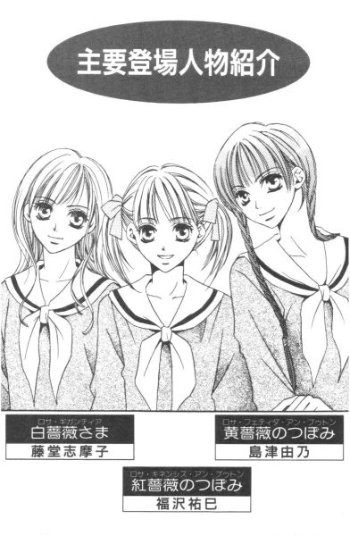

| [今野緒雪] マリア様がみてる14 | |
| 今野緒雪 | |
| (2015) | |
|
マリア様がみてる
涼風さつさつ
今野緒雪
|
もくじ
はじめの一歩
それが問題だ
お蔵入り『パン事件』
私を見つけて
花寺の合戦
あとがき


マリア様がみてる 涼風さつさつ
「ごきげんよう」
「ごきげんよう」
さわやかな朝の挨拶が、澄みきった青空にこだまする。
マリア様のお庭に集う乙女たちが、今日も天使のような無垢な笑顔で、背の高い門をくぐり抜けていく。
汚れを知らない心身を包むのは、深い色の制服。
スカートのプリーツは乱さないように、白いセーラーカラーは翻らせないように、ゆっくりと歩くのがここでのたしなみ。もちろん、遅刻ギリギリで走り去るなどといった、はしたない生徒など存在していようはずもない。
私立リリアン女学園。
明治三十四年創立のこの学園は、もとは華族の令嬢のためにつくられたという、伝統あるカトリック系お嬢さま学校である。
東京都下。武蔵野の面影を未だに残している緑の多いこの地区で、神に見守られ、幼稚舎から大学までの一貫教育が受けられる乙女の園。
時代は移り変わり、元号が明治から三回も改まった平成の今日でさえ、十八年通い続ければ温室育ちの純粋培養お嬢さまが箱入りで出荷される、という仕組みが未だ残っている貴重な学園である。
にぎやかな夏を見送ったせいか、秋には、なぜか「寂しい」とか「もの悲しい」というイメージがついている。
けれどそれは、やっぱり単にイメージ上の話で、この先様々なイベントを控えた女子高生たちは、過ぎゆく季節を惜しんでため息をついたり、落ち葉と一緒に涙を落としたり、そんなことをしている暇などないのが現実。
もちろん、生きていれば、暑かろうが寒かろうが、季節や天気にかかわらずいろいろなことが起きるだろう。
けれど大抵のことは、小さな風がさっと脇を吹き抜けていく、それくらいの出来事なのだ。
はじめの一歩
１
空色のひんやりとした扉を開けると、そこには女子校内の施設とは思えぬ、一種異様な空気で満ちあふれていた。
「大変お待たせいたしました」
先鋒をつとめる令さまの伸びやかな声に、待たされていた客人たちはこの部屋唯一の出入り口であるところの扉に注目した。そして、一斉に立ち上がるやいなや「ふえっ」だとか「うおおっ」だとか思い思いに小さく言葉を発したのである。いや、それは無理矢理文字に置き換えればそう表記するより他にないというだけの話で、彼らの声を忠実に日本語の文字に変換するのは到底不可能と思われた。
しかし、「うおおっ」って。サファリか、ここは。
いや、リリアン女学園であるのだ。間違いなく。
ただ、通常ここではほとんど、いや絶対に生息していない学ラン姿の男子生徒の群れが、一時紛れ込んでいるだけの話。
でもって、先ほどの雄叫びは、「あっ」とか「うっす」とか、彼らの世界ではそのような言語であろうと思われる。決して威嚇のうなり声ではない。
が。
男に対しての免疫力が極端に弱い人間にとって、そんな見極めなんかできるはずもない。
「お姉さま......」
祐巳は、扉の陰で硬直寸前のお姉さまの手にそっと触れた。
「大丈夫よ」
祥子さまは、祐巳の手をキュッと握り返してほほえんだ。精一杯上げた頬の肉が、かなり引きつってはいるけれど、お姉さまが言うように、うん、どうにか大丈夫のようだ。
生徒会室である薔薇の館ほど慣れ親しんだ空間とはいえないが、ここだってリリアン女学園の一角。立派なテリトリーである。
「緊張度合いは、先方の方が勝っているはずだわ」
己にそう言いきかせると、祥子さまは令さまに続いて入室した。
「ようこそ、花寺学院高校の皆さま。ああ、どうぞお楽になさって」
胸を張って。いつもの女王さま然とした態度で。負けず嫌いのお姫さまは、前回の失態を取り返すために、いざ戦場へと足を踏み入れた。
祥子さまの後を志摩子さんに譲ってから、祐巳は由乃さんと一緒に会議室に入った。志摩子さんは祥子さまのコンディションを気にして祐巳に先に入室するよう促したけれど、一応薔薇さまを先に通すのが筋だと思ったし、祥子さまの様子からは、何も妹がぴったりくっついていなければならないほど弱ってはいないだろうと判断できたから。
実際、祥子さまの場合、過保護にしすぎることがかえってマイナスに働くことがあるので、そのさじ加減が難しいのだ。それは、もちろんふにゃふにゃの甘えん坊さんになってしまうということではなくて、「私を見くびる気？」などと怒りまくるという意味なのである。
室内は折りたたみ式の細長いテーブルが四つ、田んぼの「田」の形で組み合わせられて、花寺とリリアンの生徒会代表者六人ずつ向かい合う形に椅子が並んでいた。
何だか、集団見合いみたいだなぁ、と祐巳は思った。そういえば懐かしのテレビ番組とかいうので、これに似たシチュエーションを観たことがあった。確か、最後の席に座った人が、ボケ役というお約束があるとかないとか、そんな感じの。
それではと、祐巳が花寺のどん尻を見た。すると、そこには何と弟の祐麒が座っているではないか。向かいのリリアン側は、今はまだ空席になっているが、唯一の一年生である乃梨子ちゃんが座る予定になっている。
祐麒対乃梨子ちゃん。さて、どちらがより上手にボケをかまして笑いをとれるでしょうか。──って、違うか。
というわけで今日は、花寺とリリアンの生徒会役員の顔合わせのしきり直し。
場所は花寺学院でという話もあったが、祥子さまのことを考えてリリアン側に来てもらうよう要請した。それでもいきなり薔薇の館に招くのもどうかという話になって、山百合会は結局図書館二階の会議室の使用許可をとったのだった。
さて、乃梨子ちゃんが水筒に入れてきた麦茶を紙コップに注いで配り終わると、当然双方の自己紹介という流れになるわけだが、「その前に」と祥子さまはおもむろに立ち上がって言った。
「本日はわざわざお運びいただいてありがとうございます」
いいえこちらこそ、という感じで、学ラン軍団は一斉に頭を下げた。
「自己紹介の前に、一言お詫び申し上げさせていただきたくて。先日は、私の体調不良のために顔合わせをお流れにしてしまいまして大変失礼いたしましたわ。せっかくいい機会でしたのに」
本当のところ、祥子さまは花寺学院高校生徒会役員の、バラエティー豊かな風貌を見てショックを受けて具合が悪くなってしまったのだけれど、そんなことはおくびにも出さず、頑として「体調不良」を譲らなかった。
「おかげんはいかがですか」
祐麒の友達の小林君が、声をかけた。服装が変わっただけで、ヤンキーから理数系の優等生タイプにイメージアップした彼は、誰にでも気安く話しかけられる軽さが持ち味である。
「ええ。お陰さまで、あの後はすっかり」
祥子さまは軽くほほえんだ。
「暑気あたりでしょうか。夏は苦手ですの」
がんばっている、がんばっている。今はまだ、努力して「男の子なんて平気よ」というキャラを演じているわけだけれど、それも大切なステップである。
制服に身を固めた花寺の生徒。
無駄な装飾が一切ない、事務的で清潔な空間。
他校にお邪魔しているという意識からか、向かい合う青年たちは皆、私服の時より締まった顔つきをしている。
初めからこういう形で顔合わせをしていれば、祥子さまにも刺激が少なかったのかな、なんて祐巳は思った。けれど、夏休み中に一度強烈な出会いがあったからこそ、今日の日があるのかもしれない。
「それでは、花寺の方から自己紹介させていただきます。ちょうどそのように並んでいますので、年の順ということで。......いいよな、ユキチ」
小林君は、一応ラストの祐麒に声をかけた。いうことは、花寺の生徒会は一年生がいないということだ。祐麒は、ぎりぎり年度内に組み込まれる四月一日生まれである。おかげでほぼ一年差のある姉の祐巳と同学年になってしまった。早産で生まれてさえこなければ、ゆうゆう次の学年であったはずなのに。生まれながらの苦労人であった。
「じゃ、日光先輩からどうぞ」
祐麒が先頭に座った人に声をかけた。すると、その人だけでなくその隣の人も一緒に立ち上がった。
「花寺学院高校三年、薬師寺昌光」
「同じく、薬師寺朋光」
（......）
山百合会のメンバーは、全員息をのんだ。
立ち上がった彼らは、都庁の第一本庁舎と見まごうばかりの大きな身体。いや、その表現は多少大げさだとしても、それに匹敵するくらいの威圧感があった。二メートル近くあるんじゃなかろうか。これだけ大きな学ランだと、やっぱり特注になるんだろうな、なんて余計なことを考えちゃうくらいに。
「あの、......双子でいらっしゃるんですか」
恐る恐る、由乃さんが尋ねた。
「そうです」
「そうです」
って、ステレオ放送のように別の場所から同じ声が聞こえてくる。
「でしょうね」
これだけそっくりで同じように大きくて。これで違っていたら、むしろ驚きだけど。
ニッコウとガッコウ。
そういえば、と祐巳は思い出した。彼らとは、一度避暑地で会っていた。
『双子じゃないのに、似ているね』
確か、祐巳と祐麒を見比べて、そんなことを言っていた。あのときは深く考えなかったけれど、それはたぶん、自分たちが双子だからこそでた言葉だったのだろう。
祐巳が一ヶ月ちょっと前の記憶をたぐり寄せている間にも、自己紹介は進んでいく。
「二年、高田鉄。趣味は身体作り」
「か、からだづくり......？」
リリアン校内では未だ聞いたことのない単語に、祥子さまの顔が微妙に引きつった。
体力作りではなく、身体作り。極めて近い単語であるが、その醸し出す雰囲気はかなり異なる。何だろう、ニュアンスの違いを説明するのは難しいが、聞き手の受け取り方は絶対的に違ってくる。
が、その空気を読めない高田君は。
「はいっ。好物は鶏のササミとプロテインですっ」
自分に興味をもってもらえたのだと勘違いしたようで、うれしそうに胸の筋肉をぶるぶると震わせた。
ただ座っていただけだと、ちょっと固太りな人くらいに見えるのだが、その実、筋肉ムキムキマンであったらしい。確かに、夏の終わり、半袖シャツから飛び出たご贈答用ハムを見たような気がしなくもないが。とにかく、かっちりした学ランは体型を隠す働きがある。
しかし、こういう男性は、たぶん祥子さまの周りにいない、と思う。いきなりこういう強烈な「男」をアピールされては、いくら祥子さまががんばったって、がんばりの限度ってものがある。
「次、小林、行けっ」
微妙な空気を察した祐麒が、身を乗り出して言った。
「お、おう。同じく二年、小林正念です。得意教科は数学。苦手教科は数学以外のすべて」
「ふふっ」
祥子さまが、ようやく笑った。よし、少し持ち直した。このまま突撃ー、っと思ったら、次はやけにおとなしい男の子だった。
「あ、有栖川と言います。二年生です」
細くて、目がくりくりしていて、アイドルグループに一人はいそうな可愛いタイプ。お流れになった幻のご対面の日、こんな子いただろうか。──と、そこまで考えて、祐巳は「そうだ」と思い出した。
いたいた。白いフリフリのキャミソールに、赤いパンツを穿いて、ミュールをつっかけていた女の子。花寺は男子校だから、えっと、ということは......。
『おかまもいます』
以前聞いた、小林君の言葉が甦る。そうか、やっぱりそういうことか。
そのことに気づいているのかいないのか、現在の祥子さまは硬直もしていないし表情も引きつってはいなかった。祐麒たちは心配していたみたいだけれど、少なくとも高田君よりはなじみやすいようだ。やはり「男男」している方が、苦手なのかもしれない。そうやって考えると、確かに祥子さま受けをしている祐麒もそれほど男臭くはないのだった。
「同じく二年、福沢祐麒です。いつも姉がお世話になっています」
その祐麒の自己紹介が、花寺側のラストとなる。
「やっぱり、似ているね。祐巳さんに」
由乃さんが、小声で囁いた。
「まあね」
それはいいかげん飽きてしまうくらい、言われ続けてきた言葉で。自他共に認めるそっくり姉弟だから、もう「まあね」くらいのコメントしかでなくなってしまった。それより、すぐにでも始まりそうなリリアン側の自己紹介に全神経は集中している。
何といっても、最初は──。そう、祐巳のお姉さまである祥子さまであるわけだし。
「リリアン女学園高等部、三年、小笠原祥子です。山百合会での通り名は紅 薔 薇です。お見知りおきを」
麗しのお姿をうっとりと眺め、張りのあるお声を夢見心地で聞く。誰もが祐巳のように陶酔しきって見ていると思いきや、世の中には罰当たりな人間もいるのである。
「山百合会とは、生徒会のことですね。しかし、ロサ......何とかとは、なかなか覚えるのは難しそうだなぁ」
数学以外の教科はすべて苦手の小林君。残念ながら、この山百合会の役職の呼び名は、理屈抜きで丸暗記するしかない類のものであった。
「花寺の皆さまは、無理してお呼びいただく必要はありませんわ。姓でも名でも、お好きなように呼んでください」
「あ、それは助かります」
祥子さまは寛大に申し出てくれたが、それに乗じて「祥子さん」とか「祥子ちゃん」なんて呼ぼうものなら、このお姉ちゃんが許さないからね。──という威嚇光線を、祐巳が小林君とその周辺に向けて投げつけている間に、祥子さまと入れ替わりで令さまがすっくと立ち上がった。
「同じく、黄 薔 薇こと支倉令です」
「お噂はかねがね」
マッチョの高田君が言った。
「どんな噂でしょう」
「腕のたつ女剣士だと。花寺の剣道部にも、ぜひ一度支倉さんと竹刀を交えたいと言っている者がいますよ。真っ直ぐに打ち込まれる面を、自らの身体で体験してみたい、とか」
「それはどうも」
令さまは複雑な表情をして咳払いをし、由乃さんは面白くないといった面持ちでそっぽを向く。でもって祐巳は、やっぱり令さまに竹刀で叩かれたい男の子も存在してたんだ、って認識を新たにした。
「二年、藤堂志摩子です。白 薔 薇です」
「ああ、小寓寺の──」
小林君がつぶやいた。
「は？」
「以前、ご住職がうちの学校に講演にいらしたんですよ。あの話はおもしろかったなぁ。体育館中大爆笑でしたよ。娘さんがリリアンにいるって知ったのはつい最近のことですが、あのご住職のお嬢さんということで、お目にかかるのを楽しみにしていたんですよ」
「それは、......父が大変失礼いたしまして」
志摩子さんは、顔を赤らめて意味不明な受け答えをした。しかし。娘にそう言われる志摩子さんのお父さんって、いったいどういう人なんだろう。
志摩子さんが着席してしまったので、次は泣いても笑っても祐巳の番である。
「二年、福沢祐巳です」
緊張緊張。
ちょっと声が上ずってしまったけれど、大丈夫。
「 紅薔薇のつぼみをやらせていただいてます。えっと」
それだけじゃ何なので、先ほどの弟にならって花寺の皆さまに向けて一言付け加えることにした。
「そこにいる福沢祐麒の実の姉です。......一応」
「一応、って何だよ」
斜め向かいの席から、祐麒の突っ込みが入った。すると、花寺・リリアン双方の席からクスクスと笑いが漏れた。
まずい。このままでは、福沢祐巳・祐麒姉弟漫才に突入しかねない。
「おしまい」
頭を下げて、早々に席に着いた。
「二年、 黄薔薇のつぼみこと島津由乃です。先に自己紹介しました、支倉令の従妹です」
入れ違いに立ち上がった由乃さんは、そこまで言ってからチラリと祐巳に視線を向けてニヤリと笑った。
「こちらは正真正銘」
どっかーん。会場が温まってきたところで、絶妙の間合いで落ちがついたものだから、室内は大爆笑である。
しまった。それじゃ、さっきの姉弟漫才は単なる前座で、おいしいところは全部由乃さんに持っていかれてしまったわけだ。別に笑いがとりたいわけではないけれど、負けたみたいでちょっと悔しい。
「一年、二条乃梨子です。趣味は仏像鑑賞です」
「仏像？ だったら、確かうちの学校にもあるけれど。学園祭の時、ついでに観ていったら？」
有栖川君が控えめに言葉を発した。
「あったっけ？」
小林君が、間抜け顔で祐麒に確認する。
「お前も観たことあるだろ。ほら、花祭りなんかに登場するやつとか」
「あー。あるある」
花祭りとはお釈迦様のお誕生日をお祝いする行事で、キリスト教でいうところのクリスマスにあたるものらしい。そうでした。花寺学院は仏教系の学校なのだ。
「誕生仏ですね。天上天下唯我独尊」
乃梨子ちゃんは、右手を上にあげたポーズをとった。
「通だ！」
高田君が笑った。
「やっぱり香水をかけるんですか」
「うちは甘茶だけど。かけられてるね。じゃぶじゃぶと」
お釈迦様の像が甘茶をかけられる、ってどんな感じなのだろう。知識のない祐巳は、想像力をフル稼働した結果、じゃぶじゃぶという言葉の響きから、バケツリレーの要領で次々と茶色い液体（甘茶なるものを知らないので、イメージ的にはお砂糖を入れた麦茶）をかけられる身の丈一六〇センチ前後のお釈迦様を思い描いた。実際は十数センチほどの大きさの柄杓を使ってかけるのだということを知ったのは、家に帰って弟の解説を聞いてからのことである。
花寺学院には、誕生仏以外にもいくつか仏像があるらしい。普段はしまわれているが、行事などの時には出されるとか。手続きを踏めば外部の者でも拝観できるということを聞いて、乃梨子ちゃんはちょっと興奮していた。本当に好きなんだなあ、って思う。
事前にリリアンの情報収集をしてきたとおぼしき花寺学院の皆さんの弾むトークと持ち前の明るさのおかげで、思った以上にその場は和やかな空気に包まれた。一時はどうかと思われた高田君の男臭さも、祐麒たちのさりげないフォローによりできるだけ前面に出されない配慮がなされ、どうにか祥子さまも平常心を保っている。
「さて」
もはや、司会者のようにその場を仕切っているのは小林君である。
「リリアンの皆さんにお手伝いいただく件ですが、三人の薔薇さまにはイベントの審査員およびプレゼンテーターをお願いしたい、と考えています」
「審査員とプレゼンテーターというと」
祥子さまが令さまを見た。
「去年と同じね」
二人が確認しあっていると、小林君が首を横に振った。
「いえ、今年は去年の『ミス花寺コンテスト』とは違います」
ミス花寺コンテスト、って。去年はそんなことをやったのか、って、花寺の学園祭に行ったことのない祐巳は心の中でつぶやいた。で、前薔薇さまたちは、その審査員なんてものをつとめてきた、と。
──男子校なのに、「ミス花寺」。
祐巳はその部分にぽっかりと記憶に穴が開いていたのだが、女子校のリリアンにも紛れもなく「ミスター」の称号がついた人がいたのであった。
「どう違うのかしら」
その、昨年度ミスター・リリアンの栄光に輝いた支倉令さまが質問すると、小林君は人差し指を天井に向けて声高らかに宣言した。
「題して、『花寺の合戦』！」
「はなでらのかっせん？」
山百合会のメンバー、つまり室内にいる女子全員が同時に聞き返した。
「合戦というと......、源平合戦みたいなもの？」
代表して、令さまが尋ねた。
「そうです。文字通り花寺高校の生徒が源氏と平氏、つまり運動部系と文化部系二派に分かれまして知力体力を駆使して戦う、まあ平たく言えばゲームをするわけです。ゲームごとにポイントがありまして、総合得点の多い氏が勝利となります」
一度説明を聞いたくらいじゃ、なかなか祐巳の頭には入りきらなかった。けれど、他のメンバーたちを横目で眺めると、皆うなずいているわけで。そのことから、大体の趣旨は理解できているものと思われた。
「それで審査員とは、何をするのかしら？」
祥子さまの言葉を受けて、今度は祐麒が説明をした。
「ゲームの最中、チャレンジャーにクイズを出します。その正解不正解を審査していただくことになります」
「では、プレゼンテーターは？」
「活躍したクラブまたは個人に、褒美を与えていただきたいのです。賞の内容はまだ未定ですが、今のところＭＶＰや努力賞などを考えています」
「褒美というと──」
「来月行われる、リリアン女学園学園祭の入場チケット」
「えっ!?」
弟の口から飛び出た言葉に、祐巳は思わず声を上げた。すると、祥子さまが小声で告げた。
「大きな声ださないの。例年通りのことよ」
「あ、そうなんですか」
リリアン女学園の学園祭は、諸々の理由から入場チケットがないと入れない。在校生に家族や知り合いがいればチケット入手は可能だが、それでも枚数制限があるわけで、何のコネもない人間はたとえお隣の学校の生徒であろうとも、中に入ることはできないのである。そこで山百合会から、花寺の学園祭の手みやげに毎年十枚ずつチケットを持参するという、いわば伝統ができてしまった。花寺の学園祭がリリアンに先駆けて行われるというのも、どうもその辺の事情が絡んできているようである。
「ご理解いただけましたでしょうか」
「大まかな内容は、承知いたしました。おいおい細かい部分を詰めていく必要はあるようですけれど」
祥子さまと令さまと志摩子さんが、花寺の提案を了解した。もちろん、薔薇さま三人が「いい」と判断したのだから、つぼみに異論があろうはずもない。
「何かご質問などありましたら」
「はい」
乃梨子ちゃんが、おもむろに手を挙げた。
「学園祭以外のことでもよろしいですか」
「もちろん」
「すみません、細かいことですが。有栖川さん」
「は、はい」
名指しされた有栖川君は、細い肩をビクンと上げた。
「私、下のお名前を聞き逃してしまったみたいで」
「えっ」
「それで、いただいていた資料を確認してみたのですが──」
乃梨子ちゃんは事前に配布されていた、メンバーの名前が書かれた紙に目を落としながら続けた。
「こちらにも書かれていなくて。あの、連絡などの関係上お聞きしておいた方がいいかと思いまして」
祐巳も一応確かめてみたが、乃梨子ちゃんが言うようにやはりそこには「有栖川」とだけ記載されていた。
有が名字で栖川が名前というわけでもなさそうだ。だって祐麒の場合、福沢と祐麒の間に一文字分のスペースが空いていたのだから。
「名前、ですか」
うーん、と祐麒が困ったように天井を見上げた。高田君はボンレスハムのような腕を組んでうつむき、小林君は眼鏡を外してレンズを拭いた。薬師寺兄弟は、──特に何もしていなかった。
「......乃梨子」
花寺メンバーの不可思議な動向を見て何かを感じたのだろう、志摩子さんが妹をたしなめるように名前を呼んだ。
「申し訳ありません。伺ってはいけないことでしたか」
乃梨子ちゃんがそう言うと。
「いいえ。いいんです」
テーブルの上に視線を落としていた有栖川君が、意を決したように顔を上げた。
「アリス」
祐麒が、制止するように声を上げた。だが、有栖川君はかまわず口を開いた。
「わ、......ぼくの名前は、有栖川金太郎といいます」
「──」
祐巳は、いやたぶん祐巳だけでなく、山百合会代表の六人全員が我が耳を疑った、と思う。
アリスガワ キンタロウ。
それは、何という──。
「違和感、あるでしょう？ 初対面で自己紹介すると、みんな笑うんです。だから」
しかし、今にも泣きだしそうな有栖川君の表情を見た上で、笑える人間がどこにいるというのだ。
「本当ね」
祥子さまが静かに立ち上がって、テーブルを回り込み有栖川君に近づいた。
「......アリス」
「え？」
「アリスってニックネームなのね？ 金太郎という名前もすてきだけれど、アリスという響きの方があなたにはぴったりだわ」
すると、有栖川君は。
「祥子さまぁ」
あろうことか祥子さまに抱きついて、その胸で泣きじゃくったのであった。
「私、間違って男の身体になんか生まれてきちゃって。本当は女の子に生まれてリリアンに入りたかったのに。そうして、祥子さまの妹になって、それでそれで」
「ちょっと、待った！」
思わず、祐巳は飛び出した。
「それだけは、だめよ。絶対だめ。だって、祥子さまの妹は私なんだから」
身体に心が合っていないという有栖川君は、本当にお気の毒だと思うけれど。それはそれ、これはこれ。
祥子さまを他の誰かに譲るなんてこと、どんな条件を出されたって祐巳には承知できないことだった。
「......そういうわけなの。悪いわね、アリス」
祥子さまは、有栖川君の身体をそっと離した。
「いえ。こちらこそ、ごめんなさい」
その声は聞こえていたはずだけれど、祥子さまはそのまま冷たく背を向けて振り返らなかった。
いや、振り返りたくても振り返ることができなかったのだ。
祥子さまは、硬直寸前にカチンコチンになっていた。有栖川君に同情して近づいたまではよかったが、不意打ちのように抱きつかれ、ブレーカーが下りてしまった電化製品のような状態になってしまっていた。
頭では有栖川君の心の中の女の子の部分を尊重しようとしても、身体はやはり否応なしに男の子であるということか。
それでも、どうにか自力で有栖川君から離れた祥子さまの底力はたいしたものである。
祐巳はお姉さまの腕をとって、支えるように席へと戻った。端からはたぶん、お姉さまを独り占めしているポーズに見えるだろうけれど、構わない。祥子さまのプライドを守ること、そして有栖川君への配慮こそが、最優先されるべきことだった。
「残念だな、アリス。リリアンに通っていたら、祥子さまの妹は無理でも、祐巳ちゃんのお友達くらいにはなれたかもしれないのに」
小林君が有栖川君の肩を、ぽんぽんと叩く。祥子さまを椅子に座らせて一安心した祐巳は、その言葉に顔を上げた。
「お友達？ なら、今からだってなれるじゃない」
「......え」
「もちろん、お姉さまは譲れないけどね」
片目を閉じて笑う。
「うれしい」
アリスこと有栖川君は、本当にうれしそうに手の平を合わせて小さく跳ねた。そんなに喜んでもらえるなら、こちらも喜んで、といった感じである。男の子が苦手なお姉さまの分までフォローしましょう、ってね。性別は男かもしれないけれど、アリスは中身が女の子そのものだから、女友達が一人増えたような感覚だった。
「アリス。私たちも友達としてなら大歓迎するよ」
令さまもそう申し出てくれた。けれど、私服で二人が並んでいるところを想像してみると、どっちが男でどっちが女かわからなくなってしまいそうだ。
「令ちゃんをとらないでね、アリス」
由乃さんは、わざとにらむような表情を作ってから笑った。
「ええ、由乃さん」
怖い顔をされたのに、アリスはうれしそうだ。
「よろしく、アリスさん」
「仲よくしましょう、アリス」
乃梨子ちゃんと志摩子さんも手をさしのべる。
「あ、ありがとうございます。皆さん」
山百合会のメンバー全員に受け入れられて、アリスは涙ぐんでいた。その頃にはシャットダウンしていた祥子さまも、みんなに囲まれて幸せそうなアリスをほほえみながら見つめられるくらいまで復活していた。
小さなショックの積み重ねで、祥子さまは徐々に鍛えられてきているようだ。
「えっと、じゃあアリスの件は解決ということでいいのかな」
祐麒が、ちょっと首をかしげながら確認した。何だか、腑に落ちないといった表情だ。
無理もない。はじめは名前のことを問題にしていたはずなのに、いつの間にか「お友達になりましょう」なんてところに着地してしまったのだから。
「いいんじゃないの。でもさ、何かアリスだけ得している気がしない？」
一人だけ女子と親密になった仲間を、小林君はうらやましげに眺めてぼやく。すると、隣で聞いていた祐麒が言った。
「普段、損することも多いんだから大目に見てやれよ」
「そっか」
「だな」
高田君もうなずいた。女子高生の中にいとも簡単にとけ込んでしまえるアリスは、男子校で苦労しているのかもしれない。同じ高校二年生でも、悩みというのは人によって千差万別。
「どんな形であれ、仲がいいことに越したことはない、ってことで締めさせていただきましょうか」
取りあえず、顔合わせと互いに親睦を深めるという今日の目標は十分に果たしたわけである。図書館会議室の使用時間もそろそろ終了に近づいてきたので、麦茶で乾杯してお開きということになった。
「乾杯」
とにもかくにも、第一回花寺学院・リリアン女学園の生徒会代表による会合は和気藹々のうちに、閉会ということに──。
「あの」
紙コップをテーブルに置くより早く、志摩子さんが突然口を開いた。
「私、さっきからずっと考えていたのですけれど。やはり、いくら考えてもどうしてもわからないことがあって」
帰り支度をはじめた花寺メンバーに向けられた志摩子さんの疑問は、単純明快なものであった。
「花寺学院の生徒会長さんは、結局どなただったのでしょう」
「あっ」
そういえば、って祐巳はそこでやっと気づいた。確かに自己紹介の時、学年と名前は聞いたが会長とか副会長とか書記とか、そんな役名までは誰も言っていなかった気がする。そうそう、年の順とか何とか言って端から順に挨拶していっただけだ。配られた資料にも、その記述はない。
その指摘を聞いた祥子さまと令さまは、あわてて以前花寺から届いた学園祭の手伝い依頼の書状を取り出して中身を確認した。
しかし、そこに記されてある差出人の欄にはただ「花寺学院生徒会」とあるだけで、生徒会長の名前までは書かれていなかった。
「薬師寺さんが生徒会長ではないの......？」
祥子さまが言った。
上級生だし、どっしりと構えているし。でも。だとしたら、どっちの、って祥子さまにあえて聞きたい。薬師寺さんは、区別はつかないほどそっくりだが確実に二人いる。
「私は、一番しゃべっていた小林君だと思ってた」
令さまがつぶやいた。なるほど、さっきからこの場を仕切っているのは間違いなく小林君である。
「あ、僕は会計です」
計算の好きな小林君。なんて適任な仕事をしていることか。
「で、ついでに言うなら、日光月光......いや、薬師寺先輩たちはご意見番というかお目付役というか。つまり、前生徒会役員で、現在引退して顧問という立場なわけです」
言われてみれば、確かに彼らはどっしりと構えているだけで、ほとんど意見を言っていない。お目付役であるならば、そうかと大きくうなずける。
ということは、残る候補は三人。
花寺の生徒会長といってすぐに思い浮かぶのは、やはり前年度の会長である柏木さん。しかし、三人のみならずここにいる六人全員、一人として、柏木さんとイメージが重なる人物はいなかった。
「クイズ形式にします？ いっそ、皆さんにアンケートをとってみましょうか。誰が一番生徒会長らしいか、とか」
「ばか、小林。失礼だぞ」
祐麒が友人をたしなめた。そして、おもむろに学ランの襟をきちんとあわせて背筋をピシッと伸ばす。
真剣な顔をして、何を言うかと思えば。弟は。
「不手際、申し訳ありませんでした。僕が、今年度の花寺学院高校の生徒会長です。よろしくお願いします」
そして、その場で深々と頭を下げたのだった。
へえ、祐麒が生徒会長。
──って。
「えーっ!?」
祐巳は会議室の天井に響きわたるほどの大声で叫んだ。
だって。
そんなの、そんなの初耳だったんだから。
２
つまりね、と弟は言った。
「花寺の高校は、伝統的に生徒が二派に分かれているんだ」
「二派？」
「そう。硬派と軟派、体育会系と文化系、源氏と平氏、白と赤。どういう言い方でもいいけれど、とにかく大雑把にいえば無骨なスポーツマンと軟弱なインテリみたいな感じかな」
Ｍ駅でＪＲ線組と分かれて南口からバスに乗り込んでやっと、祐麒は事情を姉に説明しはじめたのであった。
「スポーツできるインテリもいるでしょ」
後ろから二番目の二人がけの椅子に座り、二人は声を落として話し込んだ。
「大雑把、って言ったろ？ 大抵は所属している部活動で振り分けられる」
だから、部活を選ぶということは、三年間の学生生活を決める重要な選択事項だというわけだ。新入生は夜も眠れないくらい悩むという。
「祐麒は？ 部活、入っていないじゃない」
「入っていない。それが、まずかった」
「へ？」
「中立の立場、ってわけ。生徒会長の条件の一つ」
真っ二つに派閥が分かれている生徒たち。生徒会長のカラーによって、派閥に優劣がつくのは避けなければならない。
「柏木さんは──」
「あの人は、俺とは逆。複数の部活に所属していた。運動部も文化部も、平等に活躍していたんだ」
なるほど。祐巳が知っているだけでも、剣道やって、お茶も点てて、ダンスまで踊っていたっけ、あの人。しかし、祐麒が言うには、まだ他にもいろいろな活動をしていたらしい。花寺大学に優先入学しちゃうくらい頭もいいわけだし、いわゆる文武両道、ってやつ。何でもできちゃうスーパーマンだ。
「でも、祐麒以外にもいるでしょ。部活に入っていない生徒は」
生徒が大きく二つに分かれているのが事実として、どちらにも属さないという人だって当然でてくるはずだった。
「少数だけどね」
祐麒は「いる」と答えた。
「だったら、何も祐麒が生徒会長にならなくても」
「柏木先輩が、指名していったんだよ。置きみやげ、ってやつ」
「前任者が指名すれば、それで決まるの!?」
「まさか。選挙はあったよ。祐巳たちのところもあるだろ？」
「うん。まあ」
リリアン女学園高等部の場合、つぼみがもち上がりで薔薇さまになる確率は非常に高い。だが、それでも生徒会役員選挙は毎年行われる。そうそう、今年度はつぼみ以外から立候補者がでたものだから、大騒ぎになったっけ。
「俺らの場合、他に立候補者はいなかったけどね」
祐麒は自虐的に笑った。
副会長の高田君は運動部、書記のアリスは文化部、会計の小林君は祐麒と同じく無所属ということで、現在生徒会役員はうまい具合にばらけているとか。彼らもまた、前生徒会役員たちの談合により指名された人たちなのだ。
「ま、そういうことだから、よろしく」
ちょうどバスが停留場に着いたので、祐麒はそこですっぱりと話を切り上げて椅子から立ちあがった。
「よろしく、って。ちょっと待ちなさいよ」
祐巳の鞄をひょいと持ち上げ、先にステップを下りる弟を数歩遅れて追いかける。
「どうして今まで私に隠していたの」
バスを降りて、祐麒の背中に尋ねた。
「隠してなんてないよ。言わなかっただけだ」
祐麒は、祐巳が追いつくまで待ってから、ゆっくりと歩きはじめた。客を降ろし、新たな客を乗せたバスが、祐巳たちを追い抜いて小さくなる。
「同じことでしょ。私、以前に今年の生徒会長はどんな人かって聞いたことあるもん。その時、祐麒ははぐらかしたよね」
そのうちわかる、とか何とか言って。
生徒会長にいじめられたりしていないだろうか、とか。逆に色目を使われたりしていたらどうしよう、とか。心配してやきもきして。
なのに、本人が生徒会長だって？ まったく、バカにして。
「こんな大切なことを、弟に知らせてももらえない姉なわけ？私は。情けないよ。この気持ち、あんたにわかるの？」
祐巳の言葉に、祐麒が立ち止まった。
「それは、ごめん。悪かったと思ってます」
しおれた花のようにしょんぼりと、頭を下げる弟。十分反省しているってわかるから、これ以上責めちゃいけない。
「どうして最初から言ってくれなかったの？」
「祐巳が実の姉だからこそ、言えなかったんだよ。だって、惨めじゃないか。単なるお飾りで、実権も何もない平社員みたいな生徒会長だなんてさ」
「そ、そうなの？」
「俺が権力あるように見える？」
「見えなかった、......ね。確かに」
祐巳は、今日リリアン女学園を訪ねてきた花寺のメンバーと、彼らの様子を思い返してみて答えた。
「言ってくれるな」
祐麒は苦笑して、再び先を歩き始めた。
でも、と弟の背中を眺めながら祐巳は思った。だからといって、祐麒以外の誰が一番生徒会長らしかったかと問われれば、「この人」と言い切れるような人もいなかった、と。
「祐麒はさー」
「ん？」
「柏木さんみたくなりたいの？」
「えっ？」
祐麒は、目を丸くして振り返った。
「無理をすることはないって。権力のない生徒会長、いいじゃない。庶民派の私たちには、権力なんてそんなもの似合わないよ」
柏木さんがどんな風に祐麒を指名していったかは知らないけれど、ちゃんと信任投票を経て選ばれたのだから。もっと胸を張るべきだ。
きっと、生徒たちだって柏木優のコピーを求めているんじゃない。等身大の福沢祐麒を選んだはず。
去年の学園祭の劇で、祐巳が祥子さまのようなシンデレラをできなかったように。祥子さまだって、祐巳のシンデレラをできなかった。たぶん、そういうことなのだ。
「......そっか。祐巳もいずれ生徒会長になるかもしれないんだ」
「かも、だけどね」
その前に、お約束の選挙がある。祐麒のように、すんなり信任されるかどうかもわからない。
その割りに焦っていないのは、まだ何ヶ月も先の話だからか。それとも、なるようになると開き直っているからなのか。祐巳本人にもわからない。時期が来ると、実感がわいてドキドキするのかもしれないし。
二人は、しばらく無言のまま並んで歩いた。道の左右には、様々な家々が建ち並ぶ。
古い家、新しい家。
大きい家、小さい家。
一風変わった家、三つ子のようにそっくりな家。
ある家の垣根の中では、お父さんらしき人がホースで庭の植木に水をまいていた。そこにはまだ、夏の残り香があった。
次第に我が家が見えてきた。
お父さんが設計した、大好きな家。けれどここだって、他人から見れば他の家と何ら変わらないただ普通の一軒家なのかもしれなかった。
「祐巳」
家の門と一緒に、祐麒が口を開いた。
「ん？」
で。何を言うかと思えば。
「お前、強くなったな」
だって。
「うっそお」
何の冗談かと、祐巳は笑ったけれど、祐麒は真顔で付け加えた。
「ちょっと、焦るよ」
そして、まるで追い抜かされまいとするように、扉に小走りで駆け寄り先に家に飛び込んだのだ。
「何それ」
何で、焦らないといけないのだろう。
祐麒は、どう思っているのかしらないけれど、一応、私の方が姉なんだよ、って。祐巳は、小さく小さくつぶやいてから、夕飯の匂いのする我が家へと入っていったのだった。
それが問題だ
１
「弟さんは、祐巳さまに嫉妬しているんですわ。きっと」
ちり取りの中に、床のゴミを集めながら、その子は言った。
「嫉妬？」
身長、一七九センチの長身をつかまえて「その子」もないが、これでもれっきとした十五歳。祐巳より一学年下の高等部一年生である。
「聡明で、可愛いくて、性格も明るくて、非の打ち所のない完璧な姉が身近にいたら、徹底的にいじめるか、白旗を上げて下僕になるか、存在自体をなかったことにして無視するか、それくらいしか自分を守りきることができませんもの」
「か、完璧な姉って。可南子ちゃん」
ご冗談を、って。テーブルを拭いていた手を止めて、笑う準備をはじめた祐巳であったが──。
「祐巳さまの一番の魅力は、ご自分がどんなにすてきな女の子であるか、お気づきにならないところですね」
可南子ちゃんは、真顔で言った。どうやら、先ほどの「冗談」は彼女の中では冗談ではなかったらしい。
「なんて奥ゆかしいんでしょう、祐巳さまは」
目を輝かせてつぶやく後輩。
で、放課後の薔薇の館の二階に、ただ今、彼女と祐巳は二人きり。
故に、誰もフォローしてくれる人はいないのである。
だが、ああしかし。
部屋に充満する、この妙にキラキラした空気のなかで、いったい何をどうしたらいいのだろうか。
「えっと」
生まれてこの方、祐巳は年下の女の子にそのように賛美されたことがなかった。つまり過去のデータやサンプルがないので、このような場合にどのように反応するのが正解なのかまったく見当がつかない。
「あ、そうそう」
黙ったままでいるのも気まずいので、取りあえず言葉をつなぐことにする。
「ごめんね。薔薇の館の掃除までしてもらっちゃって。私たち使っている人間が、ちょこちょこやっているからあまり気にしてくれなくても大丈夫だから」
「いいんです」
可南子ちゃんは、長いワンレングスの髪をかき上げてほほえんだ。
「今週は、乃梨子さんが外の掃除に出ているので、薔薇の館に着くのが遅くなると予想したものですからお手伝いしにきただけなんですよ。でも、当たりでしたわ。祐巳さまが一番乗りでしたものね。私、祐巳さまには気持ちよく過ごしていただきたいと願っているんです。ああ、それをこちらに」
そう言いながら、可南子ちゃんの手は祐巳の手から素早く台拭きを取り上げた。
「あっ」
「祐巳さまはそのようなことなさらないで」
台拭きは、水道ですすぎ洗いしてきつく絞られ、流しの隅へと追いやられた。
「あのさ、可南子ちゃん」
テーブルを拭くくらいのことで「そのようなこと」扱いされちゃったら、もはやどんな掃除も排除されなければならなくなってしまうではないか。実際、ここに来る前、祐巳はトイレ掃除をしてきたのだが、とてもじゃないが打ち明けられそうもない。特に、便器担当だったなんてことは。
「それもこれも、一年生の手が足りないからですわ。だから祐巳さまにまでつらい仕事が回ってくる。早く 黄薔薇のつぼみが、妹をつくってくださればいいのに」
「......」
可南子ちゃんは、由乃さんが聞いたら目をつり上げて怒りそうなことを口走っていた。
それを言うなら、祐巳がまず妹を作るのが筋というものなのだが、たしなめようにも可南子ちゃんの目はもうあっちの世界に行っちゃっている。
「おー。可南子ちゃん、来てたの」
「あ、ごきげんよう、黄薔薇さま」
ビスケット扉が開いて、令さまが部屋に入ってくると、やっと可南子ちゃんがこっちの世界に戻ってきた。
祐巳は、ほーっと息を吐いた。可南子ちゃんと自分の他に誰かいる。少なくとも、キラキラ空気に飲み込まれずに済みそうだ。
「毎度、ご奉仕ごくろうさまだね」
令さまは椅子に鞄を置いてから、その隣の席にどっかと腰を下ろした。
「いえ。たった今、来たところです。ですから、ここの掃除はもうほとんど祐巳さまが終えてしまわれていて」
「あら、そうなの？」
チラリ。令さまは、祐巳でも可南子ちゃんでもない方向に視線を投げて笑った。
「麦茶でよろしいですか、黄薔薇さま」
「あ、サンキュー」
「祐巳さまにもお入れしますね」
「あ、ありがとう」
もう慣れたもので、可南子ちゃんは冷蔵庫を開けてガラス容器を取り出し、洗いかごに伏せてあったグラスにコポコポと程よく冷えた麦茶を注いだ。
「あの、令さま」
可南子ちゃんが後ろを向いている隙に、祐巳はこそこそと囁いた。
「掃除の件ですが、あれは私の手柄じゃ......」
「わかってる、って。ま、いいじゃないの。祐巳ちゃんのために健気に手伝っているんでしょ、彼女。学園祭でどこもバタバタしているこの時期、無償で助っ人やってくれるなんて奇特な人、なかなかいないし。せっかくいい気分になっているところを、水差しちゃかわいそうってものよ」
「はあ」
まあ、今のところ過剰な賛美以外に実害はないし。実際、助かっているし。
でもなぁ、って。祐巳はちょっと思うのだった。いいのかな、こんな風に甘えてしまって。
無償のご奉仕はありがたいけれど、もらいっぱなしの立場というものは世の中で成立するのだろうか。
「それじゃ、私はこれで」
可南子ちゃんは二人分の麦茶をテーブルに置くと、小さく礼をした。
「ああ、ありがとう」
「いえ。それではまた」
ビスケット扉の向こう側に姿が消えて、階段を下りる音が徐々に小さくなって、かすかだが館の出入り口のドアが開閉する音が祐巳の耳に届いた。
さて、と、麦茶を飲むためにグラスに手を伸ばすと、令さまが笑った。
「どうしたの、祐巳ちゃん」
「は？」
「ため息」
「えっ」
「結構大きかったけど」
「そ、そうですか」
指摘されて初めて意識したけれど、確かにしていたような気がしなくもない。──ため息。
「意味ありげだね」
「まさか」
でも、可南子ちゃんの前では、ちょっと肩の力が入っていたかも。
だって、慕ってくれる人の前では、変なところ見せられないって、無意識に緊張してしまうのが人情ってものだ。
２
「しかし、祐巳ちゃんも貫禄がついてきたってことかな。熱狂的な一年生ファンが押しかけ女房のようにまとわりついて」
リリアン女学園の学園祭入場チケットに山百合会の印を押しながら、令さまが言った。
「何、それ」
枚数を数えていた手を止めて、祥子さまが顔を上げる。
「あ、まだ祥子は気づいていないの？ 二学期になってから、ちょくちょく遊びに来るよ。明らかに、祐巳ちゃん目当て」
ぺったんぺったん。
やり始めてそろそろ三十分になるだろうか、単調な仕事に飽きたのか、令さまは雑談の種をさりげなくばら蒔いた。
ハンコ押しは機械的な作業であるから、おしゃべりしながらでもできる。だが、頭を使う仕事をしている人たちにとっては、なかなか酷な仕打ちである。
「いや、私目当てだなんて。そんな」
ガッチャンコガッチャンコ。ナンバーリングを押しながら、祐巳は謙遜してみた。
入場チケットに通し番号を打っていく作業は、単調といえば単調だが、数字が順番通りに押されているか確認もしていかなければならなかった。おしゃべりとの両立はどうかというと、どちらとも言えない、中途半端な仕事といえよう。
「わかったわ。あの、背の高くて髪の異様に長い──」
祥子さまは、滑り止めのジェルをつけた指で宙をかき混ぜた。
しかし、「異様」って。そう言う祥子さまの髪だって、お世辞にも短いとはいえない長さがあった。
「それそれ」
令さまが印を振り回した。可南子ちゃんの外見の特徴は、背が高くて髪が長い、まずそれを筆頭にあげなければならない。
「一度、廊下で祐巳と話しているところを見たわ。でも、私が近づくとすぐにいなくなってしまったけれど」
「別に、お姉さまの姿を見て逃げたわけではないと思いますが」
廊下なんかですれ違ったのが顔見知りだったら、立ち話くらいはするでしょう。でも、それは挨拶に毛が生えた程度の内容でしかないから、すぐに別れて自分の目的地へと向かう。たぶん、その時もそんな感じだったのではないだろうか。
「祥子が、すごい目でにらんでいたんじゃないの？」
「なぜ、私が」
「可愛い祐巳ちゃんに気安くしゃべりかける、謎の下級生に嫉妬して」
「からかうの、やめてちょうだい」
ちょっとほっぺたをふくらませて、祥子さまは令さまをにらみつけた。お、可愛い、と祐巳は思った。お姉さまを見てそんな風に感じるのは、大変失礼なことなんだけれど。
「でも、ああそう。彼女、一年生だったの」
祥子さまは、まるでため息のように大きく息を吐いた。
「そういえば、紅薔薇さまのいらっしゃる時はあまり出没しませんね、可南子さん」
速乾性の朱肉で押印した面が乾いたのを確認しながら、乃梨子ちゃんが入場券を重ねていった。
「というか、私もそんなによくは見かけないわよ。祐巳さん一人の時を狙って接近しているんじゃない？」
由乃さんが、クラスごとに分けられた券を袋に収める。
「まさか」
祐巳は笑った。おしゃべりとの両立などということはすでに諦め、番号打ちの手が止まって久しい。
「乃梨子の友達なの？」
黙って聞いていた志摩子さんが尋ねた。
「友達、っていうか。クラスメイトです」
友達とクラスメイトの境目とは、いったいどの辺りにあるのだろう。
「知っていること、教えて」
そう言ったのは、祥子さまだ。それで乃梨子ちゃんは、持っていた入場券をいったんテーブルに置いて可南子ちゃん情報を語りはじめた。
「一年椿組、細川可南子さん。クラスでは、見た目ほど目立った存在ではありません。部活は、入学してすぐ仮入部のような形でいくつか文化部に顔を出していたようですが、今は何もやっていないと思います。特定のグループに入って一緒に行動することが好きではないようで、休み時間なども一人でいることが多いです。一匹狼みたいな感じというか」
乃梨子ちゃんが話している間ずっと、祐巳は自分が知っている可南子ちゃんのイメージとはずいぶん違うな、と思っていた。
祐巳の目には人なつっこくて明るくて気が利く女の子に映っていた可南子ちゃんは、乃梨子ちゃんの目を通すとまるで異った違った印象に変わる。
「一匹狼？ まるで、乃梨子ちゃんみたいじゃない」
由乃さんは容赦なく言ったけれど、結構的を射ているかもしれない。しかし、どっちかっていうと愛想がなくって冷めている乃梨子ちゃんがそんな風に表現するとなると、可南子ちゃんはかなりクラスメイトとの付き合いが悪いということになりそうだ。
「乃梨子は声をかけてあげないの？」
志摩子さんの言葉に、乃梨子ちゃんは首を横に振った。
「事務的な会話はできるんですが、雑談とかにはまったくのらないんですよ。声をかけづらい雰囲気を自ら作っているというか。その気持ち、わからなくもないので、構わないようにしています」
「瞳子ちゃんとかは？ お世話しそうだけど」
うるさがられるほど乃梨子ちゃんにつきまとって、結局友達の座をゲットした実績がある彼女もまた同じ一年椿組である。
「だめです。ほとんど天敵」
「天敵ねぇ」
まあ、瞳子ちゃんの個性も強烈だから。天敵という言葉に、誰もが何となく納得してしまった。
「で、どうなの祐巳ちゃん」
思い出したようにぺったんぺったんを再開しながら、令さまが尋ねた。
「な、何がです」
「彼女。妹にする気あるの？ ないの？」
「妹、ですか」
思い切り回答を迫られたけれど、今までそういう目で可南子ちゃんを見たことがなくて祐巳にはよくわからなかった。
いい子だと思う。ちゃんと山百合会の仕事もやれると思う。でも、それだけで妹にしたらどうかって、ストレートに考えがいかない。
祥子さまと自分のような関係が、可南子ちゃんと築けるだろうか。それとも、姉妹になればじわじわと情は湧いてくるものなのだろうか。
いや、もしかしたら最初からそのような期待などすること自体間違っているのかもしれない。姉妹とは、もっと事務的につながるものとも考えられるし──。なんて物思いにふけっていると、由乃さんが言った。
「私、反対。祐巳さんとあの子じゃ、釣り合わないと思う」
「何、身長のこと？」
背の低い姉に背の高い妹。立場と目線が反比例、逆転デコボコ姉妹か。
「それもあるけれど、何かあまりいい気持ちしないのよね。祐巳さま、祐巳さまってまとわりついて」
いい気持ちしない、って。思い切り主観である。でも、考えすぎてどつぼにはまりそうだった祐巳は、ひらめき優先の由乃さんの発言にちょっと救われた。
「由乃のは、単にやきもちなんじゃない？ 先に祐巳ちゃんに妹ができたら悔しい、みたいな感じで」
「違うもん。ああ、もう令ちゃ......いえ、お姉さまったら、単純なんだから」
「そうかなぁ。ムキになるところが怪しいぞ」
令さまは、まだからかっている。
「でも。祐巳さんが妹をもってくれれば、結果的に由乃さんだって楽になるのに、それをあえて反対する理由がやきもちなんていうことあるでしょうか」
熱くなる由乃さんを、志摩子さんは冷静に分析した。
確かに、ここのところ急に妹問題がそこかしこで囁かれるようになった。一学期は話題の二条乃梨子ちゃんが 白薔薇のつぼみになるかどうかで盛り上がっていたけれど、収まるところに収まってしまった今、皆新たな物語を求めはじめている。二学期に入ってからリリアン女学園の学園祭までの間に二組の姉妹が誕生したという前年度の例もあるので、時期的に期待が高まるのかもしれない。
一年前の、学園祭。
祐巳は、祥子さまをチラリと見た。目が合うと、お姉さまは勝ち誇ったような目をして笑った。
「どう？ 去年の私の気持ち、わかって？」
「わかるも何も、去年の今頃はまだ親しくさせていただいていなかったので」
それに、そんなコメント欲しくて顔を見たわけではなかったんだけれど。どうしてそっちの方向にいっちゃうのか。うまく伝わらないものである。
「でも、そうだなぁ。そろそろ、由乃でも祐巳ちゃんでもいいから、どちらか一人でも妹つくってくれないと困るよね」
令さまは、自分の肩をトントンと叩いた。
「そうね。そろそろ私たちを安心させてちょうだい」
まるでご隠居さまのように、祥子さまもつぶやく。
「そうおっしゃる割りには、お二人とも強いてお勧めにはならないようですが」
乃梨子ちゃんの鋭い突っ込みに対して。
「そんなことないわよ」
「ねえ」
二人は顔を見合わせて否定する。だが、言われてみれば確かに、祐巳も由乃さんもお姉さまからあまりそのことを強制されることはないのである。
「そもそも、祐巳とその子が親しくなったきっかけはなんだったの」
「それが」
祐巳は胸の前で腕を組んで、「うーん」と唸った。
「何だったか、まったく思い出せないんですよ」
「え？」
「気がついたらそこにいた、みたいな」
別に、タイを直してやったわけでもないし、桜の降りしきる中で向かい合っていたわけでもない。もともと親戚だったなんて事実だって、もちろんない。
「祐巳。あなた、その歳でもう痴呆の症状が......」
祥子さまは、哀れむように祐巳を見つめた。けれど。
果たして、お姉さまにそれを言う資格があるのだろうか。
何てったって。祐巳との出会いを、再会した時にすっかりさっぱり忘れていたというお人なのだ。
（......あれ）
今、ちょっとその言葉が引っかかった。
（えっと）
そう。何かを思い出しそうなキーワードが、祐巳の脳のしわの隙間をほんの少しかすっていったのだ。
──すっかりさっぱり忘れている。
（忘れている。忘れている、といえば──）
「あーっ!?」
大きな声をあげて、祐巳は椅子を立ち上がった。
「何なの、祐巳」
「今日、本の返却期日だった。どうしよう、図書館に行かないと」
時計を見る。四時半。図書館の閉館時間、今日はいったい何時だっただろう。
「いいわ。今日はここまでにしましょう」
祥子さまは首をすくめ、令さまも同意した。とはいえ、もうずいぶんと前からみんなの仕事の手はお留守になってはいたんだけれど。
「祐巳。ここはもういいから、早く図書館に行きなさい」
祥子さまに急かされて、あわてて鞄に手をかけると。
「付き合ってあげなよ、由乃」
令さまが言った。
「お姉さまは？」
訝しげに、由乃さんが聞き返す。
「後片づけしたらすぐに出るよ。たぶん途中で一緒になるんじゃない」
何で令さまが突然そんなことを言いだしたのか、祐巳にはわからなかった。図書館は校舎の真ん前にあって、遠くもなければ危険な場所に建っているわけでもない。まだ辺りは明るいし、取り立てて一人で行かせられない場所とも思われないのだが。
「黄薔薇さま、片づけなら私が」
乃梨子ちゃんが申し出たけれど、令さまは笑って手を振る。
「いいって、いいって」
「たまには私たちに任せて。そうだわ、乃梨子ちゃんも、志摩子と一緒に今日は早く帰りなさい」
三年生の二人にそんな風に仕切られては、否やは言えない一年生。
「はあ」
結局、祐巳の後に由乃さんがくっついてきて、そのまた後ろから白薔薇姉妹が追いかけるような形で薔薇の館を後にしたのであった。
３
「あの二人、何か企んでいない？」
図書館の入り口まで来ると、由乃さんが立ち止まって言った。
「企む？」
祐巳は、たった今出てきたばかりの薔薇の館の方角を振り返る。
「まるで追い出すみたいに。祐巳さんに付き合ってあげたら、なんて。今日に限ってなぜ言うわけ？」
「そうね。三年生の二人で後片づけをする、というのも少し珍しいわ」
志摩子さんも小首をかしげた。
特に山百合会なんてそういう雑用のためにこそ、妹たちがいるようなものである。図書館に急がなければならなかった祐巳はともかく、由乃さんや乃梨子ちゃんまでも先に返してしまう意図がわからない。薔薇さまたちだけで話し合いをする予定があるのだったら、白薔薇さまである志摩子さんは残るよう指示して然るべきだ。
「学園祭の、お芝居の件じゃないんですか」
乃梨子ちゃんが、ぼそりとつぶやいた。
「やっぱり」
口には出さなかったが、二年生三人も同じことを心の中で考えていたのだった。
「手芸部と美術部に何かを発注するとか、この間もそんなことを令ちゃんと祥子さまがこそこそ話していたのよね。そっちの方を、ちょっと突っついて聞き出してみる？」
いつもの調子で突っ走りそうになる由乃さんに、ブレーキをかけるのは祐巳の役目だ。
「......やめようよ。私たちが何も知らされていないなんてことを、積極的に広めることないじゃない」
「そうね」
由乃さんは、意外と簡単に案を引っ込めた。突っつくなんていう行為をしては、山百合会の品位に関わると思い直したのかもしれない。
「志摩子さん、何か聞いていないの？」
「残念ながら。仲間はずれ、というわけではないと思うのよ。ただ、早い段階で知られては拒絶されるかもしれないとお考えなのではないかしら」
ギリギリに発表すれば、もう逃げられないということか。準備ができちゃっているんだから、やりなさい、と。それじゃ、去年のシンデレラと同じじゃないか。
「どんなすごいことさせられるの!?」
由乃さんは、すごい形相で志摩子さんに迫った。
男嫌いの祥子さまが、男の人とダンスを踊らされる。それに匹敵するくらい過酷な罰ゲームとはいったい──。いや、罰ゲームでなくてあくまでお芝居のはずである。
「だから、私は知らないの。本当よ」
志摩子さんが、祥子さまや令さまに教えてもらえない理由の一つが、祐巳は今垣間見えた気がした。由乃さんが強引に志摩子さんの口を割らせるかもしれない、そんな危惧が少なからずあったのではないか、と。言えばどちらにも「失礼な」と抗議されるだろうから、もちろん口には出さないけれど。
「それにしても。いったい、何やらされるんだろうね」
「そうね」
立ったまま「うーん」と考え込む二年生三人。そこで乃梨子ちゃんが、呆れたように提案したのだった。
「祐巳さま。取りあえず、本を返却してから悩みましょうよ」
「ああ、そうだった」
というわけで、四人はひとまず図書館の中に場所を移すことにした。
幸い、閲覧室はまだ開放されていて、図書委員が貸し出しと返却の処理に追われていた。祐巳のように、ギリギリで駆け込むお仲間が、これで結構いるらしい。
「祐巳さんらしくない本だね」
カウンターに差し出された本を見て、由乃さんが言った。
「お姉さまに勧められてね」
「なるほど」
それは、夏休みの図書館開放日に祥子さまが返却したものをそのままスライドして祐巳が借りていったという、日本の古典文学を集めた本である。読み始めるまでに時間がかかってしまったので、期日ギリギリにはなってしまったけれど、スタートを切ってからはスイスイ波に乗って意外と楽しく読めた。もちろん原文ではなく、上下段にわかれて書かれた現代語訳の方のみ読ませてもらった。
返却の手続きが終わると、図書委員が尋ねた。
「借りる本は、ありませんね？」
「はい」
祐巳がうなずいてカードを受け取ると、乃梨子ちゃんが背後から首を伸ばして言った。
「あの、その本、予約が入っていなければ、借りていきたいんですが」
「この本、ですか」
図書委員は、祐巳が返したばかりの本をカウンターの上で掲げて聞き返した。
「はい、それ」
「予約は入っていないと思いますが......」
カチカチとコンピュータのキーボードを叩いて確認するまでもなく、古典文学なんて試験期間やレポート提出前でもなければあまり借り手はいないのだった。カウンターの側のホワイトボードに、『ただ今二十人待ち』なんて書かれたベストセラー小説とは人気の度合いが違うのだ。
「でもさ。これ、仏像の話なんて入ってなかったけど、いいの？」
祐巳は本に向かって指をさして、乃梨子ちゃんに尋ねた。
「あの。何も私の生活すべてが、それだけでできているわけじゃないんですが......」
「そりゃそうよ。いくら乃梨子ちゃんでも、部屋の本棚に仏像の本しか置いてないわけないじゃないの、祐巳さん」
閲覧室という場所柄を忘れて、由乃さんは大笑いした。が。
「......いえ。ほとんどそれに近いんですけどね」
乃梨子ちゃんは「とほほ」の顔をして笑った。閲覧室中に響き渡るような大音量で、蔵書の中身を笑われては、確かにもう笑うしかない。
「失礼しました」
祐巳と由乃さんは、同時に頭を下げた。
「気になさらないでください。慣れてますから」
慣れている、って乃梨子ちゃんたら。歳に似合わない趣味をもつと、いろいろなところで人知れぬ苦労があるらしい。
「あの。結局、この本はどうなさいます？」
図書委員がおずおずと尋ねてきた。予約が入っていないことを確認して、いざ貸し出しをという時に、祐巳が「いいの？」なんて話を始めたものだから、一応確かめてからと、会話が途切れるのを待っていたのだろう。
「あ、借ります借ります」
乃梨子ちゃんがカードを出して、その本は無事に彼女の手に渡り、それでめでたしめでたし。......になると思いきや。
「あら、面白そうね。乃梨子の後、私も借りようかしら」
妹の抱えた本をみるなり、今度は志摩子さんがのぞき込んできて予約を入れたものだから、図書委員が目を白黒させるのも無理はない。
かつてこの本が、こんなにももてはやされたことがあっただろうか。それも、生徒会の中心人物たちの間で。いや、ない。たぶん。
「あのっ。もしかして、山百合会の今年のお芝居って、かぐや姫とか」
目をキラキラさせて先走る図書委員は、もしかしたら推理小説マニアかもしれない。
シャーロック・ホームズにエルキュール・ポアロ、はたまた明智小五郎か金田一耕助か。
ただ、残念ながら祐巳はその名（迷）推理を却下するしかなかった。今年山百合会で何のお芝居をするかは、もちろんまだ突き止めてはいないけれど、少なくとも「かぐや姫」でないことだけは確かだった。なぜなら、この本の中には「竹取物語」は載っていないのである。
「残念でした」
でも。夏休みに祥子さまが借りた一冊の本から、いろいろな憶測が生まれるのは興味深いことではあった。
「志摩子さんには、かばってもらったけれどさ」
由乃さんが、ぽつりと言った。
図書館を出て、しばらく歩いて、マリア像の前で四人揃って手を合わせて、それからまた歩き始めた時である。
「かばった？」
「うん。薔薇の館でね」
薔薇の館。ということは、もうかなり時間が経った話を、前置きもなく再開させたわけだ、由乃さんは。
「本当は妬いてた。たぶん」
その言葉を聞いて、何のことだかやっとわかった。可南子ちゃんを妹にするのを反対だと発言した、そのことを言っているのだ。
「志摩子さんに乃梨子ちゃんという妹ができて、今度は祐巳さんにも......って。考えたら、やっぱり悔しい。ううん、寂しいっていうほうが近いかな。何だか、置いていかれるような気がして」
「......由乃さん」
「だからといって、自分も妹を作ろうとか、そっちに傾かないのよね、気持ちは。どういうわけか」
「うん」
祐巳がうなずくと、由乃さんは首をクリンと横に向けて祐巳の顔を見た。
「うん、って。わかっているの？」
適当に相づちを打っていたとしたら許さないぞ、という顔である。
「本当に由乃さんが言いたいことがわかっているかどうかはともかく。私もそういう気持ちになるから。たまに」
「ふうん」
歩きながら、由乃さんは少しうれしそうに見えた。
そんなことができるわけがないことくらい知っているけれど、ずっとここにいたい。
先を歩き始めた友達の背中を寂しく眺めるより追いついて一緒に歩けばいいって、頭ではわかっているのに。この場所を自分から出るのが怖いのだ。
変わりたくない。
けれど、一歩前に踏み出した自分は、踏み出す前の自分とは確実にどこか変化しているはずなのだ。
志摩子さんと乃梨子ちゃんは、黙って聞いていた。たぶん、由乃さんが言わんとしていることも、祐巳が感じていることも、正しく理解しているはずだ。だけれど、それをあえて言わない。そんな二人を、祐巳は好きだと思った。
「妹か......。困ったね」
由乃さんが伸びをする。
「ホント、どうしよう」
祐巳も、負けずに鞄を持った手を「うーん」と前に引っ張った。
「その子、可南子ちゃん。やっぱり、祐巳さんの妹の座を狙っているんじゃない？」
「そうなのかな」
普通に考えれば、その可能性は確かにある。いや、そう考えた方が、むしろわかりやすいくらいだ。
「だったら、どうする気？」
「わからない」
たとえ可南子ちゃんに 紅薔薇のつぼみの妹になりたいという希望があったとしても、だからといってそれだけで妹にするわけにはいかない。
「妹にする気がないんだったら、そのことをはっきり言っておいた方がいいんじゃない？」
由乃さんの意見に、志摩子さんも「そうね」とうなずいた。
「もし、祐巳さんの妹になりたいという気持ちから手伝いに来ているとしたら、時間が経つにつれて期待がふくらんでいくのではないかしら。周りもそういう目で見るようになるし。その気にさせてしまってから断るのは、互いに不幸だわ」
誰の妹でもない状態で薔薇の館に通っていた過去をもつ志摩子さんの言葉は、やはり重い。
「でも、可南子ちゃんは妹になりたいなんて一言もいっていないんだよ。なのに、先回りして断るって変じゃない？」
「まあ、確かに」
由乃さんは首をすくめた。しかし。
「別に無理して断らなくてもいいのよ。祐巳さんが妹にしたいのだったら」
志摩子さんは子供に言い含めるみたいにやさしく言ってくれたが、由乃さんは対照的にきつい口調で主張した。
「でも、それじゃ示しがつかなくない？」
「示し、って何？」
祐巳が尋ねると、由乃さんは鼻息あらげて人差し指を立てた。
「押しかけ女房で妹になれるなんて前例作られちゃ、後が大変だって言っているの」
「後......。なるほどね」
由乃さんは、結局自分の時のことを心配しているようだ。
銀杏並木の間を通る一本道。
掃除の時間に掃き清められて一時間あまりしか経っていないはずなのに、所々に青い葉と熟していない実が落ちていた。
一番下の枝にさえ、人の手が届かないほど背の高い銀杏の木である。
カラスのような大きな鳥がいたずらして枝を揺すっていったのだろうか。もしかしたら、風の通り道だったのかもしれない。
突然、乃梨子ちゃんが立ち止まってつぶやいた。
「押しかけ女房といえば──」
「え？」
三人が同時に聞き返す。
「あそこにも、一人」
そう言う乃梨子ちゃんの指は真っ直ぐ校門に向けられていて、そこには先に到着していた祥子さまと令さまの後ろ姿があった。そして。
「あ、祐巳さぁん」
薔薇さま二人の陰から顔を出した少年。彼には、確かに見覚えがあった。
「来ちゃった」
うれしそうに肩の上あたりで手を振るポーズは可愛い。間違いなく可愛いけれど。
祐巳はその場で頭を抱え、しゃがみ込みたい気分になった。
──学ラン姿でそれをやっちゃ、台無しなんだってば、アリス。
お蔵入り『パン事件』
１
昼休み。
パンを買いにミルクホールへ急いでいると、目の前に見覚えのある後ろ姿があるので、祐巳は思わず声をかけた。
「瞳子ちゃーん」
左右二つの縦ロールという、あまりに個性的な髪型は人違いしようもない。果たしてその人は名を呼ばれてから一テンポ遅れて、ゆっくりと振り返った。
「......祐巳さま」
「一人？」
祐巳は小走りで生徒たちの人波をかいくぐり、追いついて並んだ。一学年下の、ちょっと勝ち気な女の子。
「一人じゃ悪いですか？ そうおっしゃる祐巳さまこそ、お連れがいらっしゃるようには見えませんけれど？」
ツンとすまして、瞳子ちゃん。
別に、一人が悪いとかそんなことを言いたかったわけではないのだが、......まあ彼女の憎まれ口はいつものことである。
しかし、出会った頃に比べると、瞳子ちゃんのキツイ言葉に対して抗体ができてきたな、と祐巳は思った。慣れのせいであろうか、むしろ威嚇している子猫みたいで、可愛く見えることもあるくらいだ。
「今日さ、うちのお母さん炊飯器のタイマー予約し忘れてご飯炊けなかったの。で、お弁当はおかずオンリーで、パンを買いにきたんだ」
祐巳は、小型タッパーの入った手さげ袋を掲げた。
「別にそんなこと聞いていません」
「そう？ 『いつもお弁当の祐巳さまが、どうしてミルクホールへ？』なんて思っていたんじゃないの？」
「うぬぼれが過ぎますね。世の中、そんなにも祐巳さまに注目してはいませんわ」
「あれ、そう」
「そうです。では、さようなら」
そう言い捨てたかと思うと、瞳子ちゃんは急に足早になった。まあ何となくそんな気分だったので、祐巳は後を追いかける。
この先には購買部とか講堂とかいろいろあるけれど、時間的にいって、たぶん行き先は同じミルクホールだろうし。目的地までこのままずっと、瞳子ちゃんの後ろ姿を眺めながら歩いていくというのも、何か違うような気がしたので。
「瞳子ちゃんたら冷たいのねぇ。祐巳、寂しいわぁ」
ぴったりくっつくと、瞳子ちゃんは。
「やめてくださいよ」
半歩横に飛び退いて、二人の間に空間を作った。けれどただそれだけで、さっきのように祐巳を振り切ろうという気持ちは、もはやないようだった。逃げても無駄と、諦めたのかもしれない。
「薔薇の館にも、めっきり遊びに来なくなったじゃない？」
並んで歩きながら、祐巳は尋ねた。
「部活動で忙しいんですよ。それに」
瞳子ちゃんはうつむく。
「よくない気がこもっているから」
「よくない気？」
祐巳が聞き返すと、瞳子ちゃんはハッとしたように顔を上げた。
「最後の部分は聞き流してください。私の心の問題でした」
聞き流すも何も、その部分はまるで意味不明だし。その、意味不明を訂正されちゃうとなると、もう何が何だかわからない。
「よくない気とか、そういうの今流行っているの？」
「流行っている？」
今度は瞳子ちゃんが聞き返した。
「弟から聞いた話なんだけどね」
「弟さん？ ──ああ」
「そっか、一度会ったことがあったよね。弟に」
柏木優さんの大邸宅で、ボーイミーツガール。ま、それはひとまず脇に置いておいて。
「弟の友達が、この間街を歩いていたらなんかいやーな気分になったんだって。まるで何かに憑かれているみたいに」
「なら、お祓いでも祈祷でもしてもらったらいいじゃないですか。私のは悪霊とかいう類のものではありません」
「弟の友達のだってそうだよ」
「でも。今、何かに憑かれているみたい、って」
「言ったけど」
祐巳はうなずいた。何かに憑かれているみたいなんだけど、本当に憑かれているわけではないのだそうだ。
「その人、霊感が強いから霊じゃないことだけはわかるんだって。霊よりずっと厄介なのが、生きている人間の念なんだって」
瞳子ちゃんはしばらく黙って聞いていたが、やがて自分自身を納得させるように小さくつぶやいた。
「相手が人間だから厄介......。本当に、そうだわ」
もしかしたら、彼女にも思い当たる節があるのだろうか。
「たまには遊びにおいでよ。祥子さまも喜ぶよ。私が鬱陶しいんだったら、いなさそうな時を見計らってさ」
瞳子ちゃんはそのことに関しては、何も答えなかった。
ミルクホールの建物に入ると、思った通り中は中高生があふれていた。
瞳子ちゃんは、入り口付近の自動販売機で紙パック入りのいちご牛乳を買ってから、側で待っていた祐巳に言った。
「何か、誤解されていません？」
チャリンチャリンと音をたててゆっくりと落ちるおつり硬貨のように、「忘れていたわけではないんですよ」って何かに付け加えるみたいな感じの言い方だ。
「誤解？」
「私が嫌な相手は、祐巳さまではありません」
「えっ、じゃ誰」
聞いてから祐巳は「しまった」と思った。
誰が誰を好きとか嫌いとか、そういうことにはあまり首を突っ込まない方がいい。その人個人の問題だし、もしどちらも自分の知っている人だったら、その人たちを見るたびにそのことを思い出してしまうだろう。
「あの、瞳子ちゃん」
できることならさっきの言葉を取り消せないものか、と思った。もしくは、瞳子ちゃんが言い渋ってくれれば助かるのに、と。
けれど、瞳子ちゃんはおもむろに口を開いた。
「細川可南子」
聞き間違いなど不可能なほど、はっきりと。さすがは自称女優。腹式呼吸と毎日の発声練習の成果が出た。
「私は彼女のことを好きになれません」
名前だけでも焦ってしまうのに、だめ押しで「好きになれません」まで加えてくれた瞳子ちゃん。天敵とは聞いていたけれど、実際本人の口から聞くとやはりちょっとめげてしまいそうだ。瞳子ちゃんも可南子ちゃんも、祐巳にとってはどちらも可愛い後輩なんだから。
「でも、祐巳さまが仲よくなさるのを止めはいたしませんし、もちろん咎めもいたしません。ただ──」
瞳子ちゃんは、そこで言葉を飲み込んだ。
「ただ？」
気になって祐巳がその先を促すと、瞳子ちゃんはパン売り場にチラリと視線を向けて、小さく笑った。
「お気をつけなさいませ、祐巳さま。急がないと売り切れてしまいますわよ」
「あーっ」
後から来た人たちが、祐巳を追い越して売り場に群がっていく。空になったプラスティック容器が、すでにもういくつか売り場の後ろに積まれている。
「パン当番にお願いすればよかったのに」
余裕で笑っているところから察するに、瞳子ちゃんはいちご牛乳を買うためだけにミルクホールへ来たようだ。
「いつもお弁当だから、注文するのをすっかり忘れていたのよ」
お母さんの、うっかりミスが伝染ってしまったようだ。
「じゃね、瞳子ちゃん」
祐巳はパンを求めて、いざ生徒の群れの中へと飛び込んでいった。
「ご健闘を」
瞳子ちゃんは手を振って笑った。
２
パンに群がる人々は、思った以上に凄まじかった。いや、「活気がある」と表現を改めよう。
ここはリリアン女学園。おしとやかな女子しか存在するはずはない。
「さて。これは手強そうだ」
一応、列らしきものができてはいるのだが、パンを売る係りのパートさんは数人いるから単純に一列に並べばいいという話ではないし、テーブルの上に置かれたパンの入った容器の中身を眺めながら「どれにしようか」なんて悩んでいるうちに列は崩れてしまうし、その上、前の人が迷っていれば次の人が先に注文してしまったりといった具合で、もう「何となく並んでいるけれど、先頭は誰だかわかりませーん」といった感じになっている。
おまけに、買い慣れていない人間にとっては、その列の中で周囲の人と足並みをそろえて徐々に進むというのが思った以上に難しい。さっきから、あまり前進していないような気がするのは、祐巳の気のせいだけではないはずだった。
そんな状況の中。
トントン。
何かに急かされるようにごった返すこの人混みにあって、のんびりと祐巳の背後から肩を叩く人がいる。
いったい誰かと振り返れば、背の高い女の子がほほえんで立っていた。
「......可南子ちゃん」
「これは、どうしたことでしょう？ いつもお弁当を薔薇の館で召し上がっている祐巳さまが、パンを買うためにこのような人でごった返した中にいらっしゃるなんて。最初は、人違いかと思いました」
「今朝、うちはご飯を炊かなくってね」
確かに瞳子ちゃんの言うように、ご飯云々という福沢家の事情なんて誰も興味はないのかもしれない。だが、向こうから聞かれた場合には、答えてもいいはずだ。
「まあ、それはお困りですわね。祐巳さまは、どんなパンがお好みです？」
「どんな、って。いや、別に」
お昼休みにミルクホールで売るパンは、各クラスのパン当番が休み時間にまとめて注文したパンの残りである。だから今日はどんなパンが並んでいるかなどといったことはわからず、故に、何が欲しいかなんてことは考えずにここまで来た。このように混雑しているのであれば、パンの好みがどうのこうのと言ってはいられない。何でもいい、一個でも買えたら御の字だ。
「それでは、私が適当に買ってまいりますわ」
そう告げると可南子ちゃんは、まだ祐巳がお願いするともしないとも言っていないのに、クルリと回れ右をしてパンを求める生徒の中に入っていった。
「あっ、可南子ちゃん」
「祐巳さまは、少し離れてお待ちになっていらして」
高い背丈は、人混みの中でも目立つ。彼女はスルスルというよりワッシワッシといった動作で人をかき分け前に進んでいった。
「無理しないで。えっと、おかずは持ってきたから一つでいいよっ」
祐巳は、聞こえないかもしれないと思いつつも、可南子ちゃんに声をかけた。
ずいぶん前の人を追い抜いていたようだけれど、周囲の人に迷惑をかけていないだろうかとハラハラする。祐巳にしてみれば、自分のパンを買いにいってもらっているわけだから、他人事ではなかった。
「お待たせしました」
程なく戻ってきた可南子ちゃんは、手に三つのパンを抱えていた。
「あ、三つ買ってきたんだ」
「はい」
「可南子ちゃんの分もあるの？」
「いいえ。私はお弁当を持ってきましたから」
どうやら、先ほどの祐巳の呼びかけは可南子ちゃんには届かなかったらしい。
「ずいぶん、早かったけど......」
「ええ」
「横入りとか、しちゃったわけ？」
「でも、もともとは祐巳さまがぬかされていた分を取り返しただけの話ですから。誰に文句を言われる筋合いはないと思います」
「......」
何か、ちょっと違う。違うが、それを可南子ちゃんが納得するようには説明できそうもない。
祐巳としては、やんわりと順番は守るべきであると諭したかったのだが、なかなかうまくいかないものだ。
「それより、どれがよろしいですか？ 一個にしぼれなくて、取りあえず迷ったのを全部買ってきちゃいました」
──やっぱり、呼びかけは聞こえていたようだ。それでも、三つパンを買ってきちゃった可南子ちゃん。
「いくら？」
祐巳は小銭入れを開いた。
「えっと。このジャムパンがですね」
「じゃなくて、全部でいくら？」
「は？」
三つも食べきれないけれど、せっかく買ってきてもらって、あとの二つはいりませんと返すわけにもいかなかった。
「可南子ちゃん、自分のお昼にするつもりで買ったんじゃないんでしょ？だったら、私が全部もらうわ」
「でも」
「いいから、いくら？」
「──いりません」
可南子ちゃんは、ちょっとうつむいて言った。
「私が勝手に買ってきた物です。祐巳さまが余分に負担することはありません。それはすべて差し上げます。山百合会の皆さんとでもご一緒に召し上がってください」
「可南子ちゃん」
どうしよう。三つのみならず、一つ分の代金さえも拒絶されてしまった。
「それはできないよ」
祐巳はあわてて、パンの袋に表示された価格を三つ分合計した。そして小銭入れからぴったり取り出して可南子ちゃんの手に握らせようとした。が。
「いりません、って申し上げたでしょう」
すんなりと受け取ってくれるわけもない。
「こっちも、それはできないって言ったはずよ」
そうなるともう、「私に払わせてください」「いえいえ、ここは私が」という喫茶店における小母さまたちのワンシーンのように、埒があかない。結局、あの小母さまたちはどうやってケリをつけているのだろうか。もしよければ、今、参考までに聞かせてほしい、と祐巳は思った。まさか閉店まで居座ってました、なんてことはないだろうから、どこかで妥協点を見つけて解決しているはずだ。
「ストップ」
突然、フラッシュが光る。
「祐巳さん。それに、そこのあなた。少しは頭を冷やして、自分たちの周辺を眺める余裕をもったらいかが？」
思った通り、そこに立っていたのは自称写真部のエース、そして祐巳の友達でもある武嶋蔦子さん。彼女は、カメラを下ろしながらゆっくりと二人に歩み寄った。
「周辺......？」
言われるままに周りを見渡してみると、そこには祐巳と可南子ちゃんを取り囲むように、ぐるりと人垣ができあがっていた。
そんなに大きな声をだしていたとは思えない。けれど、自分でも気づかないうちにエキサイトしていたのかもしれない。
言い争いというレベルまでは、まだ到達していないはずだが、第三者からはけんかをしているように見えたのだろう。
「あは......」
祐巳は取り繕うように笑ってみたが、空回りに終わった。
しかし、蔦子さんには頭を冷やして周囲を眺めろという忠告をもらったが、ここまで騒ぎになってしまったものを、いったいどうすれば収拾つけられるというのだ。可南子ちゃんも、うつむいたまま動かなくなってしまったし。
「取りあえず、パンは祐巳さんが受け取る。で祐巳さんの出したお金だけど、これはあなたが受け取るの。いい？」
注目を浴びてなすすべもなく立ちつくす当事者の代わりに、蔦子さんがテキパキと指示をしていく。しかし、可南子ちゃんはかたくなにお金を受け取ろうとはしない。
「不本意かもしれないけれど、黙って言うとおりにしなさい。そうしないと、この場が収まらないでしょ」
「でも」
「収めてくれる人がいるうちに、収めた方がいいのよ。事が大きくなったら、誰が出ていったって収拾つかなくなるんだから。それともあなた、祐巳さんとこじれたいの？」
蔦子さんが小声で言い諭すと、やっと可南子ちゃんはギュッと握っていた右手の拳を開いて小銭を受け取った。
「それで、改めてパン二つを私が祐巳さんから買う、と。これで一件落着。皆さん大変お騒がせしました。ただパンのやり取りをしていただけなんです。引き続き、すてきなお昼休みをお過ごしください。では」
蔦子さんが祐巳と可南子ちゃん二人の肩に手をかけて歩きだしたので、三人並んでミルクホールを後にする形になった。「皆さん」と呼ばれた見物人たちは、何が何だかわからない様子であったが、構っちゃいられない。祐巳自身、あれよあれよという間の出来事である。
ただ一つ、わかっているのは、蔦子さんのお陰で助かったということ。人垣の中で、あのまま互いに一歩も譲らずにいたら、どうなっていただろう。考えただけでも、ぞっとする。
ミルクホールを出てしばらく歩いたところで、可南子ちゃんが立ち止まって蔦子さんに向き合った。
「収めていただいたのは、ありがたく思います。でも、パンは三つとも祐巳さまのために買ったんです」
「そんなこと、わかっている、って。祐巳さんも。ね？」
蔦子さんの言葉に、祐巳もうなずく。うん、ちゃんとわかっている。だけど、それでもやっぱり譲れることと譲れないことはあるんだ。
ペコリ。頭を下げて、可南子ちゃんは校舎の方に走っていった。
その姿を見送りながら、蔦子さんはつぶやいた。
「彼女。何しにミルクホールに来たんだろうね」
「ああ、そういえば」
お弁当を持参してやって来たにしては、お財布以外の荷物は見あたらなかった。なのに、自分の分のパンも買わなかった。
「飲み物を買いにきた、とか」
さっきの瞳子ちゃんみたいに。そういう生徒は、結構いる。
「だったら、パンの所まで来ないでしょ」
「そうか」
飲み物の自動販売機は、ミルクホールの入り口付近に集中している。一方、パン売り場はかなり中に入った場所にあった。
まあ、人にはいろいろ事情があるものだし。事情というのが大げさなら、理由と言い換えてもいいけれど。
だから、そんな細かいことを一々気にすることはないのかもしれない。それより、今やるべきことを行動に移したほうがいいから。
「蔦子さん」
祐巳は、並んで歩いていた足を止めた。
「何？」
「ありがとう。助かった」
ちゃんと感謝の気持ちを伝えなくちゃ、と思ったのだ。言葉で言わなくてもわかり合えるという仲、というのも確かにあるけれど、言葉にできる時は横着しないで口に出して言った方がいい。
だってこっちが一生懸命念力を飛ばしているのに、もしかしたら相手の受信装置の電源が入っていないかもしれないし。逆に、発信装置が壊れていて、伝えたつもりのものが届いていないことだってあると思う。
だから、アナログが一番。相手に届いたかどうだか、すぐに結果が見えるから。
「いや。何。ちょっと小腹がすいたんで、パンでも買おうかなと思ってミルクホールに来てみたら、何か騒がしいじゃない。で、ちょっと首を突っ込んでみたくなっただけよ。仲裁したお陰で、楽してパンを手に入れられたし。私もおいしい思いしてるから、気にしなくてもいいわよ」
「小腹......。ああ、蔦子さんは休み時間に早弁していたもんね」
「はっはっはっ」
蔦子さんは照れ隠しのように豪快に笑ってから、校舎の入り口の足ふきマットの上で一つの提案をした。
「祐巳さん。忙しい？ よければ、ちょっと付き合わない？」
「いいけど？ 薔薇の館でお昼食べることにはなっていたけれど、パン買いにミルクホールに行くって知ったら、みんな私のこと当てにしないって言ってたし」
それを聞いて、蔦子さんは「決まり」と指を鳴らした。
「んじゃ、さっそくそのパンを持っていきましょ」
「パンを？」
どうして、って祐巳が聞き返すと、蔦子さんはニヤリと笑った。
「もちろん、賄賂として使うのよ」
３
一度は上に乗られたものの、足ふきマットは二人の上履きの汚れを落とす役目を果たせなかった。なぜなら、二人は校舎には入らなかったからだ。
「クラブハウス......」
祐巳は、校舎の裏手にある二階建ての建物を見上げてつぶやいた。
「うん。たぶん、ここにいる」
蔦子さんは自信満々に答えた。
「真美さんが？」
「そう。明日発行予定のリリアンかわら版の原稿が、なかなかできないって言ってたからね。昼休みだって部室に詰めて、ワープロとにらめっこしているはずよ。髪振り乱してね」
クラブハウス。
ここはいわば、部室の集合住宅である。とはいえ、すべてのクラブの部室が存在しているわけではない。運動部系は体育館や武道館がその役割を果たしているし、美術部は美術室を、書道部は書道室を、化学部や科学部は理科室を、手芸部は被服室をそれぞれ部室代わりに使用している。だから、ここには主に、特別教室を使って活動しないクラブの部室が集められているのだ。たとえば、囲碁部、文芸部、漫画研究部、蔦子さんの所属している写真部、そして学校新聞である「リリアンかわら版」を発行している新聞部もその一つである。
もっとも、どの部屋も全体的にそう広くないので、普段の活動は放課後の教室を利用し、荷物置き場のように使っている部活がかなり多いというのが現状。その中で、新聞部というのは、最大限にその部屋を活用している部活の一つであった。
さて、建物の中に入って二階に上がる。
新聞部の部室がどこにあるのか、部活名の記されたプレートを確認しなくてもすぐにわかるほど、キーボードを叩くカチャカチャという音が廊下まで漏れだしていた。
蔦子さんはノックをし、中から返事がある前にドアを開けた。
「ごきげんよう、真美さん」
「......蔦子さん」
部屋の中にいたのは真美さん一人。髪を振り乱してこそいなかったが、頭に鉢巻きを締め、すごい形相で振り返った。
「クラブハウスなんてあまり寄りつかない祐巳さんまで......。いったい、どういう風の吹き回し？何かの企み？」
真美さんは、相当お疲れのご様子である。
「陣中見舞い持ってきました。頭を使うと甘い物が欲しくなるでしょう？」
クラスメイトのこんな姿を見慣れているのか、蔦子さんは構わずどんどん部屋の奥へと入っていく。このまま一人で廊下に立ちつくしているわけにもいかないので、祐巳も「お邪魔します」と断ってから中に足を踏み入れた。
「ジャムパン？」
差し入れを見ると、真美さんはほんの少し表情を和らげた。
「あと、チョココロネとアーモンドデニッシュもあるわよ。どれでもお好きなの、一つどうぞ」
蔦子さんはすべてが自分のものであるかのように、どうぞどうぞと真美さんに勧め、一方祐巳に対しては小声で訝しげに尋ねた。
「しかし、見事に甘い物ばかり買ったものだわ。祐巳さんのリクエスト？」
「そういうわけじゃ」
これは全部、可南子ちゃんずセレクションである。
「で、私に何かして欲しいわけ？」
一番甘そうなジャムパンに手を伸ばしながら、真美さんが尋ねた。やはり、ただの陣中見舞いとは信じてもらえないようである。パンは賄賂として持参したんだから、その勘はあながち間違っていないのだけれど。
「さっき、祐巳さんにちょっとゴタゴタがあってね」
蔦子さんは椅子に座ると、アーモンドデニッシュのビニール袋を開けながら、取り立てて言うほどのことではないけれど、というような口調で説明しだした。まあ見てなさい、って感じで目配せするから、祐巳は蔦子さんに任せて黙って見守ることにした。というわけで、適当な椅子を引っ張ってきて着席。
「ちょっと目立ってたから押っつけ真美さんの耳にもはいると思うけれど、それ、リリアンかわら版には載せないでくれないかな、という交渉をしに」
「ゴタゴタって何」
真美さんは、片眉を上げた。
「たいした事じゃないの。買い物代金のやり取り。おごるのおごらないの、っていうレベルの話」
「ふうん」
確かにたいしたことではない、と判断したのか、真美さんはあまり興味を示さなかった。考えてみれば、その程度のネタではリリアンかわら版の紙面は飾れないのかもしれない。
「別にいいよ」
交渉成立。ということで、真美さんは疲れた脳みそに栄養を与えるべく、ジャムパンを食べ始めた。
祐巳もおかずの入った小さなタッパーを開け、ランチタイムに突入した。しかし、ひじき入りの卵焼きやナスの天ぷらをおかずにチョココロネを食べるというのは、どうも今ひとつである。
「祐巳さん。交換条件ってわけじゃないけど、何か山百合会がらみで記事にできそうなことない？」
「ない」
即答。
「真美さん、さっきカチャカチャやっていたじゃない」
「つまらない文章を気休めに打っていただけよ。教師の座右の銘なんて、私は記事にしたくないのよー」
食べかけのジャムパンを、ギュッと握る真美さん。もしもし、ジャムがパンから飛び出していますけど大丈夫ですか。
「せめて、山百合会のお芝居のヒントなりとも」
「それはだめ」
知らないと言えばそれを記事にするくらい、リリアンかわら版はネタに飢えているようだ。だから、うっかり物も言えない。
「そうだ、祐巳さん。近々、 妹 を作るご予定があるんじゃない？」
「ありません」
「またまた」
「いえ、本当に」
「......ま、いいわ。そういうことにしておきましょう。じゃ、由乃さんは？」
「聞いてないです」
聞かなくてもそんな予定はないという答えが返ってくることは予想できるので、あえて聞かないのだが。
「志摩子さんは......ああ、もう乃梨子ちゃんという妹がいたんだっけ」
食べ終わったパンのビニール袋を絞りながら、真美さんはワープロに突っ伏した。ネタが欲しいネタが欲しいと思い詰めるあまり、薔薇ファミリーの基本的な構成をもうっかり失念してしまったらしい。
「乃梨子ちゃんといえば」
ムックリと顔を上げた。
「ん？」
「祐巳さん、タクヤ君って知ってる？」
「乃梨子ちゃんのお友達でしょ？ 仏像愛好家の」
改めて聞いたことはないけれど、志摩子さんと乃梨子ちゃんが二人で話をしている時に、その名前は時折あがっている。
「会ったことは──」
「会ったこと、って？ 誰に？ タクヤ君？」
「いや、いい」
真美さんは、小さく首を横に振ってその話を打ち切ろうとしたけれど、心の中は少し違うように見えた。だから、祐巳は質問されたことに対して、ちゃんと答えを返すことにした。
「私はないけど、志摩子さんはあるみたいだよ。乃梨子ちゃんと知り合う前から、タクヤ君は志摩子さんの家によく遊びにきていたらしいから」
志摩子さんの家は、代々続いたお寺である。古い仏像も所蔵しているという話だから、タクヤ君が拝観にいって志摩子さんのお父さんと懇意になったという図式は、容易に想像できることだった。
「でも、どうして？」
「何でもない。ただ、何となく、どんな人かな、って」
ただ何となくとか、そんな漠然とした感じではなかったようだったが。何か、もう少し深く、たとえば何か目的があって探るような。
「外部の人を、リリアンかわら版に載せるのよくないと思うよ」
「そんな気はないわよ。......今は」
今は、というのはどういう意味なのだろう。未来ならするかもしれないという意味か、過去にはそうしようと思ったが断念したということか。前者と後者では、まったく意味がちがってくる。
「気になるなら、乃梨子ちゃんか志摩子さんに直接会わせてもらえば？リリアンの学園祭に招待するって言っていたし。二人の承諾をえてから、取材した方がいいよ」
「だから、今は載せる気なくなった、って言ってるでしょっ」
「そ、そう」
どうやら、後者だったらしい。しかし、何でそんなにもムキになるのだろう。
「でも。......そうか。タクヤ君は学園祭に来るかもしれないんだ」
遠い目なんかしてつぶやく真美さん。もしかして、彼女もまたタクヤ君のことを知っているのかもしれないと思ったけれど、祐巳はあえて尋ねなかった。たぶん、否定されるような気がしたから。
その時だ、クラブハウスの二階廊下を、バタバタと駆けるうるさい足音が祐巳の耳に届いたのは。
足音は、新聞部の部室前で止まり、勢いよくドアが開いた。
「真美さん！ スクープですっ！ 紅薔薇のつぼみが、妹候補の一年生とミルクホールで大げんか！」
部屋に飛び込んできたのは二年生の新聞部員で、彼女はそこまで言うとやっと、その場にいた祐巳に気づいてギョッと目を見開いた。──が、ここまでの道のり、簡潔に伝えようと心の中で何度も繰り返してきたと思しき口上は、途中でストップがきかないようである。
「それを止めたのが、写真部の武嶋つ......た......」
「はい、ごきげんよう。私が写真部の武嶋蔦子です」
祐巳ばかりか蔦子さんの姿まで見つけてしまった哀れな新聞部員は、「そんな」とつぶやいたまま入り口付近でへたへたと膝をついた。
「ゴタゴタって、細川可南子と──」
真美さんが、ゆっくりと蔦子さんの顔を見た。可南子ちゃんのフルネームを知っているということは、すでに彼女をマークしていたものと思われる。
「うん。原因はパンだったんだ。でも、それ真美さんが食べちゃったからねぇ。もう記事にはできないねぇ」
「だましたわね」
「だましてなんてないわよ。新聞部のためにもよかれと思って」
飄々と答える蔦子さん。
「何がいいのよ」
蔦子さんのとぼけた表情もまた、真美さんの癇に障ったようである。
「妹候補とかいってあおって、後で間違いでした、なんてあまり感心できることじゃないでしょうが」
「間違いなわけ？」
「さあ。裏とってみれば？」
すると、真美さんは蔦子さんに向けていた視線を瞬時に祐巳にスライドした。
「祐巳さんっ」
「私はまだ何も」
さっきも「その予定はない」と言ったはずなのに、錯乱した真美さんは聞く耳を持ってくれない。
「妹にするのしないの」
「真美さん、落ち着いてっ」
覆い被さるくらいの迫力でせまられ、困り果てている祐巳のもとに救いの声が届いた。
「あのー」
それは、蔦子さんでも、真美さんでも、それから先ほど部屋に駆け込んできた新聞部員でもない。第五番目の人物の声だった。
「可南子さんは 紅薔薇のつぼみの妹にはならないようですが」
彼女は入り口付近で脱力している新聞部員をよっこらしょと乗り越えて、部室の中心部へと歩み出た。
「どうしてっ」
真美さんが誰何せずに質問をしたところを見ると、彼女もまた新聞部の部員であると思われた。
「ご本人が言ってらしたからです」
「本人って。細川可南子自身が？」
「はい」
聞けば彼女は、部長である築山三奈子さま、現編集長の山口真美さんに憧れて新聞部に入部したというやる気満々のルーキーで、そのため一日も早く自らの手でスクープをものにしようと日々情報収集に励んでいるとか。
「私、思い切って可南子さんに質問をぶつけてみたんです。 紅薔薇のつぼみの妹になるんですか、って」
「うんうん」
それからどうした、と真美さんが促したところ、ルーキーはフッと冷ややかに笑った。
「一笑にふされてしまいましたわ。こんな風に」
「ど、どういうこと？」
「『そんな俗っぽい野望はもっていませんわ』と」
「俗っぽい野望、ですって？」
真美さんは唖然とし、蔦子さんは口笛を吹いた。
「それでは、福沢祐巳さまに是非にと望まれたら、と聞き直しますと」
ルーキーは少し遠慮するように祐巳を見た。が、「聞き直すと、何て答えたの!?」と急かされれば、態度とは裏腹に遠慮なく事実を答えるのだった。
「お断りするそうです」
「......お断り」
祐巳は、思いがけないその言葉を繰り返した。お断り、とは、妹になりたくないという意味だ。
どういうことだろう。
好意をもってくれているはずだ。でも、妹になるつもりはない。
可南子ちゃんにとって、妹になるということは、俗っぽい野望であって。思わず笑っちゃうような話でしかなくて。
「その上私が新聞部員であることを知ると、これを記事にするべからず、と」
ルーキーは事務的に報告した。
「記事にするべからず」
「まあ、そのようなことを。実際はもう少し辛辣でしたが」
この場で再生するのもはばかられるほどの、毒舌を吐いたらしい。ますます、自分の抱いていた可南子ちゃん像が揺らぐ祐巳である。
「どう？ ショック？」
蔦子さんに声をかけられて、祐巳は顔を上げた。
「ショック......？ うーん、よくわからないな。ただ、いったい何を考えているんだろう、って思った」

「細川可南子嬢が考えていること？」
「うん」
心に思ったままを口にすると、こういうことだ。
「彼女のことをもっと知りたいなぁ、って」
可南子ちゃんがどんな気持ちでいるのか、とか。
福沢祐巳という人間に何を求めているのか、とか。
姉妹制度を俗っぽいと言い切る彼女が価値を認めるものは何なのか、とか。そういうことを聞いてみたい。
世の中にはいろいろな人間がいて、いろいろな考え方があるって知っているけれど。そのいろいろな考え方というものは、外側からはなかなか見えてこないものだから。
「ちょっと、祐巳さん」
鉢巻きをはずしながら、真美さんが言った。
「妹になる気がないような一年生のことなんて放っておいて、かわいそうなクラスメイトのことをもう少し考えてよ」
「考えて、って言われても」
残念ながら、提供できるようなネタはもっていない。涙目でガックリと肩を落とす真美さんには、心の底から同情するけれど。
「仕方ない、祐巳さん。自らを『かわいそうなクラスメイト』なんて表する、せっぱ詰まった真美さんのために一肌脱いであげない？」
蔦子さんはカメラを取り出して、祐巳に向けた。
「一肌？」
「もちろんただでとは言わないわよね、真美さん。たった今三人が食べたパン代で手を打つということで、どう？」
一見すると世話焼きっぽい蔦子さんであるが、その実ちょっと、いや、かなり状況を楽しんでいるように思われるのだった。
私を見つけて
１
「それでどうしたわけ？」
椅子をクルリと回転させて、祐麒が尋ねた。
「どうもこうも」
弟のベッドに腰掛けて、クッションを上に放り投げながら、祐巳は答えた。
「古い温室行って、ロサ・キネンシスのつぼみの側で写真撮影よ。『シリーズ・薔薇の名前』てな具合」
写真部の武嶋蔦子撮影による薔薇ファミリーの近影と、ミニインタビュー。真美さんは小躍りしながら、お昼のパンをおごってくれた。
「勝手にそんなことしていいのかよ」
濡れた髪を拭いたタオルを、ベッドのヘッドボードに投げる弟。祐巳はあわてて身をかわし、それをよけた。
「祥子さまたちの許可はとったってば。ＯＫがでたから、新聞部に協力したんだ。山百合会も忙しいから、ネタ探しでつきまとわれるのは困るし。シリーズと銘打ったからには、しばらくの間は写真一枚と短いコメントを提供するだけで新聞部を静かにさせることができるわけじゃない？」
しかし、ロサ・キネンシスは四季咲きでたまたま温室で咲いていたからよかったけれど、ロサ・フェティダやロサ・ギガンティアの時はどうなるんだろう。まあ新聞部にしてみれば、一応タイトルに薔薇の文字は入れたものの、花なんて咲いていようがいまいがどちらでも構わないのかもしれないけれど。
「ふうん。しかし、ここのところお互い忙しくて、あまり話をしてなかったけど。祐巳も、学校ではいろいろあるんだな」
「そりゃ、あるともさ」
祐巳はパジャマのズボンの膝のあたりを引っ張って、その場であぐらをかいた。
自分は平穏無事な学園生活を切望しているのだが、そうそう能天気に過ごしてもいられない。何といっても、 紅薔薇のつぼみなわけだし。
忙しいのは祐麒も同じ、いや、それ以上で、連日七時八時の帰宅が続いている。次の週末は、いよいよ花寺の学園祭である。
というわけで、ここのところお夕飯も別々だし、祐麒は相当疲れているようで、お風呂に入ったと思ったらもう寝てるなんてことはざらだった。
今日は珍しく七時前に帰ってきたため、久々に家族四人で食卓を囲むことができたのであった。就寝前のひととき、こんな風に姉弟で語り合うなんて、実に何日ぶりのことだろう。
「ところで、アリスは？ その後、どう？」
祐巳は、ずっと気になっていたことを尋ねた。
「どう、って？」
「例の、何かに憑かれたみたいな......、何だっけ、悪寒？」
そうなのだ。「何かに憑かれているようだけれどたぶん正体は人間」というものの被害者は、実はアリスこと有栖川金太郎君のことだったのである。
「ああ。アリスは、あれ以来平気みたい」
「アリスは？」
それじゃあ、アリス以外の誰かは平気じゃないみたいだ。非常に気になったので、問いつめたところ。
「小林の様子が、何か変」
との答えが返ってきた。
「小林君も、何かに憑かれたみたいな嫌な気分に？」
「いや、逆。何か、道を歩いていて訳もなくいい気分になったらしいよ」
祐麒は首をすくめた。
「いい気分、ね」
「誰かが俺に憧れている、とか言っちゃって、浮かれてるんだ」
何だ、それ。祐巳は首をかしげた。まあ、小林君は、普段からお調子屋さんだけど。
「アリスはともかく、小林のは、完全に思い違いだと思うけどな。自分でも気づかないうちに、アリスの影響を受けてるんだ」
何でも、アリスが嫌な気分になったという話をした翌日だか翌々日だかに、「俺も」とうれしそうに報告してきたらしい。
「でも、嫌な気分といい気分、って。正反対じゃない」
「いや。どっちも誰かが自分に対して何か強い感情を抱いているような気がする、という点においては同じなんだ。受け取る側の気持ちのもちようで、嫌な気分にもいい気分にもなるんじゃない？」
「なるほど」
そういう見方もあるわけだ。
誰かが自分を見ている。
その視線を好意ととるか敵意ととるか、その違いが相手の評価を大きく変える。
「あ、そうだ」
思い出したように、突然祐麒が話題を変えた。
「薔薇さまの中で、高い所が苦手な人っているかな」
「どうして？」
「何かさ、みんな張り切っちゃってすごい櫓作っているんだよね」
「櫓？」
「そう。薔薇さまたちの審査員席」
「ああ──」
祐巳はポンと手を叩いた。
そういえば、花寺の学園祭で祥子さまたちは審査員兼プレゼンテーターを頼まれていたんだった。確か『花寺の合戦』とかいったっけ。
「高いんだ」
「うん......まあ」
言いにくそうに祐麒が答える。
作りながら、もっともっと、とエスカレートして、当初の設計図の一・五倍くらいまで大きくなってしまったらしい。
祐麒曰く、「こういう作業をしている時、とかく男は気が大きくなりがち」なのだそうである。そのくせ、「瞳は積み木遊びをしている幼児のそれのように、キラキラ輝いている」というのだから、男の子っていうのはよくわからない。
「高いのがだめな人がいるなら、変更しなきゃいけないし。だとしたら、やっぱり早い方がいいから」
「わかった。聞いておく」
約束をして、祐巳は弟のベッドから立ち上がった。
部屋を出る時「お休み」を言おうと振り返れば、早くも祐麒は椅子の上で船をこぎはじめていたのであった。
２
「高いところ？ あ、祥子が苦手」
放課後の薔薇の館で、令さまが言った。
「やっぱり」
予想していた通りだ、と祐巳は思った。
「やっぱり、って？ 心当たりあるの、祐巳ちゃん」
「以前、ジェットコースターには乗らないと言ってらしたから。もしかしたら、と」
「ジェットコースター？ ああ、遊園地に誘った時の話ね」
ホワイトデーと祐巳の誕生日プレゼントを兼ねて、遊園地で半日デートするという約束。いろいろあって、のびのびになって、もう四ヶ月くらい棚上げ状態。
「あの時は、スピードのでる乗り物が嫌いなのかな、と漠然と思っていたんですけど」
「あら、乗り物も嫌いよ。祐巳ちゃんだって、知っているでしょ？」
「長距離だと、乗り物酔いするんですよね」
一年も付き合っていると、それくらいのことは。いや、祥子さまが酔いやすい体質だっていう知識は、最近仕入れたものだけれど。
「そうそう。なのに、お父さんに誘われると、ホイホイ海外とか行っちゃうんだよね。知ってた？」
令さまは声を潜めた。男嫌いとか言ってる割りには、ファザコンなのよね、と。
「うちの親戚の小父さんなんて、飛行機に乗る前に軽くお酒引っかけて恐怖心を紛らわすなんて言ってたけど。祥子の場合、未成年だからお酒に逃げられないじゃない？で、どうするかっていうと、ひたすら薬の力にすがるのよ。離陸直前に飲んで、眠って。食事して、また薬飲んで眠って、みたいな。修学旅行の行き帰りの飛行機でさ、トイレとかで席立つでしょ？祥子のクラスの近く通っても、祥子のよだれ垂らした寝顔しか見えなかったもん」
ギャハハハハ、と令さまがお嬢さまとはほど遠い豪快な笑いを披露したところで、咳払いがあった。
「誰が、よだれですって？」
間が悪いことに、ビスケット扉を開けて登場したのは祥子さまご本人。来る途中どこかで合流したのだろう、背後には由乃さん、志摩子さん、乃梨子ちゃんまでお供のように従えて、すごい貫禄。
が。
「単なる喩えよ。いや、誇張かな」
親友の祥子さまににらまれたところで、令さまは痛くもかゆくもないのである。座っていた椅子の背もたれに体重をかけて、「うーん」と背筋を伸ばした。
「祐巳。信じるんじゃありませんよ。令のホラ話なんて」
祥子さまは通りしなに、ちょこんと祐巳の頭を小突いていった。
「あ、はい」
しかし、全部が全部ホラではないんだろうな、と祐巳は思った。空の上で、ずっと眠り続けたこととかは実話っぽいし、ほんのちょっとくらいはよだれを垂らしていたかもしれないし。──なんて考えながら。
「いいなー。修学旅行か」
つい、思ったままを口にすると、祥子さまは笑った。
「祐巳たちだって、もうすぐでしょ」
「はい」
素直に返事をして、お茶を入れるべく立ち上がった。けれど。
そうじゃなくて。
ただ修学旅行にいきたくて、「いいな」が飛び出したわけではなくて。祐巳は、「祥子さまといく修学旅行」がうらやましかったのだった。
どちらも幼稚舎からリリアン女学園に通っているけれど、一学年違いだから、一生一緒に修学旅行にいくことはない。
もちろん、それは修学旅行に限らず、同じ教室で授業を受けることだってないわけだし、卒業制作も別だし、卒業アルバムだって同じ一冊の中に存在できないということだ。
言っても詮無いことだが、学校にいる時間の大半は、大好きなお姉さまと別れ別れに過ごしているのである。
もし同じクラスで席が近ければ、その間ずっと祥子さまの姿を目で追うこともできるのに、なんて。祥子さまのクラスメイトを、ついうらやんだりもしてしまう。
同じ学年だったら、妹にはしてもらえなかったというのに。結局、無い物ねだりだってわかっているのだけれど。
「祐巳さま、後は私が」
乃梨子ちゃんが手伝いを申し出てくれたけれど、「ここはいいから」って断った。
祥子さまのためにお茶を入れる。一緒に過ごす大切な時間、そんな些細なことの積み重ねが、今の祐巳には宝物のように思えるのだった。
だから、丁寧に丁寧にお茶を入れる。
少しでもおいしくなるように、と願いながら。
「ところで、何の話から飛行機の話になったわけ？」
結局、いつもよりおいしくできたかどうだかはわからないお茶をすすりながら、祥子さまが尋ねた。
「あ、花寺学院の学園祭の件で」
これこれしかじか、と説明すると、案の定祥子さまの瞳が曇った。
「あの、お姉さま？ 無理のようなら、先方もまだ作り直せる、と言ってますから」
「でも、その分、予算が多くかかるわ。時間も労力も、無駄になってしまうでしょう？」
さすがは、祥子さま。我が校の学園祭に深く関わっているだけあって、経費とか工期とか、そういうことにまでよく気が回る。
「あちらもお困りでしょうね」
祥子さまは大きいため息をついた。
予定より大きく作ってしまった花寺の方にもちろん問題はあるのだが、だからといって作り直せとはなかなか言えるものではない。リリアン側だって、「何メートル以上だったら上りません」という申し入れはしていなかったわけだし。
「わかりました。お姉さまの代わりに、不肖私が櫓に上ります」
任せてください、と祐巳はドンと胸を叩いた。すると、祥子さまは素早くその拳をつかんで言った。
「やめてちょうだい、祐巳。あなたにやらせるくらいなら、私がやります。ええ、どこにだって上りますとも。紅 薔 薇としての仕事は、立派に果たしてみせるから、あなたは黙って見てらっしゃい」
「でも、二階の窓から地面を見下ろすくらいの高さになるという話ですよ」
「二階から？」
「はい」
うなずくと、祥子さまは「ほほほ」と高笑いした。
「だったら、全然大丈夫じゃない。二階というのは、一階の屋根の高さでしょう？事実、ここから顔を出すことなんて何でもないし。あなた、まさか私が校舎の三階まで行けないとでも思っているの？」
「......いえ」
思っていません。
思っていませんけれど。祥子さまは果たして、壁や天井で囲まれていない空間がどんなに心許ないかということを、ちゃんとイメージできているのだろうか。ましてや、櫓を作るのは素人の高校生である。
ユラユラ、グラグラ。現物を見なくても、祐巳には十二分に想像がついた。
「もう、ゴチャゴチャ言わないの。祐麒さんには、了解しましたとだけ伝えてちょうだい。余計なことは耳に入れなくていいのよ」
「......わかりました」
ゴチャゴチャは言い足りなかったけれど、言ったところでかえってムキになるような人だから、ここはおとなしく引き下がることにした。本番でどうしても無理なようなら、その時すぐに交代できるようにスタンバイしていればいいことだ。
「上手くなったね、祐巳ちゃん。祥子の操縦」
令さまが、そっと囁いてきた。
「えっ、いえ。そういうつもりはないんですが」
ないけれど、何となく、流れで。
けれど祐巳は知らず知らずのうちに、祥子さまを高い櫓の上へと押し上げてしまったみたいである。
「志摩子さーん」
自分に直接関わりのないことだから、由乃さんはのんびりと尋ねる。
「志摩子さんは、高い所、大丈夫なの？」
「二階でしょう？ ちょっと怖いわね」
そんな風に口に出して言える志摩子さんみたいなタイプは、現実を見据えていて、その場の状況に応じて冷静に対処できるのではないだろうか。
逆に。
「いやね、そんな心配そうな顔をしないの。それくらい、楽勝よ。さ、仕事仕事」
大丈夫、って自分自身に言い聞かせて、それ以上は考えないようにしている祥子さまのような人の方にこそ不安を覚える祐巳なのであった。
３
放課後の教室で、蔦子さんが自分の席に座り、ため息をついていた。
「どうしたの？ 帰らないの？」
「ああ、祐巳さん。ちょうどよかった......いや、悪かったのかな」
祐巳はいつものように薔薇の館で学園祭がらみの仕事をしていたのだが、ちょっと一段落したので、教室に忘れ物を取りに戻ったところだった。
今日は体育があったから、体育着を持って帰らないと。九月に入ったとはいえ、まだまだ暑い日はあるし、汗まみれのシャツやらスパッツやらをロッカー内で足かけ二日間も放置しておく勇気はない。
「何なの？」
蔦子さんの机の上には、数枚の写真。整理している途中なのか、配りかけのトランプのように雑然と広げられている。学園内で、盗撮ギリギリの写真を撮りまくっている蔦子さんには、このような光景はそう珍しくはなかった。
写っている人ごととか、公表していい分悪い分とか、やむを得ず破棄の運命となった物とか。その分け方は、その時々によって違った。
「あれ、これ全部私じゃない」
祐巳は数枚取り上げて見た。そこには気づかないうちに撮られたものばかり、十数枚の福沢祐巳が写っていた。
「そうです」
こういう場合、蔦子さんは取り繕ったりしない。
確かに撮った。嫌なら公にはしない。欲しければあげる。でもすごくいい出来だから、世に出すべきだと思うよ。──みたいに話を進める。
「学園祭に向けてね、祐巳さんを撮ってるの。写真部の展示ね」
「どうして私なのよ」
「去年、好評だったから。祐巳さんと祥子さまの写真の特大パネルが。まあ、そんなわけで今年も紅薔薇姉妹にお世話になろう、と」
「こらこら」
それで、「ちょうどよかった」と「悪かった」なわけか。でも、今更「悪かった」もないと思うけど。
「で？ 蔦子さんは何を悩んでいるわけ？」
「悩んでいるように見えた？」
「そりゃ」
電気もついていない薄暗い放課後の教室に一人ぽつんと座って、腕組みして「はー」って大きく息を吐いているんだから。悩み事とまでいかなくても、難しい考え事くらいはしていたはずだ。
「何？ 被写体に問題あり、ってこと？」
たとえそうだとしても、知らない間に写真を撮られていた祐巳に責任はないはずである。
「祐巳さんは可愛い。いつもながら、すごくいい」
「......そうですか」
祐巳自身はすごく不細工だと思っている写真でも、蔦子さんはほめることが多い。というか、どちらかというと、そういう写真が好きなんだって、最近になってわかってきた。「はいチーズ」といったカメラ目線のものより、どこを見ているんだかわからないような表情とか、日常の何気ない仕草とか、そういうものが蔦子さんの大好物。
「しかし、いつの間に撮ったの」
中には、学校以外の、登下校時と思われる姿もある。駅前を祥子さまと並んで歩いているところとか、バス停で志摩子さんと何かの話で盛り上がっているようなところとか。さすがに、自宅のベッドでゴロゴロしているところや入浴シーンはないようだけど。
「祐巳さんはいいんだよね」
蔦子さんは重ねていった。
「じゃ、何がだめなの？」
「わからない？」
「わからない、って？」
過去に撮られた写真を思い出してみても、これとどこが違うかなんてわからない。もちろんシチュエーションはそれぞれ違うし、時間だって違う。カメラマンの技術だって、上達することはあっても衰えることはないと思われた。
「これとかこれとかは、それほど目立たないんだけどね」
蔦子さんはスナップの束を集めて、選別しながら祐巳の前に置いた。
「ここまでくると、もうすごくわかりやすいでしょ」
「え？」
わかりやすいと言われた写真三枚を引き寄せ、机の上で並べてみる。すると。
「あっ!?」
鈍感な祐巳にも、はっきりわかった。何気なく無作為に手にとって眺めていた時はまったく気づかなかったけれど、こうやって抜き出してみると確かに問題箇所が浮き上がってくる。そしてそうとわかった上で、改めて先ほどの「目立たない」という写真を見れば、目立たないながらもやはりそれは写っているのであった。
「──というわけよ」
これじゃ、展示できない、と蔦子さんは言った。
「残念だけど、ネガごと処分するしかないかな。こんなの新聞部の手に渡ったら、とんでもないことになるし」
「もったいないね」
「うん。でも、加工してまで発表する気はないからね。祐巳さんがわからなかったくらいだから、知らんぷりして展示しちゃったところで誰にも気づかれないかもしれないけど」
でも、蔦子さんは知っている。祐巳も知ってしまった。展示された写真を見るたび、二人はその箇所が気になって気になってしょうがないだろう。
「祐巳さんの部分だけ切り取ってあげようか」
「ううん。いらない」
これまで蔦子さんが祐巳を写した写真のほとんどをもらってきたけれど、今回は遠慮しておくことにした。
自分の姿だけ切り抜いた写真なんか持っていたら、捨てられた残りの世界のことを思わずにはいられなくなる。だからといって、蔦子さんが処分を決めた十数枚の写真すべてを、そのまま引き受けられるほどの器量もないし肝もすわっていない。ましてや、正しく対処できるだけの世知など持ちあわせていなかった。
「何か、怖い」
「祐巳さんにしてみれば、そうだよね」
蔦子さんは、写真を揃えて封筒に入れた。
「私はこれを処分すればそれで済むけれど、祐巳さんはどうする？」
「わかんない」
「教えない方がよかったのかな」
「ううん、いい。ありがとう」
祐巳は体育着を入れた巾着袋を抱えて、よろよろと教室を出た。
このことを、祥子さまに相談したほうがいいだろうか。
（お姉さまには、何事も包み隠さず相談した方がいいことはわかっているけれど）
でも、あまりことを大きくしたくはない。それに、まだ自分自身の心の整理もできていなかった。
蔦子さんの写真。あれは全部偶然だった、という可能性はないのだろうか。
（偶然で十数枚？）
そんなことがあるだろうか。
写真の中の祐巳が髪を結ったリボンは、何種類もあった。それは、別の日に写されたという何よりの証拠である。それなのに、祐巳の背後には必ず写っているその影──。
薔薇の館に戻る間、祐巳は何回か後ろを振り返った。
そこに誰かがいるかもしれない。
十数枚の写真が、祐巳の胸を騒がせた。
４
翌日は金曜日で、祐巳は「用事があるから」と皆に断りをいれて、小一時間ほど仕事をこなしてから早めに薔薇の館を後にした。
ちょうど中途半端な時間で、銀杏並木を歩く生徒の姿はまばらだった。
一人で下校するのは久しぶりだ。
いつもは側にいる仲間たちの姿がないと、何か変な気分になる。いつの間にか、今の環境に慣れてしまったのだなぁと思う。
前も後ろも左も右も、人がいないと風通しがよくてスースーする。祐巳は、このスースーする心許なさの中に自ら身を置いている一人の少女のことを思った。
もしかしたら、声をかけてくるかもしれない。歩きながら、少しだけ期待した。
声をかけてくれたら、並んで歩こうと思う。並んで歩きながら、聞かなければならないことをちゃんと聞こう、と。
祐巳は振り返らずにゆっくり歩いた。銀杏の葉の間をくぐり抜ける風が、祐巳の髪の毛と心を揺らしていった。
「祐巳ちゃん」
しかし、声をかけたのは別の人間だった。
「......聖さま」
リリアン女子大に通う前白薔薇さまこと佐藤聖さまは、大学の敷地から軽くジャンプするみたいに飛び出してきて、祐巳に並んだ。空色と白のボーダーシャツの襟は白いセーラーカラーで、ちょっとだけ白薔薇さまだった頃の聖さまの面影をそこに見つけることができた。
「今帰り？」
「はあ」
間違いなく「今帰り」なのでうなずくと、聖さまは祐巳の肩を抱いて耳もとで囁いた。
「時に、背後霊しょってるの知ってる？」
「背後霊って、失礼な」
「あ、気がついているんだ。そりゃ失礼」
だが、蔦子さんの写真があったから気がつくことができただけの話で、それがなければ、いつまで経っても祐巳は気づかずにいたはずだ。なのに、聖さまってば、ちょっと見かけただけですぐにそうとわかってしまうなんて。やはりただ者ではない。
「で、どこまでしょっていくつもり？」
聖さまは振り返らずに、親指だけをクイッと曲げて「あれ」と後ろを差し示した。
「取りあえず、校門まで」
「校門？ 校門で、何かあるの？」
「嘘言っても、すぐばれますしね。......あるんです」
思いがけない展開になってしまった。さて、あらかじめ用意していた食材に佐藤聖というエッセンスが加わった場合、吉と出るか、凶と出るか──。予想不可能である。
「邪魔しないから、見てていい？」
「断っても、おとなしく引っ込む気なんてないんでしょ」
「あったりー」
仕方ない。祐巳は運を天に任せることにした。嫌がればその分しつこくする。そういう人だから、聖さまは。
門柱にもたれるようにして立っていたその人は、祐巳の姿を認めると、軽く手を上げて笑った。
「やあ、祐巳ちゃん」
挨拶は「やあ」なわけだな、と祐巳はその人の顔を見上げながらぼんやりと思った。
「それにしても、柏木さんが来ちゃうとは......」
紺色のＴシャツの上に生成の綿シャツを羽織って、ごく普通のストレートのジーンズを穿いているだけなのに、なぜにこんなにも目立つのだろう。仕草か、自信に満ちあふれた表情か。いずれにしても、スマートで長身というだけでは、ここまでの存在感はでないはずである。改めて、今が生徒の多くない時間帯でよかった、と祐巳は思った。バス停にたまっている数人の生徒たちは、明らかにこちらを気にして、チラチラと視線を送っている。
「相変わらず可愛いね」
柏木さんは、子犬のしっぽのような祐巳の髪の房に軽く触れる。
「ちょっと、やり過ぎなんじゃないですか」
祐巳はにっこり笑って、馴れ馴れしい手を軽く振り払った。
「やり過ぎ？ 嫌だな。お芝居じゃなくて、この機会に、思いの丈をぶつけているだけさ」
右手を開いて、自分の心臓の上に乗せて顔を近づけてくる。今にも「ジュリエット！」と叫びそうな表情で。
「申し訳ありません。私、女なんですけど」
自分に酔っている柏木さんの頭を押さえつけて、定位置に戻した。だってこのままじゃ、キスされそうだったから。
「女。結構じゃないの？ 僕は女性のことを崇拝している。女性がいなければ、男も生まれないからね」
「まあ、それはそうですが」
そういう話を引き出したくて、「女」というキーワードを言ったわけではないんだけれど。柏木さんは、男の方が好きなんでしょう。私は女だから対象外ですよ、と祐巳は主張したかったわけで。
「それはともかく、この背後霊は何なの。ユキチが言っていたのと、ずいぶんタイプが違うけど」
「背後霊だと？ 失礼な」
新たに背後霊の命名を受けた聖さまが、門の陰から現れて、柏木さんをにらみつけた。
「聖さま」
「おっと、黙って見学する約束だったっけ。でもさ、可愛い祐巳ちゃんがギンナン王子の毒牙にかかるところをみすみす見逃すなんてことできないよ」
「違うんですって」
これには理由があって。でも、説明しようとしても、柏木さんと聖さまって、二人でどんどん会話を進めていっちゃう人たちだった。一度始まっちゃうと、テンポが速くて、なかなか話に参加することができない。
「祐巳ちゃんが可愛いは同感。でも、ギンナン王子ってのは聞き捨てならないな。まさか僕のことじゃないよね？」
まさかも何も。
「貴様以外に誰がいる、柏木」
ああ、いつもながら柏木さんに対しては、とても口が悪くなる聖さま。
「貴様って言うなよ、女が」
「だから前から言ってるだろう？ 女が男がって、枠に入れるな。女を崇拝している割りには、古い考え方が染みついた人間だな」
「男と女はもともと違うんだよ。同じ土俵の上にあげたがる君の方こそ、僕に言わせれば発想が幼い気がするがね」
「何をー、と反論したいのは山々だが、この議論はいつまで経っても平行線だと思うから今度改めてな。ところで、何が違うの、祐巳ちゃん」
パクパクと金魚のように口を開け閉めして、話に食い込むタイミングを計っていた祐巳に、やっとしゃべる機会が訪れた。
「あのですね、聖さま。柏木さんは、私と仲よくして見せてるだけなんですって。私の弟に頼まれて。ねっ？」
変な誤解されてもお互いに困るから、祐巳は柏木さんに同意を求めた。しかし、柏木さんたら。
「違う。立候補したんだよ」
「り、立候補？」
「うん。生徒会室でユキチたちが何やら密談していたから、上手いこと聞き出してその役、譲ってもらったってわけ」
それを聞いていた聖さまは、呆れたように吐き捨てた。
「卒業した学校に顔出してるんじゃねーよ、まったく。柏木さんよ、そういうＯＢが一番嫌われるの知らないのか」
聖さまは、「邪魔しないで見ている」という当初の約束なんて、もうすっかり忘れているのだろう。けんかしたくて仕方ない、散歩中の犬のように、柏木さんに絡む絡む。どうしたものかと考えたが、変にストップをかけるとかえってエキサイトする可能性もあるし、ここは様子をみることにした。遠目には、男女三人が仲よく語らっているように見えなくもないだろう。
「おあいにくさまだったね。後輩の方から来てくださいって頼んできたんだよ。卒業して半年。慕われ続ける先輩というのはつらいねぇ」
「頼る、って？ 生徒会が？」
「いや。推理小説同好会だけど」
「推理小説同好会に呼ばれた奴が、どうして生徒会室にいるわけ？それじゃ何かい？花寺学院では、推理小説同好会の部室は生徒会室の中にあるのか」
「いいじゃないか、ついでにちょっと寄るくらいのことしたって」
「おおかた、祐麒の顔でも見にいったんだろう」
「当たりだけどね。ま、いいじゃないか、その辺りのことは」
「わかった。けど、祐巳ちゃんに馴れ馴れしくする件に関しては、見逃すことはできない」
「だから柏木さんとは、仲のいい振りをしているだけなんですってば」
「振りじゃないよ。本当に仲よくしたいんだ」
「柏木さん、悪いんですが、いいって言うまで黙っていてくれませんか。話が複雑になるんで」
もう。振り出しに戻って説明のし直しだ。
「つまり、何ていうか──」
ゆっくり歩き出しながら、祐巳は口を開いた。しかし、柏木さんを黙らせたはいいが、もう何をどう説明したらいいのかわからなくなってしまった。
「祐巳ちゃんの背負った座敷童に、男と仲よくしているところを見せつけるのが目的ってところかな。違う？」
聖さまは先回りして尋ねた。
「違いません」
座敷童という表現は、間違っているけれど。
「祐巳ちゃん自身の筋書き？」
「......いいえ。弟とその友人の」
「だろうね。あ、バスが来た。乗るんでしょ？」
「はい」
祐巳が小走りで停留所に着いた頃、Ｍ駅行きの循環バスはゆっくりと停車して乗車口を開けた。先に待っていた生徒たちが、一列になって順番に乗り込む。校門から出てきたばかりの生徒や、自転車通学の友人と立ち話していた生徒たちが、バスに気づいてバタバタと走り寄ってくるのが見えた。
「貴様も乗るのか」
二人の後に無言で続く柏木さんを見て、聖さまが尋ねた。何だか、今度は柏木さんが背後霊のようである。
「あの、いつもの気障な唐辛子色の車はどうした」
「......」
返事はかえってこない。
「柏木さん、もうしゃべっていいですよ」
思い出して、祐巳が呪文をとくと、柏木さんは「はー」と息を大きく吐いて「しゃべれないってつらいね」と笑った。
「しかし唐辛子色の車、だって？ 言ってくれるじゃないか、佐藤君。なら聞くけど、君の乗っていた辛子色の車は？」
「リリアン女子大は車通学禁止なんだ」
「花寺大学もだよ。僕だって、今日は授業を受けた帰りなんだ」
「ほう」
「本当はさ、どっかに車を隠しておいて祐巳ちゃんを乗せてドライブしたかったんだけど、こっちが自家用車使ったら、尾行できないでしょ」
「背後霊が？」
「そ。だからほら、もっと奥に進もう」
尾行がしやすいように。
最後の最後に、一人、リリアンの生徒が乗り込むとバスは発車した。彼女は最前列の席に滑るように収まり、Ｍ駅に着くまでの間一度も振り返らなかった。
後部座席の祐巳は、だからそうと知らなければ、そこに誰がいるかなんて気がつけるはずもなかった。
５
翌日。
教室の掃除が終わった祐巳は、訪ねてきた可南子ちゃんに「ちょっといいですか」と呼び出された。
「いいよ。話すの、久しぶりだね」
祐巳は、そのままついて行った。あのパン事件以来、可南子ちゃんはパッタリと姿を見せなくなっていた。
可南子ちゃんは、無言で歩く。最初は、どこかあてがあって、そこに向かっているのかと思ったけれど、どうも違うようだ。
いや、あてはあったのかもしれない。けれど、行ってみたら先客がいたとか、とても静かに話せる環境ではなかったとか、そういったアクシデントで、変更せざるを得なかったのだろう。中庭から校舎の裏、体育館の側と巡り、未だ二人は歩き続けている。
土曜日の放課後である。
天気もいい。
午後まで残る生徒は、すでに中庭やグラウンドなどでお弁当を広げてランチタイムに突入している。
通学路は下校する生徒でいっぱいだし、ホームルームが長かったのか、まだ掃除をしているクラスもあった。もう少し時間が経てば、適当な場所が見つかるかもしれないが、可南子ちゃんの切羽詰まった表情から、いたずらに時間を費やすのはどうかと思われた。
それで、祐巳は彼女を古い温室へ連れてきた。ここなら、滅多に人はやって来ない。
可南子ちゃんは人気がない場所を得て、やっと少しだけ表情を和らげた。
温室の外観は相変わらずボロボロだったが、中は意外と整然としていて、薔薇を中心にどの植物も生き生きと枝を伸ばし葉を茂らせている。これらの世話は、いったい誰がしているのだろう。
「話があるんでしょう？」
祐巳は静かに尋ねた。すると、可南子ちゃんは前置きもなく訴えた。
「明日の花寺の学園祭には行かないでください」
「えっ!?」
こちら側から聞きたいことはたくさんあったが、可南子ちゃんのもってきた話題については、祐巳はまったく予想をたてていなかった。だから、学園祭に行くな、と切り出されて素直に驚いてしまったのである。
「失礼ながら、祐巳さまはまだ薔薇さまではないんですもの。行かなくてもいいはずです」
「そりゃ、そうだけど」
花寺学院から正式に手伝いを依頼されているのは、薔薇さま三人である。理屈では、つぼみは絶対行かなければならないわけではなかった。
「聞けば、去年、小笠原祥子さまは行かれなかったそうではありませんか」
「でも、支倉令さまは行ったのよ」
「ではそれは、自由参加ということではないですか。行きたくない、そう言えば、行かなくてもいいんでしょう？」
「そういうわけじゃないわよ」
上手く説明できないけれど、そう単純なものではない。言葉を探していると、可南子ちゃんがストレートに聞いてきた。
「それとも行きたいんですか」
あまりに直球だったので、逆に、祐巳は尋ねてみたくなった。
「可南子ちゃんは、どうして行かせたくないの？」
すると、返ってきたのは思いがけない答え。
「あそこは危険です」
「危険？」
「男ばかりいるから」
「えっ？」
まるでサファリか動物園の話でもするみたいに、可南子ちゃんは言う。あそこは肉食獣ばかりがいるから危険です、って。
「男たちは、祐巳さまを狙っています」
ほらね。──って。
「はあっ？」
「だって、祐巳さまは可愛いもの」
「......」
何だか、よくわからない理屈だけど。つまりはこういうことか。
男子校は男だらけだから、危険である。だから花寺の学園祭には手伝いに行くな、と。
「祐巳さまは無防備です。純粋なのかもしれないけれど、男が声をかけても警戒心のかけらもない。男なんて、用心して用心して、それでもしたりないくらい危ない存在なんですよ」
握り拳を力一杯握りしめて、可南子ちゃんは力説した。
「だから、私と接触した男の人の後をつけるの？」
「は？」
「昨日、私がＭ駅で柏木さんと別れてから、彼を追っていったでしょ」
祐巳は、尋ねた。
「......知りません」
「私の弟が、駅からあなたを追いかけていったの。背が高くて髪の長い女の子が、柏木さんの自宅の前まで行ってそのまま引き返した、って言ってたわ」
「......どうして？」
可南子ちゃんは目をそらして髪をかき上げた。
「どうして私の言葉より、男なんかが言っていることを信じるんですか、祐巳さまは」
「男、じゃないわ。弟よ」
きっぱりと言い切ると、可南子ちゃんはうつむいて、消え入りそうな声でつぶやいた。
「だって心配だったんですもの」
「心配だから、後をつけるの？ 心配だから、私のことも監視するの？」
祐巳の問いかけに、可南子ちゃんは黙っていた。黙っているということは、やはり蔦子さんの写真に写っていた髪の長い生徒の姿はすべて可南子ちゃんだったということか間違いでも偶然でもなく。
「少し前に、花寺の生徒会役員の後をつけていたのも、可南子ちゃんなの？」
「いけませんか。だって、あのおかま、おかまのくせに祐巳さまにベタベタして。リリアンの門の前で待ち伏せまでして」
開き直ったのか、可南子ちゃんは強い口調で訴えた。
「おかまのくせに、っていうのやめなさい」
「だって、おかまだもの。ナヨナヨしていたって、男であることに変わりはありません」
吐き捨てるような言い方に、祐巳はハッと気づいた。可南子ちゃんはもしかして──。
「男の人のこと嫌いなの？」
「大嫌いです。最低の生き物だと思います」
そう宣言するからには、本当に男の人のことを大嫌いなのだろう。
可南子ちゃんは、祥子さまと同じ男嫌いだったらしい。
いや、ちょっと待て。
可南子ちゃんの、男性に対するむき出しの嫌悪感を目の当たりにすると、祥子さまの男嫌いも単純に「男嫌い」という言葉で括れない気がしてきた。
祥子さまのそれは、むしろ「男性恐怖症」に近いのではないだろうか。不用意に近づいて硬直することがあるくらいだから、決して男を敵視しているわけではない。ただ、免疫が不足していて、時々パニックを起こしてしまうことがあるだけなのだ。
「最低な男の人もいるかもしれないけれど、すべてじゃないわよ」
「でも、大半はそうです」
可南子ちゃんは、自信を持って言い切った。これは、かなり根深そうである。
「でも、男性がいて女性がいて、それで人類が成り立っているって保健の授業で習ったはずだよ。可南子ちゃんにだって、お父さんいるでしょう？」
「いません」
「えっ、......そ、そう」
「あんな人、父親じゃありません」
「──」
家庭にはそれぞれの事情があるから。そこから先は、あまり詮索しないほうがいい。
男嫌いになったのだって、それなりの理由がある。好きになるのにはそれほどの理由はいらない。──あれ、これって誰が言ったんだっけ？
「でも、可南子ちゃん」
人類の約半分は男なんだから、男を全否定してしまったら、自ら世界を狭めてしまうことにならないだろうか。もちろん、無理に好きになれとは言わない。けれど、「男だから」というだけで、ばっさりと切り捨ててしまう可南子ちゃんが悲しかった。これまで切り捨てられてきた、そしてこれから切り捨てられていくであろう男たちよりずっと、ずっと痛々しかった。
「男なんかを庇われるんですか、祐巳さまも」
可南子ちゃんは冷ややかに笑った。
祐巳はこの時、可南子ちゃんはもしかしたら祐巳を非難しながら別の誰かに怒りをぶつけているのかもしれない、と思った。「祐巳さまも」の語尾についた「も」が、なぜかとても耳に残った。
「祐巳さま。もう、やめましょう。男のことを論じるなんて、祐巳さまには似合いませんわ」
「似合わない？」
「そうです。祐巳さまは、いつまでも天使のような存在でいてくださらないと。汚い男なんかには見向きもせずに、ずっとずっと真っ白な少女のまま。マリア様の学園でほほえんでいてください」
可南子ちゃんは、うっとりと目を細めた。でも。
「それは無理だよ」
祐巳ははっきりと言った。
「なぜです？」
「私だって、この学校が好きだからずっとこの時間の中にいたいと思うけれど。でも、否応なしに年はとるし、年をとればいろいろ変わってくるはずだよ」
「そんな先の話をしているんじゃありません。私は、今の話をしているんです」
「だとしても。私は一個の人間で、ちゃんと人格もあるのよ。可南子ちゃんが心配してくれるのはうれしい。けれど、花寺に手伝いにいったって、自分の責任で行動できるし、年相応の判断も下せるはずだから」
「そんなことは望んでいないんです」
「望んでいない、......って？」
可南子ちゃんが言っている意味が、わからなくなってきた。望んでいない、ってどういうことだろう。
「私が求めているのは、温室の中で花開く日を待つこのロサ・キネンシスのつぼみなんです。冷たい外気や、害虫に触れることなく、一定の室温、水や栄養の行き届いた、一点の曇りもない完璧な花です。私は祐巳さまを一目見て、祐巳さまこそがリリアン女学園を象徴するにふさわしい無垢な存在であると確信したんです。ただ、ここで美しい花を咲かせてくださればそれでいい。外に目を向けることなんて、一切必要ないんです」
「私は、可南子ちゃんが思っているような、そんなたいそうな人間じゃないわよ」
もっと俗的で、取り立てて珍しくもない、小さな日当たりがあれば勝手に根付くタンポポみたいな雑草だ。
「私だけじゃないです。みんな、祐巳さまのことを、そういうイメージで見ていたはずです。 紅薔薇のつぼみにふさわしい方。みんなのあこがれ......！」
「だから、違うんだって」
「じゃ、騙していたんですか」
「え？」
「だって最初にそんなイメージを私たちにもたせたのは、祐巳さま自身じゃないですか。違うとおっしゃるなら、それでもいいです。けれど、最後の最後までイメージ通りに演じてくださるべきです。なぜ、祐巳さまらしくない軽はずみな行動をなさるんです。似合わない言葉を吐かれるんです」
めちゃくちゃなことを喚き散らした可南子ちゃんは、それから顔を歪め、大粒の涙をボロボロとこぼして頬を濡らした。その泣き顔を見つめながら、祐巳はどうして可南子ちゃんが泣くのだろう、と考えていた。
責められているのは、祐巳の方で。
自分の罪状もわからないまま、ただ一方的に非難され、ついには──。
「みんなの期待を裏切らないでください」
可南子ちゃんは、悲鳴のような叫び声をあげると、そのまま駆けだした。しかし、出口にはいつの間にか人の姿があって、可南子ちゃんの行く手を阻んだ。
「ずいぶんと、ひどいことを言うものね」
凛としたその声に、祐巳は目を見開いた。夢のようにそこに立っていたのは、大好きなお姉さまだったのだ。
「勝手に好きになって、まとわりついて。なのに、自分が思っていた人間像と違っていたからといって、相手を傷つけてもいい。そんな理屈が通ると、本気で思っていて？」
「お姉さま......」
後ろ姿だったので、可南子ちゃんがどんな表情をしていたかまではわからない。ただ、祥子さまのこのように厳しい表情は未だかつて見たことがなく、また、怒りを抑えつけた声はどこまでも冷たかった。
「思い上がるのもいい加減になさい。あなたがこの世界の法律ではないでしょう」
一喝された可南子ちゃんの反論の声は、最後まで聞かれなかった。
祥子さまが身体を通路の脇に寄せて人ひとり通れる空間をつくると、可南子ちゃんは走って温室を出ていった。
突然緊張が途切れた祐巳は、へなへなとその場にしゃがみ込んでしまった。
６
「大丈夫？」
祥子さまは、肩に手をかけて静かに尋ねた。
「はい。......っていうか、まだ現実を受け止めきれてないだけだと思うんですが」
祐巳はしゃがんだまま、お姉さまの顔を見上げた。その顔は、もう鬼のように怖い顔ではなくて、声も氷のように冷たくはなかった。
「聖さまがね、昨夜うちに電話をかけてくださったの。少し気になるから、注意して見ているように、って。いつもながら、祐巳の変化には敏感なのよね、あの方」
どうしてここに、って質問する前に、祥子さまは祐巳の疑問に答えをくれた。
「でも」
聖さまは、確かにいつも助けてくれる。が、今一番ここにいて欲しいのは、間違いなく祥子さまの方だった。
「私らしさ、って何なんでしょうね。私って、今まで自分がどういうイメージで見られているかなんて、それほど意識して考えたことなかったんですけれど」
祐巳は、まだ混乱していたから、心に思いつくままを口にした。そうすることで、状況を理解して気持ちを整理したかった。
「それでいいんじゃないの」
祥子さまが笑った。
「私は、時々考えるけれど」
「えっ、そうなんですか」
「我がまま。高慢。ヒステリー。......私って、意外と自分のイメージを的確に捉えているんじゃないかと思うわ」
祥子さまは数歩あるいて、花壇に植えられたロサ・キネンシスのつぼみにそっと触れた。それは、蔦子さんに写真を撮ってもらった数日前より、わずかであるが確実にふくらみ、赤みも増しているように見えた。
「祐巳は、『らしさ』なんて考えないで、思った通りに動きなさい。その結果が、祐巳らしさなのよ。祐巳の場合、それでいいと私は思うわ」
「お姉さま......」
「あの子は、あなたの外側を見て憧れた。それは、人と人をつなぐ細い糸にはなるかもしれない。でも、それだけじゃ弱いわ。絆と呼べるものには、まだまだ遠く及ばない。それだけのことよ」
きっかけなんて何でもいい。出会った後の二人が、より太く強い糸に縒り上げていくものなのだ、と祥子さまは言った。
弱い糸は切れやすい。切れてしまうのは仕方ないのだ。引き寄せて結び直せるかもしれないし、結んでもまた切れるかもしれない。
「そういえば、私がお姉さまに憧れたのも、最初はオルガンで『アヴェ・マリア』を弾かれていた姿を見て、でした」
祐巳は立ち上がって、スカートの裾についた埃を払った。
「そう。姿形は、目に触れやすい部分ですものね。でも大切なものはもっとずっと奥に隠れているから、たどり着くのは大変なのよ」
「奥？」
「そうよ」
お姉さまが手をさしのべて招くので、祐巳はその側に歩み寄った。
「私は祐巳の顔も、髪も、声も、指先も、すべて好きだけれど。でも、その外見が好きだからあなたを好きになったわけではないわ。それを動かすあなたの心があるから、それが愛着になっているの」
祥子さまの手は、祐巳の頬をなで、髪に触れ、手を握り、そして最後に制服のタイの結び目で止まった。
「私の、心」
「ええ。目に見えない部分よ。もし祐巳らしさというものがどこかにあるなら、たぶんそれにくっついているのではなくて？」
「お姉さまは、それを見つけてくださいますか」
祐巳は答えて欲しかった。奥に隠れている大切なもの、それが祐巳を祐巳たるものにしている何かだとしたら、それを迷わず見つけられる、と。
「あたりまえでしょう？ 私はね、たとえ音のない真っ暗闇の世界にいても、そこに祐巳がいるならすぐにわかるわよ」
「え......」
「あと、......そうね。もし祐巳が、何かの大事故に巻き込まれたとするでしょう？担ぎ込まれたという病院には、エジプトのミイラのように全身を包帯でぐるぐる巻きにされた人ばかりが千人、ベッドに横たわっていたとして、私なら間違いなく一発で祐巳を捜し当てることができるわ」
「あの、お姉さま。その喩えは、ちょっと不吉──」
「そうね。でも、それくらいあなたを見誤らないということよ」
そうか、ってフッと力が抜けて、そうしたらじわじわと涙があふれてきた。そこにお姉さまは手を広げて待っていてくれたものだから、祐巳は迷わず飛び込んだ。
「お姉さまぁっ」
一度スイッチが入ってしまうと、もう次から次へと涙が製造されて、止めることができない。
けれど、これは可南子ちゃんの言葉によってもたらされた涙が、今頃になって押し寄せたものではない。
祥子さまが、祐巳の心を温めていったから。だから流れた涙だった。
音のない真っ暗闇の世界とか、包帯ぐるぐる巻きとか、本当にそんな状態になったとして、お姉さまが探し出してくれるかどうかなんてわからない。きっと無理だろう、って心のどこかではわかっている。
それでも、今の祐巳にはその言葉は必要だった。擦り傷に擦り込む軟膏のような、外気の刺激から守ってくれる薬が必要だった。
「大丈夫。私は祐巳の味方だから」
子供のように頭をなでられると、不思議と心が落ち着いてきた。祐巳は流れる涙をぬぐいもせずに、居心地のいいお姉さまの腕に抱かれていた。
みんなというのは、どれくらいの人数をいうのだろう。
百人？ 二百人？ それとも、もっとたくさん？
わからない。
でも。
万人に好かれることがすべてではない。
たとえたった一人であっても、こんなにも想ってくれている人がこの世に存在るのなら、それで十分なのだということを。
祐巳は、かけがえのないただ一人のお姉さまに教えられた。
花寺の合戦
１
どこもそのようなものかは知らないが。
だが、花寺学院とリリアン女学園を、男子校・女子校のサンプルにして考えた場合、男子校の学園祭は女子校のそれに比べて大胆かつ大味な感じがした。
まずは、校門。
学園祭の開催を知らせる特大看板は、文字が看板から大きくはみ出して、立てかけた塀の上にまで及んでいる。
敷地内を一歩中にはいると地面には、アートだか落書きだかわからない、矢印やイラストが描き散らされており、樹木はさすがにペイントまではされていないが、まるで七夕かクリスマスのように、いろいろな物が枝にぶら下がっているのが見える。だが、そのほとんどは「なぜこんな物が」と首を傾げたくなるような代物ばかり。レコード盤、本物の長靴、浮き輪、鍋、花笠、犬の散歩に使うリード、等々。挙げだしたらきりがない。
入り口付近に来賓の受付をするコーナーらしきものはあるにはあるのだが、皆ノーチェックで入場していく。中には、スーパーの買い物袋を下げて、明らかに家までの近道として敷地内を利用している中年のご婦人の姿さえある。このような開放ぶりは、リリアン女学園ではまず見られない光景である。
──というわけで、薔薇さま三人とつぼみ三人、リリアン女学園の山百合会メンバー計六人は、校門で祐麒とアリスと高田君の出迎えを受け、彼らにガードされながら花寺学院高校の校内へ記念すべき第一歩を踏み出したのである。
しかし、ここはいったいどこなんだ。
忍者がビラを配り、背中に看板を背負ったターザンが雄叫びをあげながら走り回り、アニメの人気キャラクターは、自分たちの出し物の宣伝文句をテレビ主題歌のメロディーにのせて替え歌でうたっている。
間違いなく花寺学院であるはずなのに、どこか異世界に紛れ込んでしまったかのようであった。
リリアン女学園の制服を見つけると、花寺の生徒たちは一様に「おおっ」というような声をあげた。どこからともなく、拍手もわく。
「大丈夫。リリアンの皆さんに失礼のないように、きつく申し渡してありますから」
すでにガチンガチンになっている祥子さまに、祐麒が説明した。何かあれば、停学や退学にとどまらず、問題を起こした者の所属している部活の廃部もありえると達してある、と。
花寺学院の部活動というのは、伝統が重んじられ、卒業しても先輩後輩の関係は切れることがないほどの強い結びつきがあるそうで、その部を廃部にしたとなれば、生涯花寺の敷居はまたげなくなるほどの不名誉。廃部にされるくらいなら自ら退学した方がまし、と言わしめるほどの屈辱なのであった。
少し歩くと、二股の分かれ道があった。けれど、もちろんそこにはマリア様が立っているなんてことはなく、正面は鬱蒼とした森、いや、ちょっとした山なのである。
「さて、ユキチ。リリアン女学園の皆さんをご案内するのに、どちらを通って行ったらいいものか」
突然、高田君が大きな声を出した。
「そうだな。往路は右、復路は左ということにしようか」
祐麒も、負けず劣らず声を張り上げて答える。
「そうしようそうしよう」
普段はか細い声のアリスまで加わる。
しかし、どうして彼らは、こんなに至近距離にいるというのに、大声で会話をしなければいけないのか。しかも棒読みで。
「わかった。みんなに聞こえるように言ったのね？源氏と平氏と、どちらからも不平不満がでないように」
由乃さんが小声で言った。
「ピンポーン。由乃さん、鋭いね」
アリスはインターホンを鳴らすみたいに、人差し指で宙を押した。どうやら、花寺は通学路さえ二派に分かれているらしい。
「往路は右」の往路は、険しい道だ。中央にある山に寄り添うような形で作られていて、起伏がある、まさに山道といった風情。木と石を組んで作られた、ダイナミックな道である。
「これは、結構いい運動になるわね」
令さまが木の根っこをよけながら、丸太の階段を上る。
「皆さん、大丈夫ですか？ 行きはこんな感じですが、帰りは舗装されている平らな道ですから」
祐麒の言葉に、山百合会の一同は「やった」って、両手をあげかけた。しかし、どちらも花寺学院の敷地ということで気兼ねもあり、手の平を軽く合わせるくらいの、やや控えめな喜びに留めることにした。
大喜びしなくて正解だった。
「ただし、ぐるりと山を大回りしているから時間はかかりますけどね」
「......えっ」
付け足された言葉に、乙女たちの笑顔は消された。
ちなみに、短いけど険しい道が源氏で、長くて平坦な道が平氏。さてどっちが楽か、歩き比べてみなければわからない。
「祐麒さんは、いつもどうしていらっしゃるの？」
志摩子さんが尋ねた。山の上に建つお寺の娘らしく、息は切れていない。
「今日の皆さんと同じです。行きと帰りをわけてます」
祐麒は源氏でも平氏でもない。中立の立場を買われて、生徒会長になった男だ。
「ちなみに私は、左ばかり」
アリスが言った。
「自分は、右です」
とは、高田君の言葉。二人とも、すごくらしかった。
それで、もし自分が花寺学院の生徒だったらどちらを選ぶだろう、なんて祐巳は考えてみたけれど、迷ったあげく、結局は祐麒と同じように、行きと帰りを別ルートにするなんて方法をとるのではないかと思えた。決して弟の真似をしたわけではない。福沢姉弟は、優柔不断な所も似ているのである。
ちょっとしたハイキングコースのような道を歩き終え、平坦で長いという平氏の道との合流点までやって来ると、再び、様々なパフォーマンスで来客たちを出迎えている生徒たちの姿が見られるようになる。
模擬店の割引チケットだの、寄席の演目と上演時間を台紙にプリントしたポケットティッシュだのを配って、客引きに余念がない。
着ぐるみのパンダは、ペロペロキャンディーを幼い子供たちに配っている。その前を横切った時、子供でもないのに祐巳はキャンディーを差し出された。ビニール製の包み紙は、ピンク色で黄色の模様が描かれている。
「あ、ありがとう」
パンダは祐巳の頭を「いいこいいこ」して、再び子供たちの群れの中に帰っていった。
「祐麒君たちが目を光らせているから、誰も私たちに近づこうとしないのに。......すごい度胸だわ」
令さまはいたく感心したようで、何度もパンダを振り返る。
「顔が見えないから、大胆になれるのかもしれないわね」
それは十分考えられる。
「にしても、何で私にだけ......？」
祐巳は、今もらったキャンディーをまじまじと見た。すると、祐麒が笑いをこらえながら言う。
「この中で、祐巳が一番子供に見えたんだろ」
「えーっ」
一番年下なのは乃梨子ちゃんなのに。ついでに言わせてもらえば、四月生まれの祐巳は、由乃さんや志摩子さんよりもわずかながらお姉さんなのである。
「いいじゃないの。祐巳は甘い物が好きでしょう？あのパンダは、きっとそれがわかったのよ」
祥子さまは慰めてくれたけれど、あまりフォローになっていない気がする。甘い物が好き、ってかなり子供のイメージだ。
「祐巳。いらないなら、そのキャンディー私にちょうだい」
「いいえっ。これは私がもらったものですから」
祐巳はとっさに後ろに隠した。
「ほら」
やっぱりもらってうれしかったんじゃない、って祥子さまは楽しそうに言った。しまった、つい引っかかってしまった。
でも、妹をからかう余裕ができたということは、祥子さまは少しここの雰囲気に慣れてきたということか。何にしても、いい傾向である。
「歩きながら食べないのよ」
「はーい」
祐巳は手提げ袋の口を開いて、キャンディーをしまいかけた。が、その時、包み紙が突然「好」と訴えかけてきた。
（えっ）
ビックリしたそばから、今度は「小」の文字が目に飛び込んでくる。模様だとばかり思っていた黄色い部分は、すべて漢字だったのだ。
「推理小説同好会......？」
書かれた文字を読みながら、祐巳は首をかしげた。パンダとキャンディーは推理小説とどういう関わりがあるのだろう。そっちの方がミステリーである。
それはともかく、推理小説同好会って会名、いつかどこかで聞いたことがあるようなないような──。
「祐巳」
お姉さまが遅れかけた祐巳を呼んだので、祐巳はあわててキャンディーをポケットに突っ込んで駆けだした。
２
花寺学院高校の生徒会室は、校舎の中にあった。
普通の教室の並びに位置してはいるが、出入り口は洗面所と階段の間という、ちょっとだけ奥に引っ込んだ場所にある。
中の様子は、リリアン女学園の生徒会室である薔薇の館の、二階会議室とはまるで違っている。何と表現するのが適当であろうか、......そう、何だか全体的に古道具屋さんのような雰囲気なのである。つまり、生徒会とは無縁のような古い生活雑貨のような物が、至る所に飾ってあるというか、積み上げられていて、そんな部屋の中央に木製の古い机が並んでいるといった具合なのだ。
ちょっと眺めただけでも、洗濯板とか、下駄とか、中身が空の金魚鉢とか、動いていない時計とかの存在が確認できる。あれらは、いったい何のために置いてあるのだろう。外部の人間には、さっぱり意図がわからなかった。
ともあれ、午後一時半に生徒会室入りをした山百合会のメンバーは、留守番をしていた小林君を含む花寺学院生徒会役員四名と、さっそく本日の打ち合わせを開始した。
「──というわけで、薔薇さま三人は三つある櫓の上にそれぞれ上り、櫓を上ってきたチャレンジャーたちに出題されるクイズを審査し、正解者にはクイズの問題用紙に正解シールを貼っていただきます。時間は二時から三時半までの九十分間。薔薇さまの側には、花寺のメンバーがそれぞれ一人ずつつきます。ゲーム中に生じた疑問やハプニングなどにつきましては、すべて我々が対処いたしますのでご安心ください。......えっと、何かご質問はありますか」
小林君が、女性陣をぐるりと見渡して尋ねた。どういうわけだか彼は、会計という役職にありながら、前に前にとしゃしゃり出て、いつの間にか司会者に収まってしまうという、不思議な存在であった。
「いいえ。花寺の皆さまに万事お任せいたしますわ」
リリアン側は事前に大まかな内容を聞かされていたので、特に引っかかる箇所はなかった。また、一人に一人ずつボディーガード（？）がつくと聞いて、薔薇さま三人は多少なりとも気持ちが楽になったようである。
「では、我々は一時部屋の外に出ますので、つぼみの皆さんにお召し替えをしていただきましょうか」
そう言って、男たちはぞろぞろと部屋を出ていく。アリスは最後まで残って着替えの準備などをしていたが、やはり一応男なので、残念そうな顔をしながら出ていった。
「私たちも、出ていった方がいいかしら？」
一応それが礼儀であるように、志摩子さんが祐巳たちに聞いた。
「えっ、いや」
姉の前で、妹が着替えをする。今更恥ずかしがる仲ではないし。むしろ、恥ずかしがる方が恥ずかしい。誕生してまだ三ヶ月という初々しい姉妹の、志摩子さんと乃梨子ちゃんはどうか知らないけれど。
「それより、手伝っていただきたいわ」
すでにクリーニング店のビニール袋を破って中身を取り出した由乃さんが、令さまに安全ピンを差し出して言った。
「了解。これは......アリスの？」
「そう。やっぱり丈が長い」
由乃さんはリリアンの制服の上から、ズボンをあててつぶやいた。
「ふーん。身長なんてあまり変わらないと思ってたけど、やっぱり男の子ね。手足が長いわ。ねえ、祥子、安全ピン持ってる？」
「あるわよ」
祥子さまはソーイングセットから安全ピンを二本出して、令さまに渡した。早速由乃さんは着替えを開始し、結局ズボンの裾上げは、由乃さんの一本、令さまの一本、祥子さまの二本、計四本の安全ピンを用いて完了した。
というわけで、「お召し替え」用の服とは、花寺学院の制服であった。
薔薇さま三人は隣の学校からのゲストということで、リリアン女学園の制服の着用が必須条件である。しかし、つぼみの三人はいわば付き添い。一度櫓に上れば、一時間半は下におりられないお姉さまの身の回りのお手伝いをするべくやって来たわけだが、そのお世話係がリリアンの制服を着たまま櫓の周りをチョコチョコ動き回っては、チャレンジャーたちが混乱する──。それならば、という妥協策で、ゲームが行われている間、薔薇さま以外は花寺学院の制服を着ることになったのである。
つぼみが借りた制服は、花寺の生徒会役員の小柄な方から三人が、スペアの制服を家から持参したもの（もちろんクリーニング済み）である。由乃さんはアリスの制服、乃梨子ちゃんは小林君の制服。祐巳の場合は、当たり前のように弟祐麒のが割り当てられた。
しかし、小柄といっても、高田君や薬師寺さんたちと比べれば、というだけの話。アリスは華奢な印象があるが、祐麒や小林君は男子高校生としてごく平均的な身長である。それに対してつぼみは三人ともさほど身長は高くない。彼らの制服を借りて着たはいいが、どれも手足の丈が長すぎた。
「腕は腕まくりするにしても、ズボンの裾が一人につき四本かかるんじゃ、安全ピンが足りないか」
裾上げするのは三人分で、計十二本必要とすると、あと八本。祐巳と志摩子さんと乃梨子ちゃんが三人合わせて八本の安全ピンを所持しているかといえば、まずいないだろう。
女の子が持ち歩いているポケットサイズのソーイングセットの中に入っている安全ピンの数は、一本。多くて二本というのが相場である。予想通り、かき集めてもあと三本しか用意できなかったので、これではあと一人分にも届かない。
「どこかで借りられるかしら」
令さまがつぶやいているうちに、乃梨子ちゃんは裾をさっさと折り返して「私はこれでいいです」なんて着替えを完了してしまった。
祐巳も真似してやってみた。が。
「一人ならいいけど、裾をまくったズボンをはいている人間が二人並んでいると、何だかちょっと──」
「ええ......」
薔薇さまたちの反応から推察するに、二人はかなり間が抜けて見えるようである。間が抜けているだけならば我慢すればいい。しかし、変に悪目立ちしてせっかく学ランを着た意味が半減してしまうのは困る。
仕方なく、祐巳は裾を元に戻した。
「おのれ、祐麒め」
いつしか身長を追い越し、手足がひょろひょろと伸びた弟を恨めしく思うのは、こんな時だ。
「いっそ、縫っちゃおうかな」
弟の制服だ、あとでほどいておけば問題はない。ソーイングセットの中には、針も糸もハサミもある。
「でも、そんな時間ないわよ」
由乃さんが時計を見た。
「そんな時間、って言っている間に、縫えるんじゃない？」
家庭科が得意な令さまが、自分のソーイングセットをパチンと開けた。
「着たままは無理よ。だとすると、祐巳さんにまた着替えてもらわないといけないわ。それを含めての時間でしょ」
「あ、そうか。でもさ」
黄薔薇姉妹は、肝心の祐巳をほっぽったまま「ああでもない」「こうでもない」と議論を始めてしまった。
「ヒールの高い靴があれば解決するけど。男子校にはないでしょうし......」
冗談なのか本気なのか、祥子さまは祐巳の裾の余った長さを確認しながら、独り言のように言った。
「ヒールの高い？」
祐巳はお姉さまのつぶやきを聞いて「そうだ」ってひらめき、がらくた市のようにいろいろな物が積み上げられた場所に駆け寄った。
「これ。これ借りることにします」
これと取り出したるは、何の変哲もないただの男物の下駄である。
これはいい物を見つけた、と早速ソックスを脱いで履いてみれば、高さも申し分ない。歩く時にカランコロンと音がでるけれど、それさえ目をつむれば大丈夫。急に身長が伸び、景色が変わっていい気分である。
そんなこんなの間に、由乃さんは長い三つ編みをくるくる丸めてお団子にしていた。花寺の生徒に化ける必要はないけれど、長い髪の毛が動いているとそれだけで目を引くから。
「乃梨子ちゃんは、そのままでいいとして......祐巳はどうする？髪の毛、下ろす？」
「そうですね」
やはりリボンも目立つという意味ではＮＧだろう。というわけで、二つに結わえたトレードマークのリボンをほどいたのだが、朝からずっとその状態だったために、すでに髪の毛には変な癖がついてしまっていた。それは、もう櫛ですいたくらいじゃどうにもならないほど頑固者なのである。
「濡らす？」
「でも、ドライヤーなんてないでしょ」
「......なさそうね」
洗濯板はあるのに、擂り粉木はあるのに、松の盆栽や、アジアのどこかの国のお面や、熊のぬいぐるみはあるのに、今必要なドライヤーはなかった。
「そうだわ、祐巳。あなた、タオルを持ってきていたわね」
「は、はい」
お貸しなさい、と言うお姉さまに差し出すと、祥子さまはそれを広げて祐巳の頭にフワリと掛けた。
「た、ターバン？ それとも権兵衛さん？」
どっちも勘弁、と逃げ出そうにも、タオルはあっというまに頭の前から後ろに回されて、首の後ろでギュッと縛られた。
「あ、それいい」
「下駄と似合うわ」
意外や意外、見物人には好評なので、祐巳は手鏡を取り出して見てみた。すると。
「こ、これは......っ」
そこには海賊の子分もどきがいる。いや、むしろ大掃除における福沢家のお父さんのスタイルといった方が近いのだが、その喩えはあまり一般的ではないので言ったところで扉一枚隔てた実の弟以外にはわかってもらえないだろう。
しかし、これはなかなかいいアイディアかもしれない。タオルの中に入れ込んでしまえば、癖のついた髪の毛もすっかり見えなくなることだし。──というわけで、祐巳はこの線でいくことにした。結果、つぼみ全員の変身が終了したわけであった。
「およっ。祐巳ちゃん、ユキチそのものじゃん」
着替えが済んだことを知らされて戻ってきた小林君は、いち早く指をさして笑った。
「えっ、それはやだ」
福沢姉弟は、同時に抗議した。が。
「九十分間の辛抱だから」
聞く耳持ってもらえないどころか、「顔だけじゃなくて言うことも同じ」なんて、みんなから笑い物にされてしまった。
「それにしてもあんたの制服、どうしてひっかき傷だらけなの」
祐巳は、ポケットにパンダからもらったキャンディーを突っ込みながら、弟の学ランをマジマジと見た。
同じ期間着ているはずのアリスの学ランは、毛羽立ちすらないほどきれい。小林君はアリスほどじゃないけれど、祐麒ほど傷んでない。
「うるさいな。こっちよりましだろう」
祐麒は、自分の着ている学ランの左手を突き出した。すると、袖が三分の一ほどとれかかって、パカパカ口を開けているのだ。
「ど、どうしたの」
「生徒会長は、体力勝負だってことさ。さ、そろそろグラウンドに向かうぞ」
腕時計を見ながらクルリと背を向ける弟。ちょっと気になっていると、アリスが祐巳の肩をトントンと叩いて言った。
「ユキチは、私と違って元気だから」
「元気？」
「ええ。よく校内を走り回っているわ。生徒会長だからって、でーんと構えていられるタイプじゃないから、とにかく動くのよ。いろいろと小回りがきくし、気も回るし。滅多にないけど、以前言うことをきかない生徒を力で抑えつけたりしたこともあったかな。だから制服がすぐボロボロになっちゃうの」
「ふうん」
家では見せない弟の一面を垣間見た気がした。力で抑えつける、って信じられない。どうやら、祐麒は外弁慶らしい。
「おい、出入り口にこんな大きな箱置いたの誰だ」
その、外弁慶がドアを開けるなり大声を出した。
「あれ、いつの間に？ ついさっきまでなかったけど」
花寺のメンバーに続いて、祐巳たちも廊下に出てみる。すると、結構大きい段ボール箱が部屋を出たところにドーンと置いてあった。一辺が七十センチほどはあろうかという立方体。それを茶色い塗料できれいに塗ってある。これが長時間置いてあったのなら、確かにもっと早く気がついていてもよさそうだ。
「芝居の小道具か、展示品の一部かな。運搬途中何かあって、ここに置いていったのかもしれない」
高田君が端に寄せながら言った。階段の側ということもあって、時々ちょっと置き場にされてしまうことがあるらしい。
「でもさ、わざわざ生徒会室のドアの前に？ すぐ取りに来るつもりだったら、こんなに奥まで押し込まないんじゃない？」
「しかし、生徒会への届け物だとしたら、付箋の一枚も張っておくだろうし」
「空の箱なんて頼んだ覚えはないだろ」
「空なのか」
「うん、空」
「......わざと捨てていったとか」
「そんなギャンブルするバカ、いるかな」
「いないこともないけど。けんかを売るにしちゃ、箱一つはいささか弱い」
男たちは段ボール箱を取り囲んで、意見を言い合った。だが、置いていった人間がここにいない限り議論し合ったところで、その真意は予想の域を出ないのだ。
「しかし、置きっぱなしというのはけしからん。三十分経っても移動させなかったら、罰を与えると、脅しをかけよう」
祐麒はどこからか紙と極太ペンを引っ張り出してきて、サラサラと何やら文字を書き、それを見える所にセロファンテープで貼り付けた。
『警告
三十分以内に取りに来なければ、この箱を処分する。
またその場合、持ち主には相応のペナルティーを与えるので覚悟のこと。
「これでよし。じゃ、行きますか」
けろりとして、歩き出す。一連の行動を目で追っていた山百合会のメンバーは、無言で顔を見合わせた。
──男の子って、何かすごい。
３
グラウンドの中央には、紅・白・黄色にペイントされた三つの櫓がたっていた。その周囲にはゲームの参加者と思しき男子生徒たちが大勢、スタートを今か今かと待ちわびている。学ランあり、体操着あり、部活動のユニフォームあり、コスプレありで、櫓だけでなく集まった人間たちもまたカラフルであった。
リリアンの制服姿を見つけると、彼らは素早く左右に分かれ道を作った。「失礼があってはならない」というお達しをちゃんと守っているのだろう。
櫓は、櫓というよりむしろ見た目は滑り台に近かった。一カ所、櫓の頂上から地面に板が斜めに下ろされているのだ。それの反対側の側面には梯子がくくりつけられている。
「まさか、あの梯子を上るの......!?」
現物を見て、祥子さまだけでなく志摩子さんまでもが及び腰になっていた。
木材を組んで作った高い台は平屋の屋根の高さというが、祐巳にはもう少し低いように見えた。しかし思ったより低かろうが、それでも二メートルは優にあるわけで。普段梯子の上り下りをしなれていない人間に、それを上れというのは酷というものである。
「大丈夫です。僕らは梯子を使いますが、女性のために階段を用意してあります。一つしかないので、順番に使って上ってください」
祐麒の言葉を受けて、このイベントの手伝いらしき生徒が、ガラガラと台車のついた階段を引いてきた。飛行機のタラップにも似ているそれは、図書館の書庫にある本を取るための階段であるという。
「じゃ、私から。すみません、黄色の櫓に横付けしてください」
令さまは梯子でも一向に構わないようであったが、スカートということを思い出したようで、移動式の階段を使うことにした。トントントンとリズミカルに上っていき、真っ先に黄色い櫓の上に立った。
黄色の後は、白の櫓に階段が移動された。志摩子さんは彼女らしく、慎重にステップを踏みしめて上った。
ラストの祥子さまは、なかなか思い切れないようで、階段が目の前に設置されても、紅い櫓を見上げて立ちつくしている。
「お姉さま、私が」
「祐巳。いいと言ったはずよ」
まだ「代わりに上ります」とも何とも言っていないのに、祥子さまは祐巳をキッとにらみつけた。
「はい。いえ、私、ちょっと上ってみたいんですけど。いいですか」
「櫓の上に？」
「はい。いったいどんな感じかな、って」
「......仕方ないわね」
「ちょっと怖いので、お姉さま、私と一緒に上ってください」
祐巳は祥子さまの手を取って階段へと導いた。一人でないので安心したのか、それとも妹に弱みを見せたくなかったのか、祥子さまは恐がるようなそぶりなどまったく見せず、程なく櫓の上に降り立った。
そこは三畳ほどのスペースで、見晴らしはすごくいい。グラウンド脇の体育館、そして校舎の様子もよく見えた。
風がとても心地いい。風を選んで飛ぶ、鳥や虫たちに思いをはせた。
「あ、ここがお姉さまのお席ですね」
櫓の上には椅子が一つ、滑り台の滑る部分の対面に配置されている。
「頑丈なので、大丈夫ですよ」
祐巳はまず自ら座って、お姉さまに安全であるところを見せた。椅子は櫓に括りつけてある。櫓が倒れない限り、ここに座っていれば落ちる心配はない。
「そうね」
祥子さまは、祐巳と入れ替わりに椅子に座った。わずかながら目線が下がったことと、ダイレクトに地面が見えなくなったことで、強ばっていた表情がわずかにゆるんだ。
「おーい、祐巳」
梯子をのぼって、祐麒が櫓の上に到着した。
「お前ずっとここにいる？ 階段片づけたいんだけど」
「三人だと、やっぱり狭いかな」
本当は、ずっと祥子さまの側についていてあげたい。ボディーガード役の祐麒を信用しないわけではないけれど、「私がいるだけで、お姉さまは勇気百倍のはず」って祐巳は自負しているのだ。
「三人ならそうでもないけど、ゲームが始まっちゃうと、もう一人増えるんだよなー」
祐麒が、頭をカシカシとかきながら言った。
「チャレンジャーたちはこの滑り台を上ってくるんだけど、先頭の一人がこの位置でクイズに答えるから」
この位置、とは、今まさに祐巳の立っている場所である。赤いテープで、三十センチ四方ほどの四角い枠が設けられている。
「祥子さんはここに座って、あと、祐巳と俺だろ？三人とも、さほどでかくないから、ま、いいか」
祐麒は許可してくれたけれど、たぶんゲームが始まればバタバタするだろうから、単なる裏方が一人分のスペースを占領してしまってはもったいない、と祐巳は思った。でも、今ここで祥子さまを置き去りにするのも忍びないし。
「最初だけ見させて。様子を見て、下りるから」
この高さとゲームの両方に、祥子さまが慣れてきた頃合いを見計らって。
「ゲームが始まったら、邪魔になるから階段は離れた場所に避けてしまうんだよ」
「梯子で下りるからいい」
「梯子で下りる!?」
祐麒と祥子さまが、同時に聞き返した。
「スカートじゃないから、大丈夫」
「祐巳にとっては、問題はそこだけなの？」
「はあ」
自分の言葉を頭の中でリプレイしてみて、やっぱりスカートをはいて下りるのは下からのぞかれそうで嫌だな、と思った。
「あなた、すごいわね。私は、何があってもこの高さからは梯子では無理だわ」
祥子さまは、心から感心していた。そうか、高さの問題だったんだ。
「ま、祐巳ができるっていうなら、できるんだろう」
祐麒は下に向かって合図をし、櫓から階段をはずさせた。辺りを見渡せば、いつの間にか高田君は白い櫓、小林君は黄色い櫓の上に立っている。
「祥子さん、そろそろ始まります」
祐麒は時計を確認し、それから白と黄色の櫓の上の仲間に目配せをした。二人がうなずいたのを確認すると、祐麒はハンドスピーカーを手にとって高らかに宣言した。
「これより『花寺の合戦・セカンドステージ、リリアンの陣』を開戦する」
セカンドステージということは、どうやら、もうすでにどこかで初戦は行われたらしい。三戦目四戦目もあるのだろうか、なんて祐巳がぼんやり考えていると。
どこからともなく法螺貝の音が聞こえてきて、それを合図に参加者たちは思い思いの滑り台目指して駆け寄ってきた。
（うわぁ）
椅子に座っている祥子さまには、状況が見えていないかもしれないけれど、立って上から地面をのぞき込んでみると、そこには思わず逃げ出したくなるような光景が繰り広げられているのである。ヌーの大移動か、はたまた砂糖に群がる蟻の大群か。とにかくぐちゃぐちゃ、大混乱。
「ゆ、祐巳」
地の底からわき上がるような、轟音に怯えた祥子さまが助けを求めてくる。雄叫びと何やらぶつかり合うような物音とその他いろいろ混じった騒音は、大河ドラマで観た戦闘シーンにも通じるものがあった。
「大丈夫です、お姉さま」
祐巳は椅子の傍らに膝をついて、祥子さまの手を握った。最初の一匹、いや、一人がやって来てからが薔薇さまのお仕事本番である。
だが、紅・白・黄、どの櫓の上にもまだ最初のチャレンジャーは到達していなかった。
それもそのはず。三つの滑り台は、ただの滑り台ではないのである。
黄色は芥子に見立てた黄色いドロドロの物体が滑り台に塗りつけられているので、足を取られてなかなか上には上れない。
白は白い粉が振りかけられているだけなので比較的上りやすそうであるが、板を上る前に一つ障害物がある。平たい容器の中に小麦粉まみれで入っている飴を、口で探し出して運んでこなければならないのだ。
さて祐巳たちがいる紅い櫓であるが、滑り台の角度が他の二つより多少急で、櫓からは荒縄が一本ぶら下がっているという作りになっている。他の二つが色がらみの特徴があるのになぜ、と最初は祐巳も思ったが、最初に上ってきたチャレンジャーを見て納得した。荒縄を握った手の平が、真赤になっている。おまけに縄取り争いをした時にでもできたのか、顔にひっかき傷までつくっていてそこから血がにじんでいた。
「さあ、トップで上ってきた、体操部の石黒君。一番から百番の中で、いったい何番の問題を選びますか」
肩で息をしているチャレンジャーに、祐麒がクッキーの詰め合わせの缶を示しながら尋ねた。その中には、百枚のカードが入っていて、それぞれにクイズの問題が書かれているという仕組みなのである。
「一番!!」
体操部の石黒君は、思いっきり叫んだ。
「一番。......残念、スカでした。またのお越しをお待ちしています。お帰りはこちら」
大きく「スカ！」と書かれた一番のカードは、無情にもゴミ箱の中に捨てられた。
「畜生っ」
一番乗りなのにスカを引き当てた哀れな少年は、滑り台の端に幅狭く仕切られた出口と書かれた坂を文字通りおしりで滑って下りていく。その様子を横目で眺めながら、二番手のチャレンジャーが荒縄をたぐって櫓の上に上ってきた。
「では、次の方。何番」
「ラッキーセブンの七番」
「七番。あ、本当、これはラッキー。問題がありました。さて、ではいきます。ずばり原子番号七は何？」
「えっと......、また来ます」
二番目のチャレンジャーは、自ら出口側の滑り台に身を投じた。理数系より文系の方が得意だったらしい。
かと思えば、「親鸞上人の書いた大ベストセラー本のタイトルは」とか「調味料のさしすせそとはなんぞや」とか、「古文の鈴木先生の奥さんの名前は」とか、「９×７はいくつ」とか問題は多岐にわたった。
運良く得意分野の問題を引いて正解までたどり着くことができたのは、十人中二人か三人ほどであろうか。スカも結構混じっていた。
すでに三十人ほどのチャレンジャーが滑り台を上って、番号を叫び、クイズに答え、あるいは答えられずに去っていっただろうか。その頃になると祥子さまもだいぶ慣れて、クイズの正解者には「おめでとう」と言って問題用紙のカードにシールを貼ってやり、敗者には「残念でしたね」なんて慰めの言葉をかけてやるということがさらりとできるようになっていた。
チャレンジャーがわずかに途切れた時、祥子さまは持ってきたポーチを開け、中に手を入れてかき混ぜた。
「何かお探しですか」
祐巳は尋ねた。
「濡れタオルを......。でも、いいわ。生徒会室に置いてきた鞄の中みたいだから」
「じゃ、私、取りにいってきますよ」
祥子さまは、額と首筋にうっすらと汗をかいている。
「あ、祐巳。いいの。行かないでちょうだい。ハンカチはあるから」
「待っていてください。すぐ戻ります」
祥子さまは腕をつかんで止めたが、祐巳はその手をそっと離した。ゲームが始まって三十分になる。そろそろ撤退しないと、なんて思っていた頃だった。
「祐巳。危ないからそのバケツに下駄入れて、裸足で下りろよ」
「あ、そうだね」
祐麒の指示通り、祐巳は履いていた下駄を脱いで、「その」と指さされたバケツに放り込んだ。バケツには櫓の高さと同じだけの長さのロープが括りつけてあって、梯子の一番先端に引っかけられていた。小さい物ならば、櫓の上と下で物のやり取りができる仕掛けになっているのだ。
「で、祥子さんの荷物もそれに入れて、俺に声をかけてくれれば引き上げるから」
「了解」
裸足で下りて、バケツのエレベーターで先に到着していた下駄を履いていると、紅い櫓の側を由乃さんが通った。
「由乃さん？」
「あ、祐巳さん。今ね、令ちゃんがのど渇いたっていうメッセージがバケツで届いて、ジュース買ってきたところなのよ」
由乃さんは、スポーツ飲料とオレンジジュースとコーヒー、三本の冷たいドリンク缶を抱えて笑った。
「ところで、祐巳さんはどちらに？」
「祥子さまの濡れタオルをとりに、ひとっ走り生徒会室まで」
「お互い大変ね。じゃ」
忙しい忙しい、とつぶやきながら、由乃さんは黄色い櫓に向かって走り去っていった。
しばらく振り返って様子を見ていると、由乃さんはバケツにジュースを突っ込んで、小林君に引き上げさせていた。
白い櫓はどうなっているかな、と視線を移すと、乃梨子ちゃんが櫓の下で心配そうに上を眺めている。妹に何か頼み事をしようなんて考えが浮かばないほど、志摩子さんは忙しそうだ。
用事を言いつけられても大変、何もなくても大変。
つぼみの仕事とは、なかなかに奥が深いのであった。
出がけに見かけた茶色くて大きな段ボール箱は、まだ扉の前にあった。すでにタイムオーバーだけど、祐麒たちが戻ってこないから処分はされていない。
「アーリス」
歌うように声を掛けながら中にはいると、留守番のアリスは書き物をしていた机から顔を上げた。
「祐巳さん。あれ、どうしたの？」
「忘れ物。祥子さまの鞄は......ああ、これこれ」
几帳面の祥子さまの鞄の中は、いつも整理されているから、捜し物はすぐに見つかる。ビニール袋に入っている、ハンカチ大の濡れタオル。夏の間、お姉さまはよくこれを持ち歩いて涼をとっていた。暦の上では秋だけれど、まだまだ暑い日もあるから、まだしばらくはこれのお世話になっているのである。
「ゲームの方、どう？」
アリスが尋ねる。
「すごく盛り上がってるよー」
祐巳は「イェーイ」という感じに親指を立てた。
「そう、よかった。こっちも、なぜだかとても忙しかったのよ。迷子コーナーとか、放送室とか、遺失物預かり所とか、ちゃんと別の所にあるのに、何かこっちに流れて来ちゃって。今やっと落ち着いたところ。生徒会の緊急連絡先として、一人残っているだけなんだけど。人が集まっていると、なぜだか人は寄ってきちゃうのよね」
ガラガラのお店には人が寄りつかないものでしょ、とアリスは笑った。その喩えでいいのかどうかわからないけれど、案外そんなものかもしれない、って祐巳は思った。
「あと五十分。祥子さまにがんばってって伝えてね」
「うん。アリスもお留守番ご苦労さま」
二人は手を振り合って別れた。祥子さまが待っているから、ゆっくりアリスと話をしている暇はない。とんぼ返りである。
生徒会室を出て階段を下りようとした時、祐巳は手洗い所の蛇口にふと目をとめた。
「あ、冷たくしていった方がいいかな」
鞄の中にしばらく放置されていた濡れタオルは、少しぬるくなっていたのだ。
お姉さまには、少しでも気持ちよく使ってもらいたい。それが妹心というものである。そういうわけで引き返し、ビニール袋からタオルを出して、蛇口をひねった。
水道の水は、思った通り冷たくて気持ちよかった。濯いで軽く絞ったタオルを袋に戻してさて戻ろうというところで、祐巳は背後から声をかけられた。
「おい、福沢」
「え？」
振り返った時、そこには見知らぬ男子生徒が四人、行く手を阻むように立っていた。
そんな風にされて、気持ちいい人間はそういないと思う。生徒会室に引き返そうとすると、二人が素早く祐巳を抜かして扉をふさぎ、あっという間に前後二人ずつに取り囲まれてしまった。
右に動けば右に、左に動けば左に。バスケットボールの試合で相手チームの選手をマークするように、彼らはぴったりとついてくる。
「た」
助けて、と叫びたかったが、うまく声が出ない。ジリジリと、徐々に祐巳を囲む輪は狭まってくる。
このままでは捕まると、祐巳は強行突破を試みた。正面にいる二人の間を目指して、ダッシュで飛び出した。
「あっ、待てこいつ」
すり抜けたと思った瞬間、祐巳の手首は強い力で掴まれた。
「口ふさげ」
三人に手足を押さえつけられ、口に粘着テープを貼られた。バタバタもがいたが、四対一である。しかも、四の方は全員男。
（卑怯者っ）
アイマスクをかぶせられ手足を縄のようなもので縛られ、持ち上げられたかと思ったら、狭い空間にドサッと投げ込まれた。
（箱？）
あの茶色い箱だ、と気づいた時には、すでにそれは「よっこらしょ」と持ち上げられ移動が始まっていた。
（ど、どこに連れて行かれるのっ!?）
体当たりしてみたけど、箱はしっかり蓋をされていて出られない。
「暴れるな」
外から箱がドンと叩かれ、祐巳はじわじわと恐怖心がわき起こってきた。
（あそこは危険です）
可南子ちゃんの声が、甦る。
（祐巳さまは無防備です。男なんて、用心して用心して、それでもしたりないくらい危ない存在なんですよ）
十分わかったからもうこれ以上責めないで、可南子ちゃん。今更反省しても後の祭りなら、ここから先の対策を考えた方が利口でしょうが。
（福沢、って言った？）
男たちは、祐巳と知っていて暴挙に出たのだろうか。でも祐巳は彼らの顔を見たのは初めてだし、このような仕打ちを受けなければならない理由だってまったく心当たりはなかった。
（それとも）
祐巳個人にはまったく恨みはないが、リリアン女学園に対して何か思うところがあっての犯行であるとか──。
（祐麒のばかっ）
リリアンの皆さんに失礼がないようにきつく言い聞かせてあります、なんてよくも言えたものだ。
これは、失礼以外の何ものでもない行為。
（花寺学院高校の生徒会長には、統率力というものがないのか。あほ──っ！）
＊
ところ変わって、その祐麒であるが。
何だか背筋がゾワッとして、辺りを見回した。しかし、突風が背後を通り過ぎたとか、そういった感じではない。
かといって、アリスや小林のように、誰かに見られているというような感覚でもない。
どちらかといえば、陰で悪口言われているとか。いや、ひどく罵られているといった方がぴったりはまる。
しかしそうなると、心当たりがありすぎて相手が誰だか見当もつかない。福沢祐麒には、敵が多かった。
「祐巳は、帰ってきたかしら？」
傍らの祥子さんが小声で尋ねてきた。
「いいえ。バケツの中身は空です」
祐麒は、地上に降ろしておいたバケツの紐をたぐり寄せながら答える。祐巳が生徒会室から戻ってきたら祥子さんの荷物をバケツの中に入れ、彼が引き上げるという算段になっていたのだ。
「遅くないかしら」
「そうですね──」
祐麒は時計を見てみた。祐巳が櫓を下りて十五分。片道五分と計算して、そろそろ姿くらいは見えていてもいいはず。
すでにゲームも二巡目三巡目となり、再挑戦者再々挑戦者には最初の元気はなくなっている。それを裏付けるように、荒縄の取り合いは征したものの、先ほどのゲームで擦りむけた手の平が痛くて力が入らず、櫓まで上りきれずに途中で滑り落ちたチャレンジャーたちが、敷き詰められたマットの上に団子のように積み重なっていた。
途中参加の活きのいいチャレンジャーか、少し休んで体力を回復させた者が、時折思い出したように滑り台を上ってくるものの、櫓の上は現在閑古鳥が鳴いていた。
ゲームには波があるもの。紅の櫓だけでなく、白の櫓も黄色の櫓も似たりよったりだ。
「留守番のアリスと、つい話し込んでいるんじゃないですか」
祐麒は言った。先ほどの、「遅くはないかしら」に対する答えである。
「私の用事で出かけたのよ。祐巳はそんな子じゃないわ」
祥子さんは、ずいぶんと祐巳をかいかぶっていた。それとも、祐巳が祥子さんの前ではすごくいい子になってしまうということか。
「それじゃ、迷ったのかな。ヌケているところあるから」
「だったら、大変じゃないの！」
その上、過保護？ 祥子さんの生態は祐麒にとって未知の部分が多いので、彼女の言動に触れるのはなかなか興味深いことである。
「でも、その辺にいるうちの生徒を捕まえてグラウンドの場所を聞けば、すぐにここにたどり着けますし......」
心配いりませんよ、という気持ちで言ったのだが、かえって不安をあおってしまったらしい。祥子さんは目をつり上げた。
「なのに着いていない、ってどういうこと!?」
「落ち着いてください、祥子さん」
「まさか、......事故にでも」
「校内で事故って？ 化学の実験ミスか何かですか？」
冗談めかして、そう言うと。
「そうなの!? 理科室はどこ？ 生徒会室と一緒の建物なの？」
勢い、椅子から立ち上がった祥子さん。しかし、すっかり忘れていた櫓の高さを目の当たりにし、立ちくらみのようにふらふらと再び椅子に腰掛けた。
「事故っていうのは、祥子さんが言ったんですよ。俺じゃない」
祐麒が、椅子の側にしゃがみ込んで語りかけると、祥子さんは白いハンカチで口を押さえながら言った。
「探しにいって、祐麒さん」
「ええっ!?」
「ここは、私一人でがんばるから。問題読んで正解だったらシールを貼るだけでしょう？......ええ、できるわ」
「だめです。祥子さんを一人でここに残すなんてこと、できません。第一、祐巳は事故にあったなんてまだ決まっていないんだし」
「あなた、弟でしょう？ 祐巳が可愛くないの？」
「祥子さん、言ってることが滅茶苦茶ですよ」
「いいから、探しに行きなさい。私の言うことが、聞けないの？」
それを言ったのが別の人だったら、「何さまのつもり」となるところだが、彼女はまさしく「祥子さま」なのである。あまりに自然な命令口調は、誰もがうっかり「はい」と言ってしまいそうな魔力があった。
「──しょうがないな。じゃ、少々お待ちください」
祐麒は櫓の下をのぞき込んで、適当な人間を捜した。折よく、白の櫓の側にひときわ目を引く大男が一人立っていたので、大きく手を振って呼びかける。
「日光先輩ー」
「おー、ユキチ」
「ちょっといいですかー？」
呼んだ時は一人だったのだが、どこからか一人加わっていつの間にか二人となり、揃って紅の櫓を目指してノッシノッシと歩いてくる。日光月光こと、薬師寺昌光、朋光両先輩。──ちなみに双子。
「あれでよければ、交代していきます。それ以外は譲れません」
祐麒は地上を指さして言った。
「......いいわ」
椅子から少し腰を浮かせて「あれ」を確認した祥子さんは、しぶしぶながらうなずいた。
それほどまでに心配してくれるのはありがたいが、祐巳のことだ、「遅くなりましたー」なんてひょっこり帰ってくるに決まっている。
「ユキチの用は何だ？」
「何を頼みたいんだ？」
櫓に上ってきた両先輩に子細を説明し、この場の仕切りを代わってくれるよう頼むと、あっけなく了解してくれた。
それにしても巨体が二人加わると、櫓の上は急に狭くなったように感じる。おまけに、この圧迫感。祥子さんもちょっとびびっている。
「言われた番号の問題を読むんだね」
「正解だったら、このカードにシールを貼るんだね」
箱に入った問題カードの頭を指でぱらぱら動かしたり、シールを目の高さに掲げて眺めたり、先輩たちはけっこう楽しそうである。
「シールは、紅薔薇さまが貼るからいいんですよ、先輩」
「何だ、シールは貼らなくていいのか」
「いいのか」
ちょっと不安が残ったが、生徒会主催のイベントを無関係な生徒に任せるわけにはいかないし、この二人ならボディーガードにはぴったりだ。そして何より、祥子さんが見知った人間ということはかなり重要ポイントなのだった。
「ユキチはトイレなんだな」
「大きい方だな」
日光と月光は、二人して勝手な解釈をして盛り上がる。他人の話をちゃんと聞かないのは、いつものことだった。
「......もう、そういうことにしてもらっていいです」
誤解をといている時間がもったいない。祐麒は、梯子に足をかけて下りはじめた。
入れ違いに、久しぶりにチャレンジャーが紅い櫓の上にやって来たようだ。「十八番」と番号を叫ぶ声が、頭上から聞こえてくる。
「問題。上は材木加工所、下はゴミ捨て場、なーんだ」
「えっ。嘘。そんな難問ありかよ」
何を思い違いしたのか、チャレンジャーは苦悶している。
（難問？ 簡単ななぞなぞだろうが）
つぶやきながら、足を右左右左と交互に下ろし、やがて祐麒は地面についた。
──ちなみに、答えは「鉛筆削り機」である。
４
ダッシュで駆けつけたため、生徒会室には三分ほどで到着した。
学園祭の校内はにぎやかで、まさにお祭り騒ぎ。生徒も、教師も、父兄も、花寺に無関係な第三者も、ほどほどに羽目を外して浮かれ騒いでいる。
体育館や講堂では大がかりなイベントが、各教室ではお化け屋敷、芝居小屋、喫茶店などの模擬店や展示会などが行われていた。
グラウンドと生徒会室を結ぶ最短距離の道を通ってきたのだが、目立ってバカ騒ぎをしている教室もなく、そのため廊下も集中して混雑している場所はなかった。にもかかわらず、ここに来るまで祐巳の姿は見つけられなかった。この棟には階段がいくつもあるし、今日は非常口も開放されているから、あるいは祐巳は別の道を使ったのかもしれない。
「ど、どうしたの、ユキチ。まだ、イベントは終わってないでしょ」
ドアを開けて生徒会室の中に入ってきた祐麒の姿を見たアリスは、目を丸くして駆け寄ってきた。
「祥子さんが、祐巳を心配して。どうしても見に行けっていうから、あとを日光月光に頼んで抜けてきたんだ。祐巳、来たんだろう？」
「祐巳さん？ ええ──」
しかしつぶやきながら、アリスは眉をひそめた。
「でも、もうずいぶんと前の話よ。まだ、戻っていないの？」
「ずいぶんと、前？」
「だって、二時四十分にはここを出たのよ。あと五十分、がんばって、とか何とか声かけあったんだもの間違いないわ」
「何だって？」
腕時計を確認する。三時だ。
祐麒が櫓を下りたのが約二時五十五分として、祐巳は片道五分の距離を十五分かけても到着できていなかったという計算になる。
「やっぱ、迷ってるのかな。俺、別のルート通ってグラウンドに戻ってみるわ。もしかして行き違いになってるかもしれないし。アリスは、引き続きここに待機してて。もし、祐巳が来たら留めておいて。......アリス？」
「あ、はい」
何だか上の空でうなずくアリス。気のせいか、顔色がだんだん悪くなっていく。
「アリス。何か思い当たることでも」
「ううん」
一度は否定したものの、やはり心に浮かんだ疑念をどうにも打ち消すことが出来ないようで、アリスは小さく「でも、そんな」とつぶやいた。
「そんな、って!?」
祐麒はアリスの肩を掴んで揺さぶった。
「あ、あのね。祐巳さんが部屋を出ていってから少しして、廊下が騒がしかったからドアから顔を出して見てみたの。そうしたら、例のあの茶色い箱を取りに来た人たちがいた......って、ただそれだけの話なんだけど」
「箱!?」
祐麒は生徒会室を飛び出した。
確かに、出がけに置かれていた段ボール箱はなくなっている。
「......箱か」
だが、それまで放置されていた箱がなくなっているというだけで、祐巳の姿が見えないこととの関わりを疑うことは浅はかだ。ペナルティーを与えるという張り紙を見て、持ち主が恐れをなしてあわてて片づけにきたということだって十分に考えられる。
祐麒はしゃがみ込んで、さっきまで箱が置いてあった辺りを注視した。心なしかこの周辺の床だけ、薄くつもった土埃が乱暴にかき混ぜたような模様を描いているのだ。だが、そう思って見るからそう見えてしまうということもある。箱を移動させた時についた跡かもしれない。
「アリス。さっき廊下が騒がしかったから顔を出した、って言ったよな。箱を運ぶのに、騒がしかったのか」
だが、どうにも気になって、その時の状況を尋ねた。
「バタバタ暴れているような音が聞こえた気がして、最初はけんかかと思ったの。でも、よいしょ、とかせーのとかって。そういうかけ声だったみたい」
「かけ声？ いったい何人がかりで運んでいたんだ」
「三人......。いや、四人......？」
「空の箱を？」
段ボール箱は、頑丈だが紙で出来ている。いくら何でも、空の箱相手に四人も人手はいらないだろう。中に何かが入っているならともかく。
中に何かが──？
「まさか......っ」
アリスが口を押さえて息をのんだ。
「その、まさか、かもしれない」
祐麒は廊下の隅に転がっていたものを拾って、絶望的につぶやいた。
「祥子さんにもあげなかった大事な物を、祐巳がうっかり落としていくはずがない。......抵抗した時、ポケットから落ちたんだ、きっと」
祐麒がきつく握りしめた物。それは、祐巳がパンダからもらったペロペロキャンディーであった。
＊
「祐麒と間違えた、だあ!?」
それが、粘着テープをはずされた祐巳が、自由になった口でまずしゃべった言葉であった。
「申し訳ないっ。本当に、お詫びの言葉も見つかりませんっ」
四人の生徒が、整列して同時に頭を下げる。生徒会室の前で取り囲まれた時には、強面の不良のように思えたけれど、こうして平身低頭でひたすら謝る姿をみれば、全員気弱でそそっかしいだけの、ごく普通の少年のようである。
「だって、福沢君の......その特徴ある制服を着ているし」
（ボロボロって言えば？）
「身長もそれくらいだし」
（下駄の上げ底だぞ。見ればわかるだろう）
「顔、そっくりだし」
（同じ両親から生まれたからね）
「おまけに、弟さんはよくそういう風にタオルを頭に巻いているんですよ」
（知らないって、そんなこと）
謝りながらもぼそぼそと言い訳を並べるものだから、祐巳も心の中で一々突っ込みを入れてやった。
「──にしても」
「わかっています。だからといって、簡単に許してもらえることではないということも」
つまりだな。
自分たちのねぐらに帰って本日の収穫を確認するやいなや、猟師たちは青ざめたのでありました。なぜなら、アライグマだと思って捕らえた物は、実は絶滅危惧種のレッサーパンダだったからです。──だったというわけ。喩えて言うなら。
ここはそのねぐら、もとい彼ら──推理小説同好会の展示スペースである。生徒会室からどれだけ離れているか、箱に閉じこめられたまま運ばれた祐巳にはわからないが、ここも校舎の一角であることは間違いなさそうである。もしかしたら、双方の距離はそれほどないのかもしれない。重い荷物（祐巳）を運搬していたので、一行の移動時間は結構かかっていたようだったけれど──。
「この時間に祐麒が生徒会室にいるはずないじゃない、生徒会主催のイベントに出てるって知らないの？」
「知っています。だから、はじめはハテナと思っていたんです。ですが、こんなチャンス滅多にないし。それで急遽、作戦を変更してしまい」
「変更？」
「はあ」
驚くことに、最初は留守番のアリスを狙っていたんだって。でも、アリスも言っていたように、生徒会室は人の出入りが絶えなくて、なかなかアリスは一人にならなかった。そこに祐麒が現れたものだから、書記より生徒会長を拉致した方がインパクトが強いと判断してことに及んだ、──と。かいつまめば、まあそういうことらしい。
「でも、何で？ 推理小説同好会が、生徒会役員を誘拐しなきゃいけないわけ？」
勧められた椅子に腰掛けながら、祐巳は質問した。座布団二枚敷きとは、段ボール箱の中にいた時と比べてその待遇は百八十度変わっている。
「それは広くて浅い訳がありまして」
「......深くはないわけ？」
そんな浅い理由の上に、人違いでここに連れてこられた自分っていったい──。話を聞きながら、祐巳はだんだん情けなくなってきた。
それに推理小説同好会といったら、祐巳にキャンディーをくれた団体ではないか。もしかしたら、パンダとキャンディーもこの拉致事件に関わっているとか。もう、あまり子供の夢を壊さないで欲しい。
「この、推理小説同好会はですね、以前はれっきとした部であったわけです。けれど、ここのところ若者の活字離れなどの影響もありまして、めっきり部員が減ってしまい、現在部員は八名にまで落ち込み......。あ、いや。同好会なので、部員ではなく会員と言葉を改めねばなりませんかね」
リーダーと思われる眼鏡の彼は、自虐的に笑った。同好会の場合、やはり部長ではなく会長と呼ぶのだろうか。
「でも、ここには四人しかいないじゃない。残りは？キャンディー配っているの？」
「いえ。残り四人は、他の部とのかけもちで。名前を貸してもらっているような、つまり幽霊部員状態で。キャンディー配りは、卒業した先輩が同情してボランティアをかってでてくれたんです」
その心優しいＯＢは、後輩がこんなことをしでかしているとはつゆ知らず、未だにパンダの着ぐるみを着て、一人キャンディーを配り続けているそうである。──お気の毒に。
「今年度、アニメーション同好会が部活に昇進しまして、部室をそちらに奪われ、予算ももらえなくなり、今回割り当てられたスペースは、教室の半分ですよ。半分」
外部の人間に訴えたところでどうにもならないことだが、誰かに聞いてもらいたかったのだろう。彼らは祐巳に、その無念さを訴えた。
「半分ねぇ」
確かに、ここは教室にしてはかなり狭かった。天井を見れば、間にロッカーを置いて部屋を前後二つに仕切ってあることがわかる。
だが、その広さは決して不当とは思えなかった。展示物の量と訪れる人の数に見合ったスペースである、といっていいだろう。だが、彼らはそういうものではないのだと主張した。あくまで誇りの問題なのだ、と。
「それで？ もらったスペースが狭かったことを恨んで、生徒会の誰かを誘拐しようと思ったの？」
「違います！」
その狭い空間をさらに衝立のようなもので仕切って、奥の三分の一ほどの空間に、現在祐巳と部員たちはいる。誘拐してきたアリスなり祐麒なりの姿を人目にさらさないようにという用心で仕切ったのだろうが、彼らの展示コーナーはほとんど客の入りがないので、衝立などあってもなくてもあまり変わらないように思われた。
推理小説が書かれた年の年表とか、探偵が解決した代表的な事件の地図とかを模造紙に書いて張り出されているようだが、それは果たして面白いのだろうか。そのジャンルを読み慣れていない者にはまったく興味がないことだろうし、逆に、推理小説マニアならば、そんな情報百も承知ということなのではないのか。
祐巳の推理が正しいかどうかはわからないが、客はこの部屋に入ってきても長くは中に留まらない。人がいないコーナーは、「つまらない」という目に見えない看板を掲げているようなもので、ますます人は寄りつかないという悪循環が生まれる。
人が固まっている所に、人は集まってくるものなのだ。アリスの言葉じゃないけれど。
「実はですね」
会長が言った。
「学園祭の開催中に、推理小説同好会が生徒会をギャフンと言わせるような催しを行うことが出来たら、役員全員が入部すると約束したんです。もちろん、それによって同好会から部へ昇格がかなうというわけで」
「誘拐された人は、ギャフンとは言わないんじゃないの」
「言いますよ。だって、これ」
差し出されたものは、一冊の冊子であった。
「これは、我々が発行した同人誌です。ここには、なんと今日の計画の予告が打ってあるんです」
「『シャーロックと小五郎』？ これ、雑誌名？」
すごいネーミングセンス。すぐに推理小説と関係ある本だとわかる。
「ここ、ここを見てください。大トリを飾ってる小説なんですが。タイトルは『消えた生徒会長の謎』。どうです、わくわくしませんか」
「えっと」
祐巳は言葉に詰まった。
はっきり言って、ひねりがないというかストレートすぎるというか。そのタイトルを耳にして、即「どんな話だろう、読みたいな」とは思えない。「生徒会長が消えるんだろうな」ということは、よくわかるんだけれど。失礼ながら、高校生にしては感覚も古くさい。
「『シャーロックと小五郎』は、発行するたびに生徒会に一冊ずつ贈呈していますから、この物語をなぞるように花寺学院に事件が起こったなら、作品自体が大がかりな予告状となるわけで。手にしていながら、読まなかったばかりに事件を事前に食い止められなかった生徒会役員たちは必ずや言うはずです。......ギャフン、と」
そのタイトルから察するに、最初は祐麒を想定していたものの、計画が進むに連れて状況的に無理と判断しアリスに変更となったようである。でも、いざ実行という時になって最初のターゲットが一人で無防備に現れたものだから、土壇場でまたもや変更とあいなった。が、それはあろうことか人違い。
「その通りです。お恥ずかしい」
祐巳が指摘すると、彼らはシュンと縮こまった。
「なら、この企みは失敗ということでしょ。さっさと私を送っていってよ」
「そうしたいのは山々ですが。あなたをお返ししたら、我々は身の破滅です」
もちろん、たとえだろうが、真に迫った表情である。人違いであろうと何だろうと、「リリアン女学園の方に失礼をはたらいた団体」というレッテルは否応なしに貼られてしまうわけで、すぐに解放したからといって祐麒たちは許さないだろう。部への返り咲きがかなうと思いきや、一転して廃部、いや廃会の危機。
「俺、誘拐犯が人質殺す気持ち、今少しだけわかった」
一人が実感のこもった声でつぶやいた。
「そうだな。顔見られているもんな」
「何かさ、途中で失敗するともう何もかも面倒くさくなって、なかったことにして逃げたくなるよ」
「人質連れて逃げるわけにいかないもんな」
ちょっと待て。しみじみ語り合うな、推理小説同好会。
「誘拐事件の検挙率は高い！」
祐巳は声を張り上げた。すると彼らは、ハッと我に返って言葉を慎んだ。
「──って、テレビで言っていたけど？」
「いや、その通りなんですよ。よくご存じですね」
ハハハと乾いた笑いが、部屋中に響き渡った。誘拐の犯行グループが、こんな調子でいいのだろうか。
「私、言わない。約束するから」
それより、早く帰して欲しい。
「あなたが言わなくても、あなたを送っていったら、僕たちの犯行だと言っているようなものじゃないですか」
「じゃ、グラウンドまでの道順を教えて。私一人でここから出ていく。それならいいでしょ」
「だめです。リリアンの制服を着ていなくても、よーく見れば女だってわかるし」
「わからなかった人たちが何言ってるの？」
「あれは、生徒会室の前が薄暗かったから。何よりぱっと見は福沢祐麒なんだから、あなたは何重にも目立つんです。この部屋から出たところをうちの生徒に見つかった日には、絶対に怪しまないはずはない」
リーダーが仕切られた向こう側に歩いていき、唯一の引き戸を開けて廊下を見た。戻ってきた彼は、「生徒の行き来が激しい」と絶望的なことを告げた。
「わかった。じゃ、またあの箱に入るから箱ごと私を連れ出してよ。生徒会室の前に放置してくれれば、あとは一人で出て移動するから」
祐巳が名案だと思ったアイディアにも、彼らは渋い顔をして首を横に振る。
「箱を運んでいる最中に、御用になると思います。もし、お姉さんが行方不明ということになっていたなら、あの箱、絶対に疑われているはずです。予定外にも、有栖川金太郎に運ぶところを見られてしまったから」
さすが推理小説同好会と褒めたらいいのだろうか、「ああすればこうなる」ということを瞬時に計算する。けれど、考えすぎて、身動きがとれなくなっているのもまた事実。
「ねえ。推理小説同好会なんでしょ。何か、いい手はないの」
祐巳は、祥子さまの濡れタオルが入ったビニール袋をブルンブルン振り回した。なかなか帰ってこない妹を、お姉さまはどんな風に思っているだろう。思い出しもしないくらい、ゲームが忙しければいいけれど。
「その物語のラストは、どうなっているの。消えた生徒会長は、どこから出てくるのよ」
某かのヒントを得ようと、同人誌を取り上げてパラパラとページをめくる。解決編は、たいてい最後の方にあるものだ。が、しかし。
「死んでるんじゃないのよー」
祐巳は机の上に突っ伏した。
生徒会長は殺されて、茶色い木箱に入れられ、体育倉庫の片隅に置かれ──。
「いや、何も、弟さんを本当に殺すつもりだったわけでは」
リーダーがあわててフォローする。
「当たり前じゃない！」
「ただ、少しの間窮屈な思いをしてもらってですね、学園祭が終わる頃になったら生徒会のメンバーたちを体育倉庫にさりげなく誘導しようか、なんて」
「学園祭の終わる頃？ 体育倉庫？ ちょっと待ってよ。私は、これ以上弟の身代わりになるのは、ごめんですからね。それに時間が経てば経つほど、事態は悪化していくに違いないわよ。えっと『花寺の合戦・セカンドステージ、リリアンの陣』だっけ？あれが終わる前に帰らないと、たぶん大事になるから」
イベントで拘束されている生徒会メンバーと山百合会のメンバーが、一斉に動き出す。そうしたら、無論一般生徒たちだって騒ぎ出す。
「ど、ど、ど、どうしたら」
今更オロオロするな、男ども。
「どうしたら、じゃないでしょう。自分たちが仕掛けたことなんだから、最後まで責任とってやりなさい。もう、情けないなぁ」
まったくその小者ぶりときたら、嘆かわしいかぎり。こんな奴らにむざむざと誘拐されたなんて、誘拐された方がバカみたい。
「おい、イライラしているぞ。血糖値が下がっているんじゃないのか」
他人の顔見て、こそこそ言ってるし。
「すいません。キャンディーくらいしかないんですが、よかったらこれ、食べてください」
ドサドサドサッ。どこから出してきたのか、祐巳の目の前の机にペロペロキャンディーが山のように積まれた。
「何でまたキャンディーばかり──」
その一つをつまみ上げた時、祐巳の頭にポッと浮かんだものがあった。
「あっ！ そうか、あれが......よし！」
「な、何ですか」
祐巳の独り言があまりに大きかったので、推理小説同好会の四人はちょっとおびえた目をして聞き返した。
「いいこと考えたわ。誰か、柏木さんをここに連れてきて」
「柏木さん？ ......って、柏木先輩？」
「そうよ。柏木優さん。あなたたちも知っているでしょ」
「も、もちろん。でも、あの、どうして──」
「急いで。理由は後。もしかしたら、ううん、きっとうまくいくから。私を信じて」
気弱になった男どもの、尻を叩いてたきつける。もちろん、それは比喩で、実際に尻を叩いたわけではない。
「早く行く！」
「は、はいっ」
会長が、転げるように部屋を出ていく。
「まったく、世話がやけるんだから」
なぜだか、ここに到着した時には考えられない展開になっていた。
捕らえられたはずの祐巳が、捕らえた側の男たちに命令なんかしている。
私を信じて、って。
言っている祐巳自身、意味がよくわからなかった。
５
「お前ら、何てことを──」
教室（半分）に入って状況を把握するなり、柏木さんは鬼のような形相で後輩たちを見た。ふーん、いつもは自信満々で笑っているような柏木さんも、こんな風に怒ることがあるんだ、って。何だか素直に感動した。が。
「この野郎」
柏木さんの左手が、グーを作って一人の生徒につかみかかったので、祐巳は慌てて間に入った。
「柏木さん。落ち着いて、ってば。私は大丈夫だから」
「......祐巳ちゃん」
腕にすがって訴えると、柏木さんは我に返ったように祐巳を見て、そして間髪入れずに床に膝をついたのだった。
「すまない。できの悪い後輩が、こんな失礼なことをしでかして。本当に、本当に、何て詫びたらいいかわからない──！」
正座して両手をついて。それは間違いなく土下座だった。
「すべては、僕の監督不行き届きによるもの。煮るなり焼くなり、君の気の済むようにしてくれ」
「柏木さん......」
誇り高き花寺の王子さまが、土下座をして頭を下げて許しを請う。そのような彼を見たことがなかったであろう後輩たちは、仰天し慌てふためいて自らもその場で手をついた。
「やめてよ。柏木さんに謝ってもらったり、この人たちを叱ってほしくて呼んだんじゃないんだから」
何とも居心地が悪くて、祐巳は柏木さんの腕を掴んで立ち上がらせた。時代劇の水戸黄門はよく悪玉を土下座させて高笑いしているけど、果たしてこんなことさせて本当に気持ちいいんだろうか。
「それより協力して。できるだけ、表沙汰にならないようにしたいの」
「えっ、だが」
この期に及んで内々に処理しようだなんて、と柏木さんは驚いていた。それも被害者である祐巳がそれを提案しているのである。
「柏木さん、私のお願いならいつでも聞いてくれるって言っていたよね」
「祐巳ちゃん。それは、君の助けになることなら喜んでしようという意味だ。こんなバカな後輩を守るために言ったわけじゃない」
「ゴチャゴチャ言わないで。いいからそれ脱いでちょうだい」
「えっ!?」
「問答無用！」
祐巳は逃げ腰の柏木さんをむんずと捕まえて、ファスナーに指をかけ、思いっきり引き下ろした。
「わ、わかった。脱ぐよ。脱ぐから、その手を離してくれ。僕は脱がすのは好きだが、脱がされるのは苦手なんだ」
ぐずぐずした動きで袖から腕を引き抜きながら、柏木さんは「もしかして」とつぶやいた。どうやら祐巳がしようとしていることが、わかったようである。だが、彼の後輩たちはまだ理解できていないようで、着ていた物を奪われＴシャツに短パン姿となった哀れな先輩を、正視できずに正座したままうつむいている。
「祐巳ちゃんに、ここまでやらせなきゃいけないなんて──」
脱いだ物を差し出しながら、柏木さんが複雑な表情をした。
「貸し一つ、でいいからね」
下駄を脱ぎ、略奪品に片足を突っ込みながら祐巳は言った。その言葉に少し気が軽くなったのか、柏木さんの顔にやっといつもの笑みが戻った。
「わかった。ありがとう。だが、祐巳ちゃんが何と言おうと、けじめだけはつけなくちゃいけない」
柏木さんは四人の後輩を振り返り、真顔で告げた。
「お前ら、そこに整列して歯食いしばれ」
男の人の「けじめ」とは、かなり痛そうなものなのだった。
＊
祐麒が茶色い箱の目撃情報を手がかりに推理小説同好会の展示室に踏み込んだのは、それから五分後のことである。
「やあ、ユキチ」
人のまったくいないガラガラ状態の教室の、衝立の向こう側では、推理小説同好会のメンバー四人と元メンバー一人が、二つつなぎ合わせた机の上で顔をつきあわせ、トランプに興じていた。
「柏木先......どうして」
もちろん祐麒は、彼がここにいる理由を聞いたのである。しかし、他にも、何でのんびりトランプなんてやっているのかとか、ほぼ下着状態なのはどうしてかとか、目の前の柏木先輩には突っ込みどころがたくさんあった。
「キャンディー配ったくらいじゃ、客寄せできないってわかったよ。見ての通り、開店休業状態さ。お前も、ここに座ってポーカーやらないか」
「そんな場合じゃ」
突っぱねて、部屋をぐるりと見回す。祐巳の姿はない。
「どうした」
柏木先輩が尋ねた。卒業して、もはや推理小説同好会の正式メンバーではないはずなのに、自分こそがここの責任者であるとでもいうような態度である。
それに引き替え、在校生の四人ときたらまるで「話しかけてくれるな」というように伏し目がちにトランプを続けている。彼らの態度は、あまりに不自然だった。
「祐巳を探している」
祐麒は言った。
「祐巳ちゃん？ ここにはいないよ」
またもや答えたのは、柏木先輩。
「本当に？」
「嘘だと思うなら、探してみれば」
「わかった」
許可が出たので、祐麒はすぐさま部屋の中の捜索を始めた。机の下、ベランダ、掃除用具入れの中。ロッカーも一つずつ扉をチェックしてみたが、当然のようにすべてに鍵がかかっていてどれ一つそして開かなかった。考えてみれば、いくら何でもこんな狭い中には収まっているはずはない。......いや、ギリギリか。
「ユキチ。祐巳ちゃんは見つかったかい？」
祐麒が部屋の中をかき混ぜている間もずっと、五人はトランプを続けている。
（柏木先輩を入れて、五人）
推理小説同好会の純メンバー四人は、全員ここにいる。祐巳を連れ出したのが彼らだと仮定した場合、監禁場所はここ以外には考えられなかった。
（人ひとり箱に入れて運ぶのは、かなり重い。だから、まだそう遠くへは運び出されていないはずだ）
学園祭でごった返す校内で、見張りも置かずにそんな危険な物を放置するはずがない。だが、ここに四人ともいる。
（ということは）
聞き込みを手がかりにここまでたどり着いたが、推理小説同好会が関与しているというのは勘違いだったのだろうか。そう思い始めた時、祐麒は柏木先輩が椅子の代わりに腰掛けているそれを発見した。
「これは」
見覚えのある茶色い段ボール箱だ。
先輩を退かして確認すると、先ほど警告の張り紙をした箇所には、セロテープをはがした跡がくっきりと残っている。
祐麒は箱を開けた。しかし、そこには祐巳はいなかった。一足の古びた下駄が入っているだけだ。
祐巳の履いていた下駄だ。祐麒は呆然と立ちつくした。
「ユキチ」
立ったままトランプを続けながら、柏木先輩が言った。
「僕は、推理小説同好会はどんな制裁を受けても仕方ないことをしでかしたと思うし、庇うつもりもない。......が、今回だけは祐巳ちゃんに免じて許してやってくれ。こいつらも反省している」
「祐巳!?」
その名前に、祐麒は飛びついた。
「今、祐巳と!?」
「うん。彼女、本当にいい子だね」
やっぱり、ここにいたのだ。少なくとも、柏木先輩は今日どこかで祐巳と接触したことは間違いない。
祐麒は、「こいつら」と呼ばれた四人をあらためて見た。何事もなかったかのようにトランプを続ける彼らの右頬には、平手打ちをくらったと思しき手の跡が赤くくっきりと残っている。そんなことから、何があったのか大体のことは理解できた。
柏木先輩が指を鳴らすと、四人は一斉に立ち上がって「申し訳ありませんでした」と深く頭を下げた。
罪を認めた彼らに、思わず右手の拳を伸ばしかけたが、「祐巳ちゃんに免じて」という言葉を思い出して、祐麒は寸前で堪えた。
「それにしても、さすがは生徒会長のお姉さん。彼女はとてもすばらしい人です」
推理小説同好会の会長が言った。
「すばらしい、だあ？」
祐麒は聞き返した。祐巳は、いったい彼らに何をしでかしたのか。
「やさしいのに、ビシッと締めるところは締める。そこがたまりません」
（祐巳が？）
「冷やした方がいいって、大切なタオルを貸してくれたし」
（ちょっと待て。それは、祥子さんの私物だ）
「顔だって可愛いし」
（おい、気をつけてものを言え。祐巳は俺と同じ顔なんだぞ）
「とにかく、僕らは彼女に惚れました」
指を組んで、十字架を拝むようなポーズをする四人。
「お前ら、それ以上言ったら、左のホッペタもリンゴにするぞ」
これ以上姉への賛辞など聞いていられなくて、祐麒はとうとう収めていた拳を振り上げた。そこに「まあまあ」と柏木先輩がなだめに入る。
「お姉さんが魅力的？ 結構じゃないか、ユキチ。あまりやきもち焼くと、シスコンって言われるぞ」
シスコンだって？ 祐麒は、振り上げた右拳を包み込んだ柏木先輩の手を振り払い、顔を背けた。
「それで、祐巳は今どこにいるんです」
「おや。どこかですれ違わなかったかい」
柏木先輩は、意味ありげに笑ってトランプを机の上に置いた。
「すれ違った？ いいえ」
「そうか、気がつかなかったのかい。かわいそうに」
「かわいそう？」
この人は、何を言っているのだろう。必死で探している相手とすれ違って、気がつかないわけがないではないか。
「祐巳ちゃんはお前が入ってくる少し前に、自分の足で歩いてこの部屋を出て行ったよ」
「何だって!?」
柏木先輩の言葉を聞いて、祐麒は駆けだした。しかし。
「なあ、ユキチよ」
静かな声が引き留めた。
「忙しいだろうが、たまには贈呈本も読んでやれ」
祐麒は一旦立ち止まり、ゆっくりと振り返った。
「『シャーロックと小五郎』ですか？なら、今読んでいる最中ですよ。『パンダ探偵事件簿・ペロペロキャンディー殺人事件』は、結構面白い」
「そっか」
柏木先輩は、軽く笑った。
「やっぱりユキチはいい子だから、ヒントをあげよう。祐巳ちゃんはね、祐巳ちゃんではない何かの格好をしているんだ」
「えっ......？」
祐巳は自分で歩いて出ていったというのに、下駄が残ってる。ということは──。
「もしかして、......あれが？」
「思い当たるものがあるみたいだね」
確かにすれ違った、と祐麒は思った。それはここに向かう途中。祐巳ではないが、すれ違えばそのことを決して忘れないほどインパクトのある生き物に。
「先輩、また今度」
祐麒はあわてて教室を出た。
「すれ違っていたなら、一言声をかけてくれたっていいんじゃないか」
姉に恨み言をつぶやきながら、廊下を急ぐ。
──あんな格好をしていたら、わかるわけないじゃないか、と。
６
暑い。
祐巳は、大きく息を吐いた。
学ランの上から、もう一枚、毛皮のコートを着たようなものなのだから無理はない。その上、今は九月。暑さ我慢大会か、これは。
身体中から汗が噴き出していた。だが、どの箇所一つ拭うことが出来ないなんて。軽い気持ちで着てみたものの、これはなかなかハードなウェアである。
今何時だろう。
ついそこにある物と思って、左手を見る。けれど、もちろん腕時計はない。実際は左手につけているのだが、今は隠れた状態だから。
（時計、時計......と）
時計とは、学校中至る所にあるようでいて、探してみるとなかなか見あたらないものである。一旦校舎を出て正面に回れば、目立つ所に大きいのがくっついているような気がするが、他校であるが故に不案内で、どの扉から出ればどこに着くのかということがまったくわからない。
とにかくグラウンドに戻ろう、そう思って階段を下り一階まできてみたものの、そこから先がはっきりしない。帰りの道順は丁寧に教えてもらえたのだが、行きが目隠しされた上に箱に詰められて連れてこられたものだから、位置関係をうまくイメージすることができなかった。
とにかく、迷ったようである。
こんなことなら、すれ違ったあの時に、祐麒に声をかければよかった。
でも、呼び止める隙などないほど、弟は忙しそうに走り去っていってしまったのである。追いかけることもできたけれど、人の大勢行き来している廊下で注目を浴びながら、空白の数十分間と自分の格好の説明をする気にはどうしてもなれなかった。それより、心配しているであろうお姉さまのもとに一刻も早く駆けつけなくてはと、そのことで頭がいっぱいだったのだ。今から考えれば、祐麒は行方不明の姉を捜し求めて走り回っていたのかもしれない。だとしたら、悪いことをした。
「すみません、グラウンドにはどう行ったらいいんですか」
腕に何かの腕章を着けた生徒がいたので、係りの人だろうと祐巳は声をかけた。
「グラウンド？ はは、グラウンドね。えっと、この先の非常口から出ると近道だよ」
「ご親切に」
ペコリ。頭を下げてはみたけれど、バランスを崩してちょっとふらつく。暑くてぼーっとしている上に、頭も重い。
「大丈夫？」
「はあ、すみません」
腕章の彼が支えてくれたお陰で、祐巳は何とか倒れずに済んだ。
「いえいえ。ところで、君もリリアンの陣に参戦するのかな？だとしたら、もう少しでタイムオーバーだから、急いだ方がいいよ」
「あの。今、何時頃なんでしょう」
ついでなので、聞いてみた。
「三時二十五分だよ」
くすくす。笑いながら、彼は腕時計を確認してくれた。
「重ね重ね、ありがとうございます。では」
今度は口だけでお礼を述べ、祐巳は教えてもらったグラウンドへの近道を歩いていった。
「ねえ、君。出口では、頭に気を付けてね」
親切な彼は、始終笑いっぱなしだった。まあ、それも仕方のないことではある。みんな、祐巳を見て笑ったり指をさしたりしていた。
非常口を出る時、一瞬忠告を忘れ、目測を誤って扉の枠に頭をぶつけてしまったが、それを除けばおおむね順調に外に出られた。と思う。
少し歩くと、すぐにグラウンドが見えてきた。
白と黄色と、そして紅い櫓が、さながら難攻不落の要塞のように誇り高くそびえている。
もはや、滑り台を上ろうとする勇者はどこにもいない。戦いを挑んで華々しく散ったもののふたちの屍（嘘）が所狭しと転がっているだけだった。
祐巳は迷わず、紅い櫓に向かって歩いていった。
あの天辺に、お姉さまがいる。そう思うと、急に元気になった。
あと百メートル。
歩き慣れない道を、歩きにくい格好でよちよち進む。
あと七十メートル。
今の祐巳の視界はあまり良好とはいえないけれど、それでも祥子さまの姿が、櫓の上にはっきり確認できた。側にいる大きな人たちは、たぶん薬師寺兄弟だ。
あと五十メートルというところで、ゲームの終了を告げる法螺貝の音が鳴り響いた。『花寺の合戦・セカンドステージ、リリアンの陣』が今、まさに終結したのである。
結局、ゲームが終わる前に帰り着くことができなかった。でも、祐巳の『花寺の合戦』はまだ終わっていない。
濡れタオルは、推理小説同好会の彼らに同情して置いてきてしまった。遅く戻ったばかりか忘れ物を取ってくるという用事も果たしていない。その上、お姉さまの持ち物を他人に貸してきてしまう呆れた妹である。
おまけに、この格好──。これが祐巳だと知ったら、お姉さまはどのような顔をするだろう。
けれど、祐巳は歩き続けた。着替えるなんてもどかしい。早くお姉さまに会いたいのだ。
その時だ。
櫓の上の椅子に腰掛けていた祥子さまが、一瞬地上に視線をおとしたかと思うと、突然椅子を立ち上がった。そして、あれよあれよという間に、何と自ら梯子を下り始めたのである。
高さをものともせず。
スカートをはいていることさえ気にせずに。
（お姉さまっ!!）
ここにいるのが祐巳であると、わかるはずはない。わかるはずないのに──。
祐巳は、もつれそうになりそうな足を必死に左右交互に出し続けた。今、祥子さまが地面に降り立ち、こちらに向かって駆け寄ってくる。
そして。
「よかった、......祐巳！」
そう呼びかけて、祥子さまは迷わずパンダに抱きついたのだった。
「お姉さま」
きつく抱き合いながら、祐巳は心の底から感動していた。
「私だって、わかって......」
ムレムレ状態のパンダのマスクの中で、汗と一緒に涙が吹き出す。もう、着ぐるみなんか全部脱ぎ捨ててもよかったんだけれど、ずっとお姉さまに抱きしめていてもらいたくて、祐巳はそのままでいた。
由乃さんや乃梨子ちゃん、そして櫓から遅れて下りてきた令さまと志摩子さんが、訳もわからず駆け寄ってきた。
リリアン女学園の紅薔薇さまが、パンダの着ぐるみに抱きついている様子をおもしろがって、負傷兵たちも起きあがり、徐々に集まってくる。
それでも二人は離れなかった。
だって、お姉さまは証明してくれたのだ。
祐巳が祐巳の姿をしていなくても、本当に見間違ったりしないのだ、と。
『たとえ音のない真っ暗闇の世界にいても、そこに祐巳がいるならすぐにわかるわ』
──はい、お姉さま。
『全身をぐるぐる巻きにされてベッドに横たわっていたとしても、間違いなく祐巳を捜し当てることができるわ』
──はい、お姉さま。
祐巳は、あの時に戻ってうなずいた。
これ以上の幸せなんて探せなかった。
あとがき
花寺学院なのに学園祭とはこれいかに
こんにちは、今野です。
長い夏休みも終わり、山百合会のメンバーがやっとリリアン女学園に戻って参りました。いよいよ二学期。学園祭シーズン突入です。
今回の舞台は九月。発売は七月。執筆はそれより少し前。毎度季節感無視の『マリア様がみてる』にしては、そんなに大きなズレはないですね。──とはいえ、ここ半年ほどの間に雑誌で、祐巳が一年生だった時のバレンタインデーの番外編だの、乃梨子の入学前後の裏話だのを書いたりしていたので、季節感どころか年度の感覚も怪しくなりつつある作者ではありますが。
ところで。この『涼風さつさつ』では、ついに祐麒の誕生日が判明しました。私の記憶に間違いなければ、誕生日が公にされたのは佐藤聖以来二人目ということになりましょう。祥子や祐巳の誕生日すら発表していないというのに、弟ながら生意気です。多くの人が、祐麒は三月生まれで間違いないと思い込んでいるところにフェイントって感じでしょうか（笑）。
本編を読みながらハテナと思われた方のために解説いたしますと、早生まれとされる最後の日は四月一日なんです。これは、嘘のような本当の話（エイプリルフールじゃなくて、ね）。
どういうことかというと、日本の民法では、誕生日ではなくその前日に一つ歳をとることになっているので、四月一日生まれの人は三月三十一日にすでに加齢しているとみなされ、前年度に組み込まれてしまう、というわけ。何だか、得なのか損なのかわからない法律ですね。
その理屈でいけば、誕生日の前の日付けで出す書類の年齢欄には、一つ加えて書かなければいけないわけですよね。絶対に浸透していないと思うけど。
......さて、困りました。残り数行なのに、最初に書いた問答の答えがまだ思い浮かびません。
言いっぱなしは気持ち悪いので、各自考えて答えを出してみてください。もしいい答えができたら、お手紙の片隅にでも書いて教えてもらえると私が喜びます（また、喜ぶだけかい！）。
○○なのに○○というがごとし
↑これが、答え方の基本フォームです。さあ、レッツ、チャレンジ！
底本：「マリア様がみてる 涼風さつさつ」コバルト文庫、集英社
2003年7月10日第1刷発行
2004年01月01日徹底校正。間違いは相当減ったはず。
2009年05月14日ルビのミス修正（暇な人z7hc3WxNqc2331行間髪→間髪）
******* 底本の校正ミスと思われる部分 *******
底本p014
小林君は、一応ラストの祐麒に声をかけた。いうことは、花寺の生徒会は一年生がいないということだ。
底本p25
プレゼンテーター
プレゼンター
底本p047
「聡明で、可愛いくて、
底本p064
由乃さんや乃梨子ちゃんまでも先に返してしまう
「帰して」
底本p093
だから、アナログが一番。相手に届いたかどうだか、すぐに結果が見えるから。
校正ミスではないけど、
言葉ではっきり伝える → デジタル
以心伝心 → アナログ
だと思うんだが。
底本p220
ロッカーも一つずつ扉をチェックしてみたが、当然のようにすべてに鍵がかかっていてどれ一つそして開かなかった。
どれ一つとして
********************************************